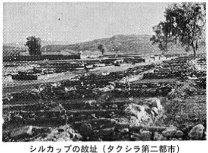
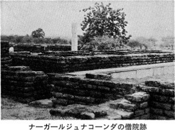
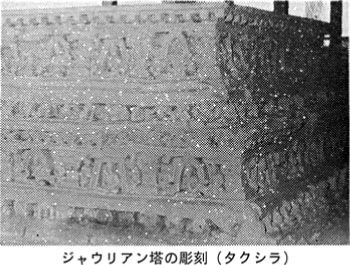

| 仏教史入門 (レグルス文庫) | |
| 塚本啓祥 | |
| (1976) | |
仏教史入門
塚本啓祥
レグルス文庫62
＊この電子書籍は縦書きでレイアウトされています。
まえがき
仏教は、教祖釈尊によってインドで創始されて以来二千数百年、広大なアジアの地域に伝播し、交渉をもった社会や文化との関係は複雑多岐にわたったため、培われた精神文化も種々の様相を呈している。したがって、仏教を一つの範疇のもとに取り扱うことは、ほとんど不可能に近いであろう。しかし、われわれ日本人が仏教を理解する場合には、日本に伝来し、日本の土壌に根ざし、生長してきた日本仏教が、その中心課題であることはいうまでもない。
それぞれの宗祖によって説かれた教え、いわば日本仏教諸宗派の本質となる理念は、現在も継承されているが、それらが現代社会において、どのように適応され、具体化されなければならないか、これは確かに問われるべき課題である。過去の宗祖たちは、それぞれの立場で釈尊に立ち返り、その問に対する答として新宗派を開いたのであった。
したがって、現代社会における仏教の新しい適応とその方法を見い出すためにも、仏教の源泉に立ち返り、二千数百年におよぶ仏教史の流れのなかに、それを可能ならしめる原理を求めなければならない。
本書は、仏教学を専攻しない一般学生を対象として執筆した。したがって、まず仏教の基本的立場を理解せしめるために、インドの仏教、すなわち初期仏教、部派仏教、大乗仏教を柱として、その背景となった歴史的な基盤を、政治・社会・経済・文化の立場から叙述し、それぞれの仏教を成立せしめた必然的な要因を明らかにすることにつとめた。また、その仏教を支えた教団の実態と、その思想の基本的な考え方の変遷を論述した。巻末に付記した「現代社会と仏教」なる章は、現代における仏教の在り方を展望する視点を与えるための管見を述べたにすぎない。
本書の作成に当って、第三文明社の安田理夫、田口進一の両氏には、巻末の索引作成をはじめ、校正その他種々の面でご助力をえた。記して感謝の意を表するものである。
一九七六年四月八日
釈尊降誕の日に鎌倉の寓居にて
塚本 啓祥
目次
インドの人種／インダス文明／アールヤ人のインド侵入／ヴェーダの宗教／ウパニシャドの哲学／都市の発展／専制君主の出現／バラモンとシャモン／新思想の抬頭
ブッダと仏伝文学／生誕の場所と部族／生いたち／出家の動機／求道の旅／成道と降魔／最初の説法／弟子の教化／入滅の年代
サンガの成立／比丘の生活／律体系の形成／サンガの運営／教義の綱格／現実世界の認識／現存生起の条件／理想世界の設定とその実践／経典の編纂／教団分裂
アレクサンドロスのインド遠征／アショーカ王と仏教／プシュヤミトラの破仏／インド・ギリシア王朝／メナンドロス王と仏教／シャカ・パフラヴァと仏教／部派の形成過程／三蔵の成立
クシャーナ王朝／カニシュカ王と仏教／アビダルマの編纂／注釈書の成立／『倶舎論』の体系／全存在の包括／存在要素としての法／因果関係の分析／輪廻と縁起
バラモン教の復興／ヒンドゥイズムの形成／『バガヴァド・ギーター』／仏陀観の発達／大乗の源流／大乗菩薩の理念／大乗仏教の基盤
『般若経』／『華厳経』／『法華経』／浄土経典／『維摩経』その他／「勝鬘経』その他／『涅槃経』
古代インドとギリシア文化／ヘレニズム文化の源流と変容／ヘレニズム文化の継承／海上貿易の発達／ガンダーラの仏教美術／西域・中国への伝播／仏典の漢訳
シャータヴァーハナ王朝と仏教／ナーガールジュナの教学／グプタ王朝と仏教／瑜伽・唯識の思想／ハルシャ王朝と仏教／密教の源流とその形成／パーラ王朝と金剛乗／イスラームの侵入／南インドの仏教
視点の設定／仏教の基本的立場／統一の論理／僧伽と社会／戒と実践倫理／信仰と実践道
カバー写真 スコタイ（タイ）(c)Steve Vidler/PPS
第一章 仏教発生の歴史的基盤
インドの人種
インド文化の主動的な地位をになったのはアールヤ人（アリヤン）であるが、かれらがインドに侵入する以前に、そこにはすでに褐色・短身・低鼻の原住民が居住していた。原住民のなかでその中心をなしたのは、ムンダ人とドラヴィダ人であった。しかし、アールヤ人は原住民を征服して東方や南方へ追いやりながら支配階級を構成した。かれらによって最初に形成された文化がヴェーダの宗教であり、バラモン教という。
アールヤ人はインド内陸への移住の過程で、その一部は原住民と混血して、アーリヨ・ドラヴィダのような新しい民族を形成することになった。かれらは都市を建設して部族社会から階級社会へ移行するにしたがって、アールヤ人の伝統的なヴェーダの宗教や慣習を無視する傾向を生じたが、それはやがて、アージーヴィカ・ジャイナ・仏教のような革新的宗教を発生せしめる基盤となった。
アールヤ人の政治・経済・文化にわたる支配にもかかわらず、原住民は社会の底辺にあって、インダス文明にも見られるような土着の宗教文化を持ちつづけたが、新興宗教の圧迫をうけたバラモン教は、それらを吸収してヒンドゥイズム（ヒンドゥー教）へと変質することになる。この傾向は大乗仏教の興起にも影響を与えたが、閉鎖的な自給自足の農村社会の形成に伴って、やがてこの土着の文化は、インドの宗教に支配的な位置を占めることになる。
インダス文明
一九二一年以来のインダス流域の発掘調査によって、ハラッパーとモヘンジョ・ダロの二大都市を中心として、高度な青銅器時代の文明が栄えていたことが明らかにされた。これはインダス文明と呼ばれ、その範囲はインダス流域から、ヤムナー渓谷、ナルマダーとタープティー両河の河口、カンベイ湾沿岸におよび、前二〇〇〇年を中心として、凡そ一千年間つづいたとみられている。
インダス文明は、メソポタミアのスメル文化に関係があろうと推定されているが、その特徴として、（１）凡そ千年にわたって大きな変化がなかったこと、（２）巨大な公共の記念建築がなかったこと、（３）インダスの都市機構が武力に対して弱かったこと、が指摘されている。都市は計画的に整備され、高く聳えた城砦と平地の住宅街とから成り立っていた。前者は宗教儀式と政治の中心をなし、後者には大浴場と穀物倉庫が設置されていた。住宅街は主要道路とこれに交差する小路とによって整然と区画され、給水施設・下水溝が完備していた。
出土品のなかには、金・銀・銅・青銅・石材・宝石・テラコッタを材料とした武器・器具・装身具・玩具・陶器などがあり、不明の文字を刻んだ印章も含まれている。
住民の大部分は農業に従事し、小麦・大麦の耕作、綿花の栽培をなした。都市の政体は明らかでないが、祭政一致の傾向が推測されている。アールヤ人が侵入するに及んで、かれらはその支配下におかれたが、かれらの宗教や慣習は、バラモン教のそれと並行して存続し、後世のヒンドゥー教に吸収されるに至ったものの如くである。出土品のなかには、動物崇拝・樹神崇拝・地母神崇拝に関係があると考えられるものもあるが、特にヒンドゥー教のシヴァ神の原型とみられるパシュ・パティ（獣主）の像、シヴァ神の男性力を象徴したリンガの原型と認められる石柱などは、後世のインド宗教との関係において注目される。
アールヤ人のインド侵入
コーカサスの北方にかれらの原住地を有したとみられるアールヤ人の一派は、西方へ移住して現在のヨーロッパ諸民族を形成したが、他の一派は東方へ移住して、西トゥルキスターンの草原地帯に遊牧したのち、イラーン人と分かれてヒンドゥー・クシュ山脈を越え、インダスの上流パンジャーブ（五河）地方に最初の定住地を見出した（前一三世紀頃）。かれらはインド・アールヤ人と呼ばれる。
インド・アールヤ人は原住民を武力によって征服して支配したが、アールヤ系諸部族間の内戦もあった。その一例として十王戦争が伝えられている。初期のアールヤ人社会は部族を最高の単位とし、族長は王（ラージャ）と称せられた。部族の意思決定は、サバーまたはサミティと名づくる高官や公民の集会においてなされ、王は部族民によって選出されたが、のちには世襲となった。王は補佐として廷臣と氏族長（グラーマニー）をもち、また軍事に関しては将軍（セーナーニー）の、宗教儀式に関しては司祭官（プローヒタ）の助力をえた。
社会構成の最小の単位は家族で、家父長制度による大家族をなし、一夫一妻が原則であった。一般に男尊女卑の傾向があったが、主婦は尊敬をうけ、ある程度祭祀に参与することが許された。共通な血縁の大家族の集団は氏族（グラーマ）と呼ばれたが、のちには村落共同体の意味に用いられ、行政上の単位となる。
産業は牧畜と農耕を主とした。家畜のなかでも牛がもっとも尊重され、物価の標準となったばかりでなく、供犠に用いられた。また、その肉は食用に供せられ、後世見られるような不殺生・菜食の生活理念はまだ芽生えていなかった。
都市文明はまだ発達せず、建築資材としては木材のみに頼り、石や煉瓦を用いなかったので、その遺構は現存していない。したがって、かれらの生活様式は古聖典を典拠として推定せざるをえない。これは、使用した文字が未だ解読されないインダス文明が、考古学的遺構や出土品によって究明されるのと対蹠的である。
ヴェーダの宗教
アールヤ人がインドに移住して最初に作成した聖典をヴェーダ（Veda）という。ヴェーダとは「知る」という意味の語根に由来し、宗教的知識を表わし、その知識を編纂した聖典の名称となった。ヴェーダの基本的な部分であるサンヒター（Sa hitā 本集）に四種あるが、『リグ・ヴェーダ』がもっとも古く（前一五〇〇─一〇〇〇）、アールヤ人がパンジャーブ地方に定住したときの成立とみられている。これは、自然界の現象、威力、構成要素、抽象的観念などを神格化した神（deva 天）に対する讃歌を集めたものである。ヴェーダの宗教では、祭壇を設けて犠牲を捧げ、多神中の一神をそこに勧請して祈願するのであるが、現世利益の傾向が強かった。しかし、天地創造の讃歌（＊）には、哲学的統一思想の萌芽が認められる。
hitā 本集）に四種あるが、『リグ・ヴェーダ』がもっとも古く（前一五〇〇─一〇〇〇）、アールヤ人がパンジャーブ地方に定住したときの成立とみられている。これは、自然界の現象、威力、構成要素、抽象的観念などを神格化した神（deva 天）に対する讃歌を集めたものである。ヴェーダの宗教では、祭壇を設けて犠牲を捧げ、多神中の一神をそこに勧請して祈願するのであるが、現世利益の傾向が強かった。しかし、天地創造の讃歌（＊）には、哲学的統一思想の萌芽が認められる。
＊ 天地創造の讃歌には、①創造讃歌＝ヴィシュヴァ・カルマン（造一切者）の歌（一〇・八一、八二）、プリハス・パティ（祈りの主）の歌（一○・七二）、ヒラヌマ・ガルバ（黄金の胎）の歌（一〇・一二一） ②プルシャ（原人）讃歌（一〇・九〇） ③無非有歌（一〇・一二九）の三段階の発展を指摘しうる。辻直四郎博士『インド文明の曙』九一─一〇〇頁の訳文を参照せよ。
パンジャーブ地方に定住していたアールヤ人は、その後東南に移住して、ガンガーとヤムナー両河に挾まれた地方（クル・パンチャーラ）に至り、小村落を形成して司祭者を中心とした氏族制農村を確立した。
讃歌を作ってこれを正確に暗誦し、次第に複雑化した祭式を誤りなく執り行なうためには、高度な専門知識と訓練を必要とし、司祭者の階級を形成せしめることになった。かれらによって作成された一群の文献をブラーフマナ（Brāhmaa 梵書、祭儀書）という。これはサンヒターに付随し、祭式の規定と神学的説明との二部から成り立っており、神話や伝説も挿入されている。その年代は前一〇〇〇─八〇〇年頃であるが、『リグ・ヴェーダ』を除く他の三ヴェーダ（『サーマ』『ヤジュル』『アタルヴァ』）も同時代の成立とみられている。
この時代には、部族民の勝利と福祉を祈願する祭祀が尊重されたため、司祭者の地位は高められ、司祭者は神に等しい存在とみなされた。また、政務を処理し兵士を統率した王族も独立の階級を形成し、牧畜・農業・工芸などの生産に従事する一般民衆は、司祭者・王族の下で庶民の階級を形成した。この三階級に対して、原住民およびこれと通婚した者は隷民として労役に服した。かようにして四種の階級（＊）（ヴァルナ（＊＊）、四姓）が成立した。
＊ 四種の階級とは、①司祭者（brāhmaa婆羅門）②王族（rājanya; 後世 katriya刹帝利という）③庶民（vaiśya吠舎）④隷民（śūdra首陀羅）をいう。
＊＊ vara は本来「色」を意味し、征服者と被征服者を、白色のインド・アールヤ人と褐色の原住民によって区別したことに由来する。
ウパニシャドの哲学
インド・アールヤ人の居住範囲は、クル・パンチャーラから更に東方へと拡大されたが、そのあいだに四ヴェーダに付随された文献アーラヌヤカ（Ārayaka 森林書）とウパニシャド（Upaniad 奥義書）が作成された。アーラヌヤカは森林において伝授されるべき秘密の教えを編纂した聖典であり、ブラーフマナからウパニシャドに至る過渡期の形態を示している。ウパニシャドは「近くに坐る」意味から転じて、師弟のあいだに口伝される秘密の教えを集成した聖典をいう。これは広義のヴェーダ聖典の終りに位置するところからヴェーダーンタとも名づけられる。
ウパニシャドには二百種に近い文献が現存しているが、古代ウパニシャドは上古（前八〇〇─五〇〇頃）、中古（前五〇〇─二〇〇頃）、中世（前二〇〇頃）の三期に区分される。また、これ以降の文献は新ウパニシャド（前二世紀─後一六世紀）と名づけられる。
統一原理の探究はすでにサンヒターやブラーフマナにおいても試みられたが、ウパニシャドに至って宇宙の根元をブラフマン（梵）に見出し、個人に内在するアートマン（我）と同一視したところ（梵我一如）に、その思想史的な意義がある。中性語のブラフマンは、もとはヴェーダの讃歌・祭詞・呪詞のもつ神秘的な力を意味したが、それはヴェーダに精通したバラモンに内在して、神を動かして願望を達成する原動力と考えられ、やがて創造主プラジャーパティと同一視された。他方、アートマンはもと「呼吸」を意味したが、「生気」「身体」「自身」「本体・霊魂・自我」の意を経て、創造主プラジャーパティと同一視されるに至った。かようにして、大宇宙の根元としてのブラフマンと小宇宙の本体としてのアートマンを同一と断定する（＊）ことになった。
＊ 梵我一如はウパニシャドの哲人らによって、「このアートマンはブラフマンである」（『ブリハドアーラヌヤカ・ウパニシャド』二・五・一九）、「私は梵である」（同一・四・一〇）、「汝はそれである」（『チャーンドーグヤ・ウパニシャド』六・八）のような大格語の形態で表現されている。
ヤージニャヴァルクヤは精神の状態を、覚醒位・夢位・熟睡位・死位に区分して考察したが、死位の考察は必然的に人間の死後の問題にふれざるをえなかった。かれはアートマンを葉から他の草葉に移る尺蠖に喩えている。アートマンは死後身体を離れるが、業（カルマン、行為）がそれに従い、業が終るとかの世から再びこの世に帰って、他の身体に移って輪廻（サンサーラ）すると説いている。
輪廻については、種々の説が伝えられるが、それらのなかで、もっとも整った輪廻説として「五火二道説」を挙げることができる。「五火説」は人が死んで火葬されると「月に入り」「雨となり」地上に降って米・麦などの「食となり」男子の体内に入って「精子となり」「母胎に入って再生する」という。これは降雨の現象と火葬の慣習とを結合して煙に乗って天界に昇るアートマンが、雨によって再び地上に降りるとする素朴な循環の論理に基づいている。しかし、これには輪廻からの解脱（モークシャ）を説く「二道説」が結びつく。すなわち、五火の教えを知って、森林において信仰を苦行として信じるものは、梵界に導かれて、再びこの世に帰って来ないとする。これを「神道」と名づける。これに対して、祭祀・浄行を布施として信じるものは五火の輪廻をなすとする。これを「祖道」といっている。
かようにして、前生の業によって現在の果報を規定し、現世の業によって未来の果報を予告する輪廻転生の思想が、上古のウパニシャドにおいて形成され、後世のインド思想に著しい影響を与えることになった。
都市の発展
前六世紀には、ガンガー平原に新しい階級が現われはじめていた。ヴェーダ文化の後期に部族内で牧畜者の階級であったヴァイシャ（庶民）は、部族の束縛をはなれた自由な農耕民として現われた。かれらはガンガー流域の肥沃な土地で、積極的に開墾を進めるとともに、灌漑用水の設備も整えられるようになったので、多くの農産物を産出した。このため物資が豊富となり、生活に余裕ができてきた。
豊富な農産物を生産して余剰物資を生じたことは、物資の交換を目的とした商業の発達を促し、農耕用の器具をはじめとした生活用品を生産するための手工業を振興することになった。このため新たに商工業に従事する人びとは、人口の集中をなして小都市（ニガマ）を形成した。そして、これらの小都市を中心として多数の群小国家が栄えて、貴族政治または共和政治を行なった。
古代インドの社会における村落行政は、国家機構発生の基盤をなした歴史的事情もあって、早くから存在した。しかし、地方によって村落機構の形態は異なっていた。これに対して都市行政の機構化はかなりおくれており、発生期の小都市をコーサラ王国のように、ニガマ・ガーマ（都市的村落共同体）として処理した例もある。しかし、このニガマ・ガーマも都市化が進むにつれて、その構成する社会も著しく変化した。新しい都市の出現は、裏面からいえば、古来の氏族的階級制度の崩壊を意味した。
都市における貨幣経済の進展は、新しい階級の育成を促した。貨幣による商品の等価交換によって、都市には莫大な富が蓄積され、商工業者は組合をつくって都市における経済的実権を握った。金融業者や商人のギルドの長はセーティ（またはシレーシュティン）と名づけられた。セーティとは「すぐれた人」「卓越した人」を意味する語で、ブラーフマナ時代には村落共同体（ガーマ）の首長（ガーマニー）を表わしたが、都市の発展に伴って、抬頭した商人階級の首長の名称となった。
また、これと類似の意味に用いられる名称にガハパティ（またはグリハパティ）がある。これは本来は「家長」を意味し、ヴェーダやブラーフマナでは供犠を行なうときの主人役であったが、この新しい経済的発展に伴って、商業・手工業・農業によって富を取得したものは、出身の階級に関係なく尊敬されたために、家父長的大家族の長を意味するようになった。かれらは 新しい所有者階級の実行力のある成員であって、自分の家族を養う義務があり、その親族集団の相続法によって拘束されたが、部族の規制は受けず、取得した富を自由に処分することができた。かような新興階級、殊に都市における商工業者を代表するガハパティ（資産者）は、やがてこの地域に発生する仏教やジャイナの教団に経済的支援を与えることになる。
専制君主の出現
前六世紀のガンガー平原において、王族および資産者が抬頭したことは、社会構成の変動を生ぜしめ、旧来の階級制度（司祭者・王族・庶民・隷民）を崩壊させていった。仏教の原始聖典によれば、当時の階級あるいは身分として、クシャトリヤ（王族）、ブラーフマナ（司祭者）、ヴァイシャ（庶民）、シュードラ（隷民）、チャンダーラ（屠殺人）、プックサ（汚物清掃人）の六種をあげている。また、資産者は、たとえ隷民の出身であっても、財宝・米穀・金銀に富めば、王族・バラモン・庶民によって敬意をはらわれたという。
他方、社会における支配的地位を獲得したクシャトリヤの王は、都市の経済的発展を背景として、強大な権力を掌握した。かれらは積極的に宏壮な都市の建設を助長し、これらを拠点として大国の支配権を拡大した。内にあっては専制的な行政によって住民の利益を収奪し、外に対しては隣接する小国を武力をもって併合していった。当時の大国（マハージャナパダ）として十六の名称が知られたが、なかでもコーサラ、マガダ、アヴァンティ、ヴァンサの四大国が強力であった。
専制君主が住民に対して及ぼした圧制は兇暴であった。国王は必要に応じて税率を増額し、農民は強制労働に苦しんだ。仏教の原始聖典によれば、国王の難を盗賊の難に比肩せしめ、両者から逃れるために出家するものの多かったことを伝えている。国王は土地を自己の所有とし、その生産手段をも掌中におさめた。したがって、国王の難を恐れる住民は自己の職業をすてて、王のために農業や工業の労役に服している。また、国王の行政上の醜態も目にあまるものがあった。王は法による決定をせず、賄賂によって富をえ、財を貪り、住民に対して慈愍の情なく、種々の方法によって徴税した。これをきらった住民は村落をすてて辺境に逃れたため首都は空疎となり、辺境に人口が集中する結果となったと伝えられる。
バラモンとシャモン
仏教の原始聖典に「沙門・婆羅門」という語があり、アショーカ王（前三世紀前半）の碑文に「ブラーフマナ・シラマナ（Śramaa）」という複合詞を指摘できるが、さらにギリシア・ラテンの文献は、マウルヤ王朝期のインドにおける哲学者の二派として、ブラークマナ（＝バラモン）とサルマーナ（＝シャモン）を伝えている。これは初期仏教の時代に、バラモンに対立する精神的指導者として、シャモンが有力な地位にあったことを推定せしめる。
当時のバラモン社会には四種の生活階梯（アーシラマ）の形成過程がみられる。学習期・家住期・林棲期・遊行期がそれである。隷民を除く三階級（バラモン・王族・庶民）の出身者は、年少時にバラモン師匠の家で、数年にわたって梵行者としてヴェーダを学習し、それを終えると家住期に入り、家長としての義務を果たした。ヴェーダの聖典は、はじめの二つの生活階梯における義務を示しているが、未だ出家や遊行に言及していなかった。しかし、上古のウパニシャドになると、第三の生活階梯を述べ、さらに第四の生活階梯への展開の示唆を与えている（＊）。そして、革新的宗教が現われた時代に作成された一連のバラモン系の文献（法経・法典・新ウパニシャド）には、林棲・遊行の生活階梯を詳細に規定するようになった（＊＊）。要するに、林棲・遊行の二階梯は、学習・家住の前二階梯に対立し、かれらの理想とする精神的段階が、世間的環境を放棄することによって得られるとするところにその特色がある。
＊ 『チャーンドーグヤ・ウパニシャド』二・二三・一。
＊＊ 『ゴータマ法経』三・二、『アーパスタンバ法経』二・九・二一・一、『ヴァシシュタ法経』七・二、『マヌ・スムリティ』（マヌの法典）三・一─二、六・一、三三。
しかし、法経や法典は家住期を中心として、根本的にはヴェーダの伝統を維持しているが、ウパニシャドは林棲期乃至は遊行期の価値を称揚して、結局はヴェーダの供犠を中心とした社会的慣習と宗教的文化を否定している。かような社会的環境は、仏教やジャイナ教のような革新的宗教の成立した社会的基盤と類似の関係にある。
他方、シャモンとはこの時代の革新的思想家の総称であって、かれらは一所不住の遍歴をしながら森林において修行し、村や町に行って教えを説き（遊行）、説法の報酬として布施せられた食物によって生活した（乞食、行乞、托鉢）。かれらはその生活の外形によって遊行者・遁世者・苦行者・行乞者（比丘）などと名づけられたが、その生活共同体（サンガまたはガナ）の指導者はシャモンとして尊称された。
新思想の抬頭
このような社会的事情を背景として、多くの思想家が輩出し自由思想を提唱した。六十二見（＊）や三百六十三の論争家（＊＊）が伝えられるが、それらの代表的な思想家として六師外道の学説（＊＊＊）が知られている。六師とは、
アジタ・ケーサカンバラ......順世派の先駆
サンジャヤ・ベーラッティプッタ......不可知論
マッカリ・ゴーサーラ......邪命外道
パクダ・カッチャーヤナ...... 〃
プラーナ・カッサパ...... 〃
ニガンタ・ナータプッタ......ジャイナ
である。
＊ 『長部経典・梵網経』（『南伝大蔵経』六）
＊＊ 『スーヤガダ』二・二・七九（ジャイナ教聖典）
＊＊＊ 『長部経典・沙門果経』（『南伝大蔵経』六）
アジタは地・水・火・風の四元素をたて、人間はこれらから構成されているので、愚者も賢者も身体の破滅とともに消滅し、善業または悪業の果報を受けないとした。これを感覚的唯物論といい、順世派（ローカーヤタ）の先駆とみられる。
サンジャヤは認識の客観的妥当性を否定する不可知論（アジニャーナ・ヴァーダ）を唱えた。たとえば、「来世が存在するか」の問いに対して、あるとも、ないとも、ないのではないとも答えられないと論じた。
マッカリは存在するものの構成要素として、霊魂・地・水・火・風・虚空・得（元素の結合）・失（分離）・苦・楽・生・死の十二種を措定し、これらを実体視している。そして、存在するものが業によって規定されるという従来の輪廻説を否定して、流転するものはすべて運命・環境・天性に支配されるとする一種の無因論を主張した。かれはアージーヴィカ（生活に関する規定を遵守するもの）の代表者であったが、他の宗派から邪命外道（生活の手段として修行するもの）と非難された。
パクダは地・水・火・風・苦・楽・命我の七要素をたてた。
プーラナは、当時の社会において悪と考えられていた殺生・偸盗・邪淫・妄語などを行なっても悪果を受けることはなく、善と考えられていた布施・克己・真実などを行なっても善果を生じることはないとして、一種の無道徳論を主張した。
ニガンタ・ナータプッタは、ジャイナ教の開祖ヴァルダマーナを仏教徒が呼んだ名前で、ニガンタ（離繫）はかれ以前に存在した宗派の名称（原始ジャイナ教も同名で呼ばれた）であり、ナータプッタはナータ族の出身を意味する。ジャイナ教の開祖はマハーヴィーラ（大雄、大勇）またはジナ（勝者）ともいわれ、ジナの教えを信奉する人びとをジャイナと名づけた。かれはブッダより十五年ほどのちに、ヴェーサーリーの近くで王族の王子として生まれ、三十歳で出家して十二年間苦行した結果、覚りをえてジナとなり、人びとを教化して、パトナの近くで七十二歳で滅した。
ジャイナの伝説によれば、かれ以前に二十三人の救世者が現われたが、かれはかれより二〇〇～二五〇年ほど以前に実在したと考えられるパーサの教えを改めて「五大誓」を提唱した。すなわち無殺害・不妄語・離不与取（不偸盗）・貞潔（不婬）・無所得がそれである。
ジャイナの原始的世界観によれば、存在の基礎として「五種の有聚」すなわち、ダンマ（運動の条件）・アダンマ（静止の条件）・虚空・命我・素材（原子）をたて、これらを実体視している。また、それぞれを点（空間点）の集合となし、これによって世界の形成過程を統一的に説明している。また、時間についても時間点によって説明し、現在を一時点、未来は一時点の増加、過去は一時点の減少からなるとする。
さらに、かれは業を物質的に表わして、外部から身内の命我に漏入して付着すると考え、それによって命我の生天解脱が妨げられていると考えた。したがって解脱の方法として苦行を重んじ、それによって業を滅してその漏入を防ぎうると説いている。
ジャイナ教はマハーヴイーラの時代には、すでに有力な教団を形成していたが、そののち仏教とともに革新的宗教の二大勢力として、バラモン教に対抗してその教線を拡大していった。
第二章 ゴータマ・ブッダ
ブッダと仏伝文学
ブッダ（Buddha）は、動詞語根 budh（めざめる、覚る）に由来する語で、「めざめた人、真理を覚った人」を意味する。これが中国に伝えられて仏陀、仏、浮屠などと音写されたが、さらに日本に伝わって、美称の接尾辞「ケ」を伴って「ホトケ」と称せられた。
仏教の歴史のなかで、ブッダは人間の理想像となったため、実際に多数のブッダが信仰の対象となった。したがって、仏教の開祖である歴史的存在を、他の諸仏から区別してゴータマ・ブッダ（Gotama Buddha）と名づける。ゴータマとはかれの所属せる姓に基づく。
ゴータマ・ブッダはサクヤ（またはシャークヤ、釈迦）という部族出身の聖者（ムニ）であるところからサクヤムニ（またはシャークヤムニ、釈迦牟尼）あるいは釈迦牟尼世尊と呼び、日本ではこれを略して釈尊または釈迦という。
さて、ブッダの伝記を組織的にまとめたものに、仏伝文学と名づける一群の経典が現存している。しかし、いずれの経典も、ブッダの滅後数世紀を経て作成されたものであり、原始聖典に散在した断片的な記事を源泉資料として、偉大な教祖を鑚仰する目的で叙述したのであるから、著しい粉飾が認められる。したがって、教祖の人間的生涯を知るためには、仏伝文学の源泉となった原始聖典に伝説の核を求めなければならない。もとより、すでに散逸した経典もあるわけであるが、現存の原始聖典としてニカーヤ（Nikāya 漢訳で阿含）とヴィナヤ（Vinaya 律）をあげることができる。なかでもニカーヤ中の『スッタニパータ』（経集、『義足経』）とヴィナヤ中の『パーティモッカ』（戒本、『戒経』）に含まれる断片的な記事が、現在手にしうる最古の史料といえる。
生誕の場所と部族
仏伝文学はブッダの生誕地をルンビニー園に帰しているが、『スッタニパータ』（＊）には、
比類ない最勝の宝であるかの菩薩は、人びとの利益安楽のために、人間世界に生まれたもうた。サクヤ族の村（ガーマ）に、ルンビニーの地方（ジャナパダ）に。
と伝えている。ここにいう「村」とは、はじめは血縁氏族の集合体（村落共同体）であった。また、アールヤ古代社会の最大の組織体は部族（ジャナ）であって、かれらの居住する土地（領土）をジャナパダ（地方または国土）と名づけた。専制的な王国が出現したブッダ時代には、王国は村落の集合体と考えられた。一般に村落は農地と牧草のなかに位置し、周囲には森林があった。サクヤ（釈迦）国はコーサラ王国の宗主権下にある小国であったのである。したがって、引用文は、サクヤという部族によって構成された村落共同体であって、かれらの居住する土地ルンビニー地方に、未来のブッダである菩薩が生誕したことを意味する。
＊ 『スッタニパータ』六八三（『南伝大蔵経』二四・二五九頁）。
ルンビニーは現在もネパール王国のタラーイ所在の地方（＝県）の名称として残り、仏伝のルンビニー園は、インド連邦のウッタル・プラデーシュ州、バスティー地方のドゥルハーの東北八キロメートル（ネパール国境内四キロメートル）に位置するルンミンデーイーという寺院に比定される。ルンミンデーイーはルンビニー・デーヴィー（ルンビニーという地母神）に由来するとみなされている。サクヤのトーテムたるサーラ樹の森がこの女神にささげられていたが、そこでゴータマ・ブッダが生誕したのである（＊）。
＊ アショーカ王のルンミンデーイー法勅（拙著『アショーカ王碑文』一三九頁）による。玄奘の『大唐西域記』劫比羅伐窣堵国の条（『大正大蔵経』五一・九〇二中）には、ブッダの生誕に関説する記事がある。
サクヤ族がいかなる人種に属したかは明らかでないが、かれらが非アールヤ系のコーリヤ族とローヒニー川の水利権をめぐって争ったとき、かれらがアールヤ人相互の規則を守らなかったという伝説は、かれらがコーリヤ族をアールヤ人と認めていなかったことを意味する。伝説によれば、ブッダはイクシュヴァーク（甘蔗王）の後裔であったという。イクシュヴァークはもとインダス川またはガンガー上流の王家の名称であった。しかも、コーサラを支配した王朝（太陽氏族）の先祖もイクシュヴァークであったというから、サクヤ族はコーサラ国王と同じ系譜に属すると主張したことになる。
サクヤ族の領域は、現在のウッタル・プラデーシュ州のバスティーとゴーラクプールの両地方に沿って、ネパールとインドにまたがる小範囲であった。北方のヒマーラヤ山脈から多数の支流となって南へ流れるガンガー川は、その流域に広大な平原を形成し、その豊富な水利によって、早くから稲作の技術が発達した。東方はローヒニー川を隔ててコーリヤ族と相対し、その背後にはマッラ、ヴィデーハ、ヴァッジの部族国が位置した。南方と西方はラープティー川に境されてコーサラ王国に接し、自治は認められたもののその宗主権下におかれていた。さらにガンガー主流の南にはマガダ王国が強大な武力をもって、その支配権を拡大しつつあった。
かような諸勢力のあいだに介在した小さな部族国サクヤの首長の家系に、ブッダは生誕した。父はスッドーダナ（浄飯王）、母はマーヤー（摩耶）といった。ブッダの幼名はゴータマ・シッダッタと名づけられたが、ゴータマとは「すぐれた牛」を意味し、古代部族社会の牡牛崇拝に関係があったと考えられる。サクヤの首都はカピラヴァットゥ（またはカピラヴァストゥ）であった。
生いたち
ブッダの生誕については種々の伝説が成立している。菩薩はトゥシタ（兜率）天から降ってマーヤー夫人の胎内に入ったと伝えられるが、これはすでに『スッタニパータ』（＊）に述べられている。また、そのときかれは六牙の白象に乗って降りてきたという。マーヤー夫人が出産に先立って、サクヤ族の神聖な蓮池で沐浴し、サクヤ族のトーテムであるサーラ樹の森で出産したことは、部族の習慣に従ったものと考えられる。マーヤー夫人がアショーカ（無憂）樹の花の一枝を手折ろうとしたとき、彼女の右脇から菩薩が生まれたという伝説は、『リグ・ヴェーダ』のプルシャ讃歌を想起せしめる。誕生日は北伝によれば四月八日、南伝によればヴェーサーカ月（インド暦第二月、太陽暦五月）の満月の日に当るという。
＊ 『スッタニパータ』九五五（『南伝大蔵経』二四・三六三頁）。
ついで、菩薩が生まれたとき、アシタ仙がかれの将来について予言したという伝説が、『スッタニパータ』（＊）に現われている。すなわち、相好と神呪に精通したアシタ仙は、サクヤ族の牡牛のような児を抱きあげて特相を検べ、歓喜の涙を流し、
この王子は覚りの頂に達するでしょう。この人は最上の清浄を見、多くの人びとの利益をはかり、あわれむが故に、法輪を転ずるでしょう。かれの清浄行はひろく弘まるでしょう。（六九三）
と言って、宮殿を去ったという。
＊ 『スッタニパータ』（ナーラカ経）六七九─六九八（『南伝大蔵経』二四・二五八─二六三頁）。
ブッダが生誕した時代には、サクヤを含む中インドの社会は、政治的・経済的に大きな変動の過程にあった。人びとはこの社会変動のひずみに抑圧され、苦悩からの解放を求めていた。このような一般民衆の希求を反映して、サクヤ族のあいだに過去仏の信仰があったように思われる。すなわち、過去に六仏が順次現われて人びとを救済して滅度したが、近い将来に再びブッダが現われるであろうという信仰であった。したがって、世の人びとの利益をはかり、人びとを教導する偉大な聖者の出現が希求されたのは当然であろう。
ブッダの生誕後七日にして母マーヤー夫人は歿し、その後は母の妹マハーパジャーパティーに養育された。かれはサクヤ族の王族としての慣習にしたがって、学問・武芸にわたって訓練を受けたが、あらゆる面で非凡の才能を発揮した。長じてサクヤ族の娘ヤソーダラーを妃として一子ラーフラをもうけたと伝えられる。
かれの宮殿における生活は、物質的には恵まれていたようである。宮殿には蓮池が設けられ、青・紅・白の蓮華が植えられていた。栴檀香や衣類はカーシ産のものが使用された。また、冬・夏・雨の三季に適した三種の宮殿が設けられ、女だけの伎楽にとりかこまれた裕福な生活であったという（＊）。
＊ 『増支部経典』一・一四五（『南伝大蔵経』一七・二三四頁）。
しかし、太子は早くから人生の悩みをいだいていたようである（＊）。『スッタニパータ』（＊＊）の詩句に、
ああ短いかな、人の生命よ。百歳に達せずして死ぬ。たとい、これ以上長く生きようとも、また老衰のために死ぬ。
と述べているように、現実生存の苦悩の認識がかれの思想の基調をなした。
＊ 『増支部経典』一・一四五─六（『南伝大蔵経』一七・二三五─六頁）。
＊＊ 『スッタニパータ』八〇四（『南伝大蔵経』二四・三一三頁）。
出家の動機
宮殿において裕福な生活をした太子が、世俗をすてて出家求道の旅に出た動機について、仏伝文学『ラリタヴィスタラ』（＊）は四門出遊の伝説を描いている。これは後世の粉飾になるものであって、それが史実に基づいているかどうかは疑わしい。しかし、かれが人生における「老・病・死」の苦悩に沈思することが多かったという初期の伝承は、四門出遊の劇的描写の素材を与えるに十分であろう。
＊ 『ラリタヴィスタラ』は漢訳『方広大荘厳経』（『大正大蔵経』三『国訳一切経』本縁部三）に当る。
しかしながら、一方では裕福な宮殿生活と愛する妻子をふり捨ててまで、サクヤ国の首長たるべき権利を放棄するに至った太子には、避けることのできないサクヤの政治的運命が予測されたと考えられる。
前七世紀に、コーサラ王はカーシを征服して、ガンガーの河港バーラーナシーをその支配下においた。前六世紀には、コーサラの首都はサーケータからサーヴァッティーに遷されたが、この地点は二大通商路の交差点に位置していた。したがって、バーラーナシー産の綿や絹は早くからコーサラやサクヤに知られていた。マハーコーサラから王位を継承したパセーナディは、ネパールのタラーイ地方から南方のガンガー川に及ぶ広大な領域を支配下においた。その版図にカーシ、サクヤなどが含まれていた。
さて、コーサラははじめから村落の集合体であったが、その支配権が弱まったとき、コーサラの東北周辺には遠心的な傾向が現われ、ガナ（共和制国家）が生じたとみられる。しかし、ブッダ時代までに、コーサラ・ガナのいくつか（例えばマッラ）はそれぞれの領土をもつ独立の国家となっていた。このためコーサラ王、殊にヴィドゥーダバは武力によるコーサラ・ガナの支配を試みたのであり、コーサラ王国に対するサクヤの隷属、特に晩年におけるサクヤ族虐殺の伝説に、かれらの政策の一斑をうかがうことができる。このようなコーサラの宗主権のサクヤに対する圧迫は、おそらく太子の若き日も身近かに感じられたであろうし、太子の出家に至る重要な原因の一つとなったと考えられる。
求道の旅
太子は若き日に心にいだいた人生の問題を解決すべく、出家求道者となった。ブッダが後年になって述べたという伝説（＊）によれば、
出家者たちよ、私は実に〔道を求める心を起こして〕のちに、まだ若い青年であって、漆黒の髪があり、楽しい青春にみちていたのに、人生の春に、父母が欲せず顔に涙を浮かべて泣いていたのに、髪と鬚を剃り下して、袈裟衣をつけて、家を出て出家修行者となったのである。
とかれの心情を吐露している。また、仏伝文学はかれの出城に関して、御者チャンナと愛馬カンタカとの劇的場面を描いている。これはかれの二十九歳のときのことであった。
＊ 『中部経典・アリヤパリエーサナ・スッタ（聖求経）』一・一六三（『南伝大蔵経』九）。
サクヤの宮殿を去った太子は、ヒマーラヤ山麓を東へ進み、ガンダク川に沿って南下し、ガンガー川を渡って、当時最大の王国マガダに至った。当時のマガダは革新的思想家の中心地で、各地にかれらの共同体が存在していた。太子はつづいて二仙人アーラーラ・カーラーマとウッダカ・ラーマプッタに師事した。かれらは修定者の代表者で、精神統一によって解脱しうると考えていた。ドヤーナ（禅、禅定）、サマーディ（三昧）、ヨーガ（瑜伽）のような語は、このような精神統一の行法に対して名づけられたもので、これらの宗教的実践は、インドの宗教ではその起原ははなはだ古い。太子はかれらが体得した禅定の極意を修得したが、かれらに人生逃避の傾向があるのに満足しないでかれらのもとを去った。
太子はラージャガハの西南に位置するガヤーに至った。当時ネーランジャラー河（尼連禅河、現在のパルグ）畔のウルヴェーラー村の森林には、多くの苦行者が住していた。かれはここに修行の最適地を見い出したのである（＊）。苦行は一般にアージーヴィカ（邪命外道）やニガンタ（ジャイナ）の好んで用いる実践法であったが、かれらは心の制御、止息、減食、断食、身の苦行などによって肉体を苦しめ、その力を減ずることによって精神の自由を得ると考えていた。
＊ 『中部経典』一・一六六──七（『南伝大蔵経』九・二九九─三〇〇頁）。
成道と降魔
太子は六年にわたって厳しい苦行を修したが、なんら得るところはなかった。そこでかれは苦行をすて、村の一少女の捧げた乳糜をとって、川で沐浴して気力を回復し、アシヴァッタ樹の下で観想にふける。『スッタニパータ』（＊）はかれが覚りを開くに至るまでの内観的超克の過程を述べている。これは、太子の降魔に関する最古の描写であるが、旧来のバラモン的慣習に依存する伝統的思想と、新たに抬頭した革新的思想との対立を、太子がいかにして超克したかを知るに十分である。しかし、後世の仏伝文学は、これに対して劇的な粉飾をほどこし、ブッダの成道への序曲を奏でている。
＊ 『スッタニパータ』四二五─四四九（『南伝大蔵経』二四・一五四─一六〇頁）。
禅定に入った太子は、初禅・二禅・三禅を経て四禅に達した。それは憂喜と苦楽を離れた境地である。次いで、かれは十二因縁を順逆に観じて一切諸法の真理に通達して覚り（ボーディ、菩提）をえた（成道）と伝えられる。それはかれの三十五歳（または三十歳）の時であった。北伝は十二月八日、南伝はヴェーサーカ月の満月の日であったとする。かれらの覚りに因んで、この地をブッダ・ガヤー（現在のボード・ガヤー）といい、覚りを開いた樹を菩提樹と名づけている。
ここで注目すべきことは、かれがかつてすてた修定主義の実践法である禅定を、かれの覚りの方法として取り上げたことである。愛欲道に偏した在俗生活を離れて出家したかれは、今また苦行をもって極端とする出家生活へのとらわれを離れた第三の道を選んだのである。
最初の説法
『律蔵・大品』（＊）によれば、ブッダは成道の直後、解脱の楽しみを味わうが、かれが覚った法は甚深であるから、世俗の人には理解できないであろうとして、説法することを躊躇したという。梵天の勧請によって、かつての師アーラーラとウッダカに説法しようと考えたが、かれらはすでに逝去していて果たされなかった。そこで、かれが苦行をすてたときにかれのもとを去った五比丘に説法するために、バーラーナシーの鹿野苑（ミガダーヤ、現在のサールナート）へ赴いた。この地は「仙人の住処」（イシパタナ）とも呼ばれ、当時は多くの出家修行者の集まる場所であった。
＊ 『律蔵』一・一一八（『南伝大蔵経』三・一─一四頁）。
ブッダが五比丘に説いた教えについて、『転法輪経』（＊）は次のように述べている。
修行者たちよ、これら両極端は修行者たるものの避くべきところである。何を両極端となすかというに、〔一は〕諸欲において欲望にふけり、下劣、野鄙、凡愚なる在俗の生活であり、〔他は〕自己の辛苦を事として苦しむ出家修行の生活であって、共に聖者の求むる法ではなく、義に相応しないものである。修業者たちよ、如来はこれらの両極端によらないで、中道を証知したのだ。これによって眼となり智となり、寂静なる智・正覚・涅槃に趣くことができる。
と。これについで、ブッダはこの中道説とは四諦・八正道であると説き示している。これに対して『律蔵・大品』（＊＊）はさらにブッダが五蘊・無我の説を述べたと伝えている。この鹿野苑における最初の説法を「初転法輪」と名づける。
＊ 『相応部経典』五・四二〇─四二四（『南伝大蔵経』一六下・三三九─三四三頁）。
＊＊ 『律蔵』一・一三─一四（『南伝大蔵経』三・二三─二六頁）
さて、『転法輪経』などの伝える愛欲と苦行の両極端とは、太子が成道以前に歩んだ生活の階梯を意味するものであった。上述のごとく、仏伝文学は太子時代の宮殿における享楽生活と、その超克としての出家（在俗生活の放棄）を描いている。当時のインド社会においては、在俗生活の捨離が覚りに至る不可欠の条件と考えられたからである。バラモンの四時期にみられる林棲・遊行の階梯、および非バラモン的教団の指導者（シャモン）が形成した生活共同体は、バラモン社会の在俗生活と対立している。要するに、在家と出家とは古代インドにおける対蹠的な二重の社会であったといえよう。そして、ブッダがここに提唱した中道は、在俗生活と出家生活の二重の否定をその立場とすること、換言すれば、在俗生活を離れ、しかも出家にとらわれない生活を、かれの理想としたことがうかがえる。
弟子の教化
ブッダはバーラーナシーの鹿野苑で最初の説法をなして以来、八十歳の入滅までの四十五年間は、ガンガー流域の各地を巡遊して、多くの人びとを教導したのである。しかし、この四十五年の教化活動のなかで、かれの行跡の順序をたどりうるのは、最初の数か月と最後の数か月とである。雨季の定住（安居）は、その地方の教化活動にかなりの効果があったと考えられるが、その場所ははじめの二十年と、最後の二年についてのみ知られている。
在世中の教化の範囲は、東はアンガ国のチャンパー、北はサクヤ国のカピラヴァットゥとコーサラ国のサーヴァッティー、西はクル国のカンマーッサダンマ、南はマガダ国のガヤーとヴァンサ国のコーサンビーに及んだようである。さらに、原始聖典のなかで、説法の中心となった地名は、その頻度数より推定するに、サーヴァッティー、ラージャガハ（マガダ国）、ヴェーサーリー（ヴァッジ国）、カピラヴァットゥ、コーサンビーの順となっており、なかでもサーヴァッティーとラージャガハがもっとも多い。
ブッダの教化活動のなかで、マガダは革新的宗教の地盤であったため、もっとも成功をおさめたようである。ラージャガハでの主な帰依者として、ウルヴェーラー、ナディー、ガヤーの三迦葉（カッサパ）（＊）、舎利弗（サーリプッタ）と目連（モッガラーナ）（＊＊）、およびマガダ王ビンビサーラをあげることができる。王はヴェールヴァナ園（竹林精舎）を、医者ジーヴァカはジーヴァカ園を寄進している。
＊ ウルヴェーラー・カッサパ、ナディー・カッサパ、ガヤー・カッサパの三兄弟はバラモンの結髪行者で、それぞれ五百人、三百人、二百人の弟子を擁し、マガダに有力な教団を形成し、火神アグニを祭る儀式を執り行なっていた。かれらは計一千人の弟子たちと共にブッダに帰依した。『律蔵』一・二四─三五（『南伝大蔵経』三・四四─六三頁）。
＊＊ 舎利弗と目連は、六師外道の一人であるサンジャヤの弟子であったが、二百五十人の弟子たちと共にブッダに帰依した。のちにブッダの十大弟子の二人に数えられている。『律蔵』一・三九─四四（『南伝大蔵経』三・七一─七九頁）。
ヴェーサーリーには、アンバパーリーが寄進したアンバパーリ林があった。コーサラやサクヤにおけるブッダの伝道は、バラモン教徒の強い反対を受けて、種々の困難に直面した。しかし、給孤独長者（本名スダッタ）が帰依して、サーヴァッティーに祇樹給孤独園（祇園精舎）を寄進して以来、コーサラにおける教化活動の拠点となった（＊）。父浄飯王、子ラーフラ、異母弟ナンダが帰依している。また、養母マハーパジャーパティー・ゴータミーの切なる希望が認められて、比丘尼サンガが設立された。
＊ 『律蔵』二・一五四─一五五（『南伝大蔵経』四・二三七─二四四頁）。
ブッダの晩年にデーヴァダッタ（提婆達多）はマガダのアジャータサットゥ（阿闍世）太子を煽動して、ビンビサーラ王を幽閉して王位を簒奪せしめた。一方、かれは、〈出家者〉は、
（１）生涯林住者となるべきで、村邑に入るものは罪とせられよう。
（２）生涯乞食者となるべきで、請食を受けるものは罪とせられよう。
（３）生涯糞掃衣（ぼろを綴った衣）者となるべきで、居士衣（在家の着物）を受ける者は罪とせられよう。
（４）生涯樹下坐者となるべきで、屋内に入るものは罪とせられよう。
（５）生涯魚と肉とを食すべきでなく、魚と肉とを食する者は罪とせられよう。
の五法を提案したが、ブッダにしりぞけられたため、分派して独立の宗団を創設したという（＊）。これは、仏教サンガの僧院化に対して、原始サンガの生活様式を維持しようとするグループの抵抗を伝説化したものとみられている。
＊ 『律蔵』二・一八五─二〇六（『南伝大蔵経』四・二八四─三一五頁）。
また、コーサラ王パセーナディはマガダのビンビサーラ王との婚姻による同盟を結んだが、他方サクヤの宗主権を握っていたかれは、サクヤの娘を求婚した。パセーナディと同様にイクシュヴァークの後裔であることを自負していたサクヤ族はその申し出に困った。そこでかれらはサクヤのマハーナーマと奴隷の女ナーガムンダーとのあいだの娘ヴァーサバカッティヤーをかれの妃に送った。その子ヴィドゥーダバは、のちになってこの詭計を知って憤慨し、王位を簒奪するとともに、カピラヴァットゥに軍を派遣してサクヤ国を滅亡に至らしめたと伝えられる。
入滅
ブッダの入滅に関する記事は『長部経典・大般涅槃経』（＊）によって知ることができる。これにはマガダのラージャガハからマッラのクシナーラーに至るブッダの最後の旅行と入滅の出来事が記されている。ブッダは滅後の教団の依り所として「自ら」と「法」とを示し、クシナーラーの沙羅双樹の下で「不放逸」を説いたのちに、八十歳で入滅したと伝えられる。入滅の日は、北伝によれば二月十五日、南伝によればヴェーサーカ月の満月の日であったという。
＊ 『大般涅槃経』（『南伝大蔵経』七）。
滅後にブッダの遺骨は八分され、瓶・灰とともに計十塔が建立された。一八九八年にネパールの南境近くの古墳で、Ｗ・Ｃ・ペッペによって骨片を納めた舎利壺が発見されたが、その蓋に刻まれたブラーフミー文字から、『大般涅槃経』に伝えるところのサクヤ族によって奉祀されたカピラヴァットゥの塔にあたると推定されている。しかし、Ｊ・Ｆ・フリートのように、この舎利壺をヴィドゥーダバ王によるサクヤ族殺戮の伝説に比定する説もあるが、一般にはペッペの説が用いられている。
入滅の年代
ブッダの入滅の年代については、古来から多くの説が伝えられているが、古代インドには客観的な叙述を目的とした「史書」が存在しなかったため、その確実な年代を決定することはほとんど不可能に近い。かれの入滅の年代について、インドの一伝承は前五四三年としているが、今日スリランカー、ビルマ、タイなどの南方仏教はこの年代を用いている。しかし、この記録には虚構の年数六十年が挿入されている。このような現象はジャイナ教の伝承にも認められ、インドや他のいくつかのアジア諸民族が、ひとまわりの年齢として六十年を数える習慣に一致する。それゆえ、六十年を減じた年数は、前四八三年を入滅の年とするスリランカーの伝承（南伝）に比定され、さらに中国の広洲（広東）に伝えられた衆聖点記説（入滅後毎年一点ずつ律蔵にうちつづけたという記録）とも一致する。これは仏教の布教に偉大な貢献をしたと伝えられるマウルヤ王朝のアショーカ王の即位年代（前二六八年）を、ブッダの滅後二一八年と伝えることに基づいて、逆算によって算定された年（268+218-1=485）に近い。
これに対して、カシミールの伝承（北伝）は、アショーカ王の即位をブッダの滅後一〇〇年〔または一一六年、一六〇年〕と伝えているが、一一六年とする伝承にしたがって前三八三（=268+116-1）年とみなす説も行なわれている。
さて、これらの伝承の背景となるマガダの王統史をみるに、スリランカー伝承には、二一八年を満たすために、統治年数に虚構の年数を付加したと考えられる証跡がある。これに対して、カシミール伝承の一〇〇年（または一一六年）では、歴史的に実在したと考えられる諸王の統治年数を満たすのに短かすぎる難点がある。両伝承における相違は、その背景となるマガダ王統史において、シャイシュナーガ王朝のカーラ・アソーカとマウルヤのアショーカを同一視するかどうかにかかわりをもつ。
また、アショーカの年代は、他の視点からみれば、仏教教団の根本分裂の年代に関係をもつ。カシミール有部の伝承によれば、仏滅一一六年（または一六〇年）マウルヤのアショーカの治世に根本分裂を位置づける（この数字を即位の年とみることは疑わしい）。これに対して、バヴヤの上座部伝承は仏滅一六〇年ダルマ・アショーカの治世となし、同じく正量部伝承は仏滅一三七年ナンダ王朝のマハーパドマの治世とする。チャンドラグプタとビンドゥサーラ（アショーカの祖父と父）の治世の合計が凡そ五十年あるところから、右の伝承は、アショーカの即位を少なくとも仏滅二世紀の中葉以降に位置せしめる論拠を与える。もしこの仮説によれば、入滅の年は前五世紀の中葉に措定されよう。それゆえ、ブッダの生誕は前六世紀の後半とみることができよう。
第三章 初期仏教の教団と思想
サンガの成立
『律蔵・大品』（＊）によれば、ブッダが成道ののち鹿野苑において五比丘に最初の説法を行なったとき、かれらは信受して弟子となったという。これは仏教におけるサンガの成立（＊＊）を意味する。そののち弟子の数も増えて六十人に達したとき、ブッダは弟子に対して「人びとの利益のために遊行せよ」と教誡したという。これは仏教サンガの最初期の生活様式を端的に規定している。当時シャモンによって指導された共同体は、サンガまたはガナと呼ばれたが、これらの語は本来は共和政体の部族国家を表わすものであった。しかし、専制的な王国が出現したとき、人びとはかつての平和な社会をいま一度、革新的宗教教団において実現することを望んだのであった。かようにして、それぞれの導師によって説かれた法に対する帰依者を有した遊行者のサンガは、新しい集合体の単位となった。
＊ 『律蔵』一・一五─二一（『南伝大蔵経』三・二六─三八頁）。
＊＊ 仏教を成立せしめているもっとも重要な条件を三宝と言う。すなわち仏陀（Buddha）＝教主、法（Dharma）＝教え、僧伽（Sagha）＝教団であって、入団（具足戒）するときは、この三宝に帰依することを誓うことになっている。
初期仏教のシャモンを釈子沙門（釈迦族出身のシャモン）といい、その教えを釈子の法（釈迦族出身者が説いた教え）と名づけたのは、仏教が当時の遊行者の一派とみなされていたことを示している。サンガは地域的に自然発生した集団であったところから、現前僧伽（現在ここに成立しているサンガ）と名づけられた。これに対して、小さな原始サンガから、唯一の師と法に帰依せるものの教団へ展開するにしたがって、横の紐帯としての四方僧伽の理念を形成せしめた。
比丘の生活
インドの気候は、毎年六月半ばから三か月にわたるモンスーンの影響を受けて、多量の降雨があり、そのため河川は増大し洪水を起こす。かような自然条件は出家者の遊行生活に厳しい制約を与えた。このため、かれらは雨季のあいだ遊行を中止して避難所を求めるようになった。これを安居という。
比丘らにとって、乞食は避けられなかったので、かれらの定住地は町や村の近郊に位置した。これに住処（アーヴァーサ）と園（アーラーマ）の二種が知られている。いずれもはじめは安居のための一時的な定住地にすぎなかったが、三か月の団体生活によって共通の儀式が制定された。また、食糧がまとめて寄進されるようになったため、行乞の規定が必然性を失い、やがては住処や園を半永久的な定住地（僧院）の性格へ変えることになる。遊行から定住の生活への移行は緩慢であったが、それに伴って、初期のサンガは遊行者の一団から、定住した修道僧の集団へと変質していった。
住処は比丘によって建てられた草庵であったが、園は一般に町や市の中、あるいは郊外にある楽園、果樹園、花園であって、これらが所有者によって永続的にサンガに寄進されたとき、それは僧園（サンガ・アーラーマ、僧伽藍）と名づけられた。そして、園の所有が個人からサンガに移されたのちでも、寄進者はその財産を自発的に管理し維持した。園の中には、宗教的集会、禅定や法に関する討議のための種々の施設が整備されるに至った。
僧院は構造的に精舎・平覆屋・殿楼・楼房・窟院の五種が伝えられるが、なかでも精舎と窟院が永く用いられた。精舎は平地に煉瓦や石で建立されたが、窟院は高原の岩に開鑿された。
律体系の形成
初期仏教の時代に、ブッダの教えは「釈子の法」として他の宗派の法（dharma）から区別されたのであるが、法と称する点において、当時の出家の共通な慣習法を基盤としていることが推定される。
『梵網経』（＊）には、小戒・中戒・大戒を列挙しているが、『沙門果経』（＊＊）にもこれとほぼ同じ内容の戒を配列していて、この戒の集成を「聖なる戒蘊」と名づけ、この戒蘊（戒のあつまり）を具足すれば、内心に無垢清浄な安楽を感受すると説いている。戒は本来は本性・性格・習慣・行動を意味するが、それから転じて「善い習慣、善い行動」の意味に用いられる。したがって、ここに示される戒に反する行動をやらないことが戒の具足である。戒は禁止の命令ではなく、自発的な要請でなければならない。
＊ 『長部経典』一・四─一二（『南伝大蔵経』六・四─一四頁）。
＊＊ 『長部経典』一・六三─七一（『南伝大蔵経』六・九四─一〇六頁）。
さて、ここに列挙された小戒の冒頭には、「殺生・不与取（盗み）・非梵行（不淫）・妄語」などを記し、それらを行なわないようにと規定しているが、これらはジャイナやバラモンの慣習法とも共通している。ところで、仏教の『戒経』（＊）では、最重罪とする四波羅夷法（教団追放の重罪）に「非梵行・偸盗・殺生・妄語」を挙げている。これらは在家信者の守るべき五戒のなかにも含まれている。かようにして、仏教の戒律が当時のインド社会の共通な慣習法に立脚していることを知りうるが、それを最重罪と認めたことは、社会の法さえも守れないものは、入団の資格がないとみなされたからであろう。
＊ 『律蔵』三・一─四〇（『南伝大蔵経』一・一─六三頁）。
『戒経』には、サンガ生活における違反を、重罪より軽罪にわたって八種に分類している。この条文の制定は「随犯随制」であったといわれているので、現存の形態は、住処や園における比丘らのサンガ生活の、展開の過程を示しているといえる。また、比丘らの定住化・集団化、住処の僧院化が進むにつれて、個人生活は団体生活のなかで取りあげられ、『戒経』の条文よりも広汎な律の体系（『経分別』『犍度』）が形成されるに至った。
サンガの運営
サンガは地域的に独立した生活共同体として発展したのであるから、横の紐帯を与えることによって教団の統制と和合をはかる必要があった。したがって、サンガにおける論争はサンガの和合を破壊するものとして戒められた。律の規定によると、「和合」とはサンガの同一住であって、同一界に立つことであり、「破僧伽」とはいかにして人びとを分裂せしめ、異ならしめ、不和ならしめようとして、党を求めて衆を結ぶことであると定義している。同一の教区内に同一の住処があって、同一の儀式が行なわれるのが、サンガ和合の理想形態であったのであるから、サンガの統制を維持し、論争が生じた場合にそれを円満に解決するための公的機関である僧伽羯磨の成立が必要であった。本来「行為」を意味する羯磨（カルマン）は、ここではサンガにおける行事・行政・人事などすべての議事を決定し執行する機関の意味に用いられた。そして、僧伽羯磨は非諍事と諍事に分類された。
「非諍事」は出家者の共同生活とサンガの一般行事に関して、サンガの構成員の賛成を必要とする場合に行なわれる。例えば、入団、依止（弟子の訓育）、布薩（月二回の反省会）、自恣（安居の最終日の反省会）、迦絺那依（安居後の三衣の分配）に関する議事採決、ならびに僧院における共同施設、共有物の管理、および日常品の配分に関する執事人の選定などが、審議の対象となっている。議事決定の形式には、単白羯磨、白二羯磨、白四羯磨の三種があった。「白」とは議事のことで、議長が白を唱えた。単白羯磨とは行事の布告であって、採決を必要としないものであった。白二羯磨は一回の白と一回の羯磨説から、白四羯磨は一回の白と三回の羯磨説からなった。「羯磨説」はサンガの賛否を問うもので、全員の承認によってはじめてその議事が決定された。白四羯磨は特に慎重な採決を必要とする議事に関して行なわれた。
「諍事」はサンガに論争が生じたとき、サンガの和合を維持するために、論争の当事者に対して、かれの発言または行為が正当であるか否かを決定する必要があった。したがって、諍事の是非の裁定は、一種の裁判の形式をとった僧伽羯磨によって決定されている。
罪の決定によって懲罰が科せられるが、僧残罪には懲罰の規定が付せられている。僧残罪は波羅夷罪（教団追放）につぐ重罪であるが、贖罪の可能性を与えられた罪のなかでは最重罪ということになる。しかし、これらの罪も当事者の告白懺悔を前提とするのであるが、当事者が自己の罪を告白せずして、当人の犯行が疑いない場合には法廷によって懲罰羯磨が行なわれた。また、出家者が罪を犯した場合に、かれが他のものから罪に服し、懺悔し、悪見を捨てることを勧告されてもこれに応じないときには、挙罪羯磨によってサンガから別住させることができた。
教義の綱格
原始仏教の哲学思想を端的に表現したものに、三法印または四法印がある。法印とは教えの標幟を意味し、教義の根本的立場を表わしている。諸行無常、諸法無我、涅槃寂静（一切皆苦をあげる説もある）を三法印といい、一切皆苦を加えて四法印と名づける。このなかで、諸行無常、諸法無我、一切皆苦は現実世界（凡夫の生存）の認識であり、涅槃寂静は理想世界（仏の覚り）のそれである。
かような根本の立場を認識論的に説明したものに四聖諦がある。すなわち、苦諦・集諦・滅諦・道諦の四つの真理（satya）（＊）である。苦諦は現実世界の認識を意味し、集諦は現実世界が生起する原因を説明するものであるが、この現実世界は、また五取蘊・十二縁起によって解釈されている。滅諦とは理想世界の設定であり、道諦はその方法を示すもので、八正道があげられている。
＊ 諦は「あきらめる」「明らかにする」「究明する」ことの意味で、梵語のサトヤ（satya）の訳語である。サトヤとは「生きとし生けるもののありよう」、現実生存の認識、真理を意味する。
現実世界の認識
四聖諦の「苦諦」とは、人生は苦であるという認識であり、現実世界の把握を意味している。仏教では、現実世界のことを諸行・有為・諸法のような名称であらわしているが、「行」（saskāra）とは、造作遷流の意で、諸の因（直接原因）と縁（間接原因）とが合してあらわれた精神ならびに物質のすべての現象をいう。仏教はすべてのものを現実生存との関係において把握しようとする立場に立っているのであるから、認識以前に客観的に存在するものを措定しない。したがって、すべての現象は認識によって把握された世界であり、認識の停止はその世界の消滅を意味する。かように常住でない流転の相を示す現実世界は、「諸行無常」として認識される。
認識によって把握された現実世界を、仮りに客観的に表示すれば、「法」（dharma）すなわち存在するものの集合である。したがって、現実世界を「諸法」とも名づける。しかし、これらの存在するものは、時間とともに消滅し変化する。かように実体のないことを「無我」（anātman）という。無我とは我（ātman）の否定である。我は、ウパニシャドの哲人が到達しえた個の原理であって、宇宙の根元たる梵（ブラフマン）と性質を同じくするものであった。したがって、仏教における「諸法無我」の提唱は、ウパニシャド哲学の否定にあったといえる。
また、刹那（瞬間）的に生滅する存在は「有為」（sask ta）とも名づけられる。この有為法すなわち現実世界は、色・受・想・行・識の五蘊によって把握される。色とは形や性質があって変化する物一般である。受とは感受であって感情や感覚をいい、想とは心に浮かぶ像で、表象や観念にあたる。行は造作の義から思考をなす心作用を意味し、識は了別の意で認識作用、意識そのものをいう。そして、現実世界は外界の色と、内界の受・想・行・識とから成り立っている。ゆえに五蘊（あつまり）と名づけられる。しかし、ここに現実世界が五蘊から成り立つというのは、五つの実体（我）があって、それから成立するという意味ではない。五蘊とは仮りの和合であって真実に存在するものではない。しかるに凡夫はそれを我であると取著する。かように凡夫が存在に取著する根拠であるところから五取蘊ともいう。しかし、その望みは満たされない。ゆえに凡夫は不満と矛盾を感じる。この不満や矛盾を「苦」と呼ぶ。かようにして「一切皆苦」という断定がなされる。これが現実世界の認識たる「苦諦」である。
ta）とも名づけられる。この有為法すなわち現実世界は、色・受・想・行・識の五蘊によって把握される。色とは形や性質があって変化する物一般である。受とは感受であって感情や感覚をいい、想とは心に浮かぶ像で、表象や観念にあたる。行は造作の義から思考をなす心作用を意味し、識は了別の意で認識作用、意識そのものをいう。そして、現実世界は外界の色と、内界の受・想・行・識とから成り立っている。ゆえに五蘊（あつまり）と名づけられる。しかし、ここに現実世界が五蘊から成り立つというのは、五つの実体（我）があって、それから成立するという意味ではない。五蘊とは仮りの和合であって真実に存在するものではない。しかるに凡夫はそれを我であると取著する。かように凡夫が存在に取著する根拠であるところから五取蘊ともいう。しかし、その望みは満たされない。ゆえに凡夫は不満と矛盾を感じる。この不満や矛盾を「苦」と呼ぶ。かようにして「一切皆苦」という断定がなされる。これが現実世界の認識たる「苦諦」である。
現存生起の条件
四聖諦の「集諦」とは、「苦の集諦」であって、苦を集起せしめる原因の探究である。凡夫の苦悩は煩悩によって集起せられるが、その中心をなすものは渇愛（渇望、愛）といわれる。これは凡夫の求めてやまない心の状態であって、それが表面にあらわれて欲求となり、ものに対する執着・固執の原因となり、正しい認識を阻害することになる。
さて、われわれの苦なる現実世界が何に基づいて集起したかを明らかにするのが縁起説であるが、それは同時に、その根本の原因を滅することによって、われわれの苦なる生存を滅しうることを教えようとしている。原始聖典（＊）に、
これある時かれあり、これ生ずるよりかれ生ず。これなき時かれなく、これ滅するよりかれ滅す。
とあるが、Ａの法（存在）からＢの法が生じるというのは、Ａを根元としてＢが生じるという因果の関係において、生成の過程を説明するものではなくて、Ｂの存在を認めるためにはＡの存在が必要であるという条件を意味している。この条件を「縁」といい、縁によってすべての現実存在があらわれると解して「縁起」（pratītya-sam-ut-pāda）と名づけている。換言すれば、すべての存在は独立の存在として常住不変であるのではなく、相関的関係において存立していることを意味している。
＊ 『中部経典』二・三二（『南伝大蔵経』一一上・四〇頁）。
さて、ブッダは「苦」を滅するために、苦を生ぜしめる種々の条件を思索した。この思索の過程が十二の支分に整えられて十二縁起（十二因縁）説として成立したのは、ブッダの滅後かなりの時間が経過してからであった。十二支とは無明・行・識・名色・六処・触・受・愛・取・有・生・老死である。これらの支分は「無明を縁として行あり、行を縁として識あり、乃至、生を縁として老死あり」と因から果へ順次に思索せられる。また「老死は生を縁とし、生は有を縁とし、乃至、行は無明を縁とす」と果より因へ逆次に思索せられる。さらに「無明滅するに縁って行滅す、行滅するに縁って識滅す、乃至、生滅するに縁って老死滅す。故に憂悲苦悩滅す」という思索の過程も示される。
次に、十二支の意味と成立の関係について説明しよう。（１）無明とは心の迷闇無知で、これによって種々の作為が起こる。この心の作為を、（２）行という。ゆえに無明を縁として行ありという。また、心の作為は、（３）識、すなわち識別・意識を生じる。ゆえに行を縁として識ありという。次に、（４）名色とは名称と形態あるもの、すなわち個体をいう。仏教では認識以前に存在する物自体を措定しないで、それぞれの個体は識によってはじめて存在の意味をもつとするのであるから、識を縁として名色ありという。次に、（５）六処は眼・耳・鼻・舌・身・意の六種の知覚器官で、これは知覚の対象たる個体があってはじめて成り立つのであるから、名色を縁として六処ありという。それから、知覚器官と知覚の対象との接触によって知覚、すなわち感受が成り立つので、六処を縁として、（６）触あり、触を縁として、（７）受ありという。さて、感受によって対象に対する渇望、すなわち、（８）愛（渇愛）を生じる。したがって、受を縁として愛ありという。また、対象に対する渇望は、それに対する取著、すなわち固執を生じる。ゆえに愛を縁として、（９）取ありという。次に、対象に対して欲望をもち、それに固執している姿がわれわれの生存、すなわち現実世界である。ゆえに取を縁として、（10）有（生存）ありという。そして、われわれの生存は、（11）生をもってはじまり、（12）老死をもって終わるので、有を縁として生あり、生を縁として老死ありと説くのである。
要するに、人生の苦は執着に由来するが、その執着は生存に対する渇愛によって生じ、その渇愛は、さらに無明に由来すると教えるのが十二縁起説である。かくして、「集諦」の認識が成立する。
理想世界の設定とその実践
四聖諦の「滅諦」とは「苦の滅諦」であって、苦の原因たる渇愛は滅せられるべきであるとの認識である。この渇愛を断ずれば、もはや煩悩を生じることがないので、生存への執着がなくなる。したがって、業因が滅して輪廻することのない自由な世界に達する。この境地を正覚・仏陀・解脱・不死・涅槃などと名づけている。涅槃は梵語ニルヴァーナ（nirvāa）の音訳で、「吹き消すこと」「吹き消した状態」を意味するが、それは燃えさかる火を風が吹き消した状態に喩えられ、煩悩の火焔を智慧によって吹き消し、苦悩を滅した状態である。それは寂静で最高の安楽の境地であるところから「涅槃寂静」という（＊）。
＊ 『涅槃経』には、「諸行無常、是生滅法、生滅滅已、寂滅為楽」と記しているが、古来「いろは歌」にその内容がもられている。すなわち、「色は匂へど 散りぬるを 我が世誰ぞ 常ならむ 有為の奥山 今日越えて 浅き夢みじ 酔ひもせず」と。最も古く現われるのは『金光明最勝王経音義』（一〇七九）である。
四聖諦の「道諦」とは「苦の滅にいたる道諦」であって、苦滅の方法として八正道が示される。すなわち、（１）正見（正しい信仰）、（２）正思（正しい思惟）、（３）正語（正しいことば）、（４）正業（正しい行為）、（５）正命（正しい生活）、（６）正勤（正しい努力）、（７）正念（正しい憶念）、（８）正定（正しい瞑想）である。
仏教の説くところは、ウパニシャドの哲人のように、神秘的直観によって梵我の同一を自覚するのでもなく、六師外道のように、苦行や観念のみに満足するのでもなくて、道徳的行為の絶えざる実践によって、次第に理想世界に達しようと努力するところにその意義があった。
＊ 「八正道」中の正思・正語・正業は、いわゆる三業について述べているとみなされる。西欧的思考法によれば、行動と言論と思想を区別し、犯罪的行為として刑の対象となるのは、いわゆる身体的行動に限られ、言論と思想については自由が保障されている。この場合、挑発的な言論や思想がややもすれば他の人をして極端な行動に走らしめ、重大な事件を発生せしめる要因をもっていたにしても、それが言論・思想として留まる限り、犯罪の対象とならない。しかし、これは倫理的観点よりみる場合、重大な過失と言わなければならない。インドでは身（行動）・口（言論）・意（思想）の三業として、この三者を業、すなわち行為の範疇に包括する。しかも、インドでは行為を因果の関係で理解しようとする特性がある。善因善果・悪因悪果の理念は、自己の行為によって惹き起こされた結果に、自己の責任を負うことである。
仏教では、現実生存の認識の上に価値体系を措定する。輪廻と解脱はその関係を示すもので、近世哲学における存在（Sein）と当為（Sollen）の関係に比定される。輪廻の論理は、基本的には行為に因果関係を結合したものであり、現在は、過去の行為のあらゆる可能性のなかから、自己の意思によって選択した行為の結果であることを認識せしめるところにある。自己の行為の責任は自身において負うべきであり、しかも、その責任は身・口・意の三業について求められなければならない。
経典の編纂
ブッダは滅後の教団の依り所として法を示したのであったが、これは教団の在り方に対して法を中心とすべきことを示唆したものである。仏教の歴史には数回の結集（編纂会議）の伝説がある。結集とは教法の合誦を意味し、比丘の集会において編集された聖典を共に誦することによって、仏説としての承認をうることである。
第一結集（王舎城結集）は、ブッダの入滅の年に、ラージャガハ（王舎城）に五百の比丘が集会して行なわれた。マハーカッサパ（大迦葉）が司会者となり、ウパーリ（優波離）が律（vinaya）を、アーナンダ（阿難）が法（dharma）を暗誦して、その内容が仏説であることの承認をえたという。伝説は現存の原始聖典がこの集会において編纂されたと伝えるが、原始聖典はブッダの滅後二、三世紀のあいだに整えられたと考えられるのであるから、第一結集の歴史性を疑う学者もある。しかし、律と法の最初期の断片的内容が、この集会において承認されたものとみなされる。
第二結集（毘舎離城結集）は、ブッダの入滅後百年に、ヴェーサーリー（毘舎離城）に七百の比丘が集会して行なわれた。その原因となった事件は、ヴェーサーリーのヴァッジ族出身の比丘らが十事を提唱したことに因る。十事とは、
１ 角〔器〕に塩〔を蓄える〕慣行
２〔規定の時を日陰が〕二指量〔経過するあいだの食事〕の慣行
３ 他の村〔に行くとて残食でない食物をとる〕慣行
４〔同一教区内の〕住院〔で別々に布薩会をいとなむ〕慣行
５〔到来すべき比丘の〕同意〔を予定して定則数の不足のまま羯磨を行なう〕慣行
６〔和尚阿闍梨の〕常習〔にしたがう〕慣行
７〔食後に残食でない非乳非酪の〕未攪乳〔を飲む〕慣行
８〔未醗酵の〕椰子汁を飲むこと
９ 縁飾りのない茣蓙
10 金銀〔を受けること〕
であって、本来は違法として禁じられた行為であるが、かれらはこれを合法であると主張した。このために教団内に論争が起こった。これを収拾するために七百の比丘が集会して討論した結果、十事を非法であると断定したと伝えられる。この伝説は歴史的事実に基づくと推定されている。
教団分裂
『律蔵・小品』（＊）によれば、第二結集以後の教団の情勢については何も語っていない。しかし、後期のスリランカーの史伝（＊＊）によれば、第二結集はシャイシュナーガ王統のカーラ・アソーカの治世に起こったとなし、十事を非法と決定したことに不満をもった比丘らは一万名に達し、かれらは他の結集を行なったという。かようにして、仏教教団は保守派の上座部と進歩派の大衆部に分裂するに至った。これを根本分裂という。
＊ 『律蔵・小品』七百犍度（『南伝大蔵経」四）
＊＊ 『島王統史』『大王統史』（『南伝大蔵経』六〇）
しかし、カシミールの伝承は、根本分裂について異なった出来事を伝えている。『大毘婆沙論』（＊）によれば、大天が五事を提唱したことが論争の原因となったという。五事とは、
（１）余に誘なわる （２）無知 （３）猶予 （４）他が入らしめる （５）道は声に由るが故に起こる
であって、上座教団の最高の覚りをえた阿羅漢を非難するものであった。大天は布薩の日にこの偈を誦したので論争が起こり、仲裁にはいった王が上座たちをカシミールに別住せしめたという。かようにして、上座部と大天の支援者である大衆部との根本分裂を生じたとする。
＊ 『大正大蔵経』二七・五一〇下─五一二上。後期の伝承は、分裂について、種々異なった年代を伝えている。
第二結集の事件の発端は、比丘らの金銀納受をめぐる論争に起因したという。一般に律の条文の制定はブッダに帰せられたため、一度制定された条文は、どのような理由があっても、廃棄することは許されなかった（＊）。しかし、社会の変動に伴って比丘の生活環境に変化を生じたので、条文に不適当なものが認められるようになった。このため、条文に条件を付して、それを行なっても規定に抵触しないとみる「浄法」が用いられるようになった。第二結集の原因となった十事の提唱は、律上の細かい規定を浄法として、違法の行為に合法性を主張するものであった。
要するに、仏教教団には初期の頃から、保守派と進歩派との傾向を異にする二つのグループがあって、それらの抗争が次第に表面化し、第二結集以後マウルヤ王朝のアショーカ王の時代に至るまでのあいだに、互に融和できない二つの部派（上座部と大衆部）に発展したものと考えられる。
＊ 『律蔵・小品』五百犍度（『南伝大蔵経』四）によれば、第一結集ののちに、阿難が「ブッダは在世中に、滅後にサンガが望むならば、細かい律の規定は廃棄してもよい、と述べられた」と発言し、大迦葉に問責されたという。
第四章 部派仏教の展開
アレクサンドロスのインド遠征
ブッダが入滅したとき、ガンガーの流域はマガダとコーサラの二大王国を中心として、小国併合の過程にあったが、マガダはやがてガンガー平原に支配権を確立するに至る。マガダの王統は、ハルヤンカ、シャイシュナーガ、ナンダ、マウルヤの諸王朝によって継承された。
マケドニアに挙兵してギリシア全土を統一したアレクサンドロス大王が、中近東から小アジアに及ぶ広大なペルシア帝国を席巻したのち、西北インドに侵入したのは前三二六年の春であった。しかし、かれの将兵からの反対にあって、インダス流域に支配権を確立したのちに、西方へ軍を撤収し、前三二三年七月にバビロンで病死した。当時ガンガー平原はナンダ王朝の支配下にあったが、前三一七年頃、チャンドラグプタは西北インドからギリシアの軍事的支配権を駆逐し、ナンダ王朝を倒してマウルヤ王朝を創設した。かれはバラモンのヴィシュヌグプタ（＊）（チャーナクヤまたはカウティルヤともいう）の助言によって、インド統一の事業を遂行したが、その版図は、アラビア海からベンガル湾におよび、北はヒマーラヤ山脈、南はデッカン高原のかなりの部分、西はスラーシュトラ半島からヒンドゥー・クシュ山脈に達した。
＊ かれの政治理念は『実利論』として伝えられている。
前三〇五年、セレウコス一世ニカトルはインダス川を渡って、アレクサンドロスによって征服された領土を回復しようとしたが戦いに利なく、チャンドラグプタと講和条約を結んだ（＊）。講和後は両王朝のあいだに友好関係が保たれ、セレウコスはメガステネスを使臣として、マウルヤ王朝の首都パータリプトラ（華氏城）に駐留せしめた（＊＊）。チャンドラグプタによる二十四年の統治ののちに、かれの子ビンドゥサーラが王位を継承した。かれの治世に、セレウコス王朝からデイマコスが使臣として派遣されている。また、エジプトのプトレマイオス二世は、使臣ディオニュシオスを、ビンドゥサーラまたはアショーカのもとへ派遣している。
＊ セレウコスはアリア、アラコシア、ゲドロシア、パロパニサダイの四州を割譲した。
＊＊ メガステネスがインド滞在中に見聞したことを記した『インド誌』は、当時のインド事情を知る貴重な資料である。
アショー力王と仏教
ビンドゥサーラの二十五年の統治ののち、かれの子アショーカ（阿育または無憂）がその王統を継承した（前二六八）。かれはチャンドラグプタ以来の国家統一の偉業をうけつぎ、インド史上最大の帝国を建設した。かれはカリンガ征服（即位八年）によって生じた悲惨な結果を痛恨し、武力による征服から法による征服へ、政策を転換した。これはブッダ時代のマガダ王ビンビサーラによるアンガの併合以来、凡そ二百年にわたるマガダの主権拡張の終結を意味した。かれは統治の理念（法）および在世中の事業を法勅（＊）（dhama-lipi）として岩壁や石柱に銘刻せしめている。
＊ 拙著『アショーカ王碑文』を参照せよ。
現在までに発見された碑文は、五十篇におよび、その内容によって、
１ 十四章摩崖法勅
２ 別刻摩崖法勅（二章）
３ 小摩崖法勅（四章）
４ 七章石柱法勅（または六章石柱法勅）
５ 小石柱法勅（六種）
６ 洞院刻文
７ 皇后法勅
の七種に分類される。
アショーカの行政組織は碑文によって知られるが、『実利論』との関連が認められる。地方はタクシラ（北部州）、ウッジャイン（西部州）、トーサリー（東部州）、スヴァンナギリ（南部州）の州都を拠点として太守王子によって統治された。
アショーカの法の内容は、
（１）基本的な法、すなわち政策の原理となる公的宣言
（２）特殊な宗団に対する私的書簡
の二種に分類できる。かれは法大官を設置し、種々の事業を行なっている。例えば、人民のすべてに対して適当な取扱いをなし、街路に多くのバンヤン樹を植えしめ、人や家畜がその蔭を受用するようにした。また、マンゴー樹林を植えしめ、八コーサ毎に井泉を掘鑿、休息所を設置せしめ、更に人や家畜のために水飲み場を作らしめた。人と家畜のために二種の療院を建て、薬草を栽培せしめ、樹根や果実のない処には、これを輪送せしめた。さらに饗宴の集会をなすことを禁じた。これは饗宴の集会が慣習化することによって生じる無駄な出費を防ぎ、殺生の禁止によって労働力としての家畜を保護するためであった。貧困者や老人に対しては布施をなしている。
仏教に帰依したアショーカは、正法の永続を願って、比丘らが実践すべき七種の法門を銘刻せしめ、過去の諸王が実施した娯楽の巡遊をやめて、法の巡礼を行ない、バラモン・シャモンを訪ねて布施をなし、地方の人民に法を教誡し、かれらの意見を徴した。ルンビニーや過去仏コーナーガマナ（拘那含牟尼）の仏塔を訪れて供養をなし、帝国の辺地やギリシア・エジプト諸国には法の使臣を派遣している。また、当時仏教教団は分派の傾向にあったため、破僧伽を誡める法勅を、サールナート、コーサンビー、サーンチーに銘刻せしめている。
スリランカーの史伝（＊）によれば、アショーカ王の仏教サンガに対する多大の供養のために、六万の外道が賊住としてサンガに入ったため、アショーカ園は混乱状態に陥った。アショーカはモッガリプッタ・ティッサを招いてこれを収拾せしめた。かれは分別説以外の非正統説者を追放し、一千の阿羅漢を集めて『カターヴァットゥ』（論事）を編纂せしめた。これはブッダの滅後二三六年で第三結集（パータリプトラ結集）という。そのあとで、かれはブッダの教えを弘めるために、インドの各地に伝道師を派遣した、と伝えている。
＊ 『島王統史』七─八（『南伝大蔵経』六〇・五三─五九頁）、『大王統史』五、一二（『南伝大蔵経』六〇・一七四─一九八、二三〇─二三四頁）、『善見律毘婆沙』三七─六九（『南伝大蔵経』六五・五〇─八七頁）。
プシュヤミトラの破仏
マウルヤ王朝は、その中央集権化と経済的統制力がまだ薄弱であったため、アショーカ以後次第に衰退し、前一八七年に軍司令官プシュヤミトラはこれを滅ぼしてシュンガ王朝を創設した。そして、インドは再び政治的に分裂状態に陥った。
プシュヤミトラは、バラモン教の祭祀である馬祀を復興し、仏教徒に対して弾圧を行なったと伝えられる。すなわち、かれはパータリプトラのクックタ・アーラーマ（雞園寺）を破壊し、カシミールに至るまでの仏塔・伽藍を壊滅せしめ、経巻を焼き、出家を殺害したという（＊）。これは仏教徒に危機の意識を生ぜしめ、法滅思想の始源となった。
＊ 『雑阿含経』二五（『大正大蔵経』二・一八〇上─一八二上）。

破仏の理由は明白でないが、かれは過激なシヴァ崇拝者であり、西北インドからは再びギリシア人の侵攻がはじまり、かれらに好意をよせている仏教徒は、かれにとって好ましい存在でなかったため、マウルヤ王朝の保護政策に対する反動としてこの破仏が起こったものとみなされている。しかし、王室のなかには仏教に帰依して、サンガに寄進したものも多く、バールフトやサーンチーの仏塔にその例を見ることができる。
シュンガ王朝につづくカーヌヴァ王朝（前七五─三〇）もバラモン教との関係が緊密であったが、両王朝の版図はガンガー流域に限られたようである。その頃、東インドにはカリンガ王国のカーラヴェーラ二世（前一七〇頃）があって、マガダのラージャグリハ（王舎城）を攻略し、さらに北インドへも軍を進めた。また、かれは東南インドのアンドラ王国のシャータカルニ王と戦い、ラーシュトリカやボージャカを征服している。
インド・ギリシア王朝
アレクサンドロス大王の歿後、その領土は麾下の将軍らによって分割されたが、シリア以東の領土はセレウコス王朝の支配下におかれた。オクソス川とヒンドゥー・クシュ山脈のあいだのバクトリアは、産物の豊かな国土であって、この地には、かつてアレクサンドロスが通商路を確保するために駐屯軍として残したギリシア人が住みついていた。セレウコス王朝の弱体化に伴って、ギリシア人の太守ディオドトス（前二五〇─二四五）が独立してバクトリア王国（大夏）を創設した。また、これと時を同じくして、パルニ族の酋長アルサケス一世（前二五〇─二四八）も独立してパルティア王国（安息）を樹立した。
バクトリアにおけるギリシア人の君主はかれらが発行した貨幣から、三十九人の王と二人の女王が知られているが、かれらは、しばしば同時代に統治し、また相互に敵対する少なくとも三つの家系に属した。かれらによるインド征服は、従来はデメトリオス一世（前二〇〇─一八五）に帰せられていたが、古銭学の立場から、かれがカーブル以東を支配したことはありえないとみなされている。したがって、西北インドで発見されたデメトリオスの貨幣は、ほとんどデメトリオス二世のそれであると推論される。デメトリオス一世はアラコシアを征服した（前一八七）のち、その子アガトクレイスとパンタレオンを副王としてそこに留めた。前一八〇年に、かれらはガズニーからカーブルへ移動したが、デメトリオス二世（前一八〇─一六五）によって阻止された。前一六五年に、デメトリオス二世がエウクラティデスの反乱を処理するためバクトリアに帰ったとき、かれらはカーブル、カイバル峠を経てガンダーラを占拠し、さらに東パンジャーブへ支配権を拡大した。かれらの首都はタクシラであった。一方、エウクラティデス（前一七一─一五五）は、ヒンドゥー・クシュ北方のバクトリア全土を獲得したのち、カーブル渓谷、アラコシアを征服し、カイバル峠を越えて、ガンダーラの西の部分を支配した。
インド・ギリシア王国の行政組織は多分にギリシア化され（例えば、県知事の制度）、宮廷の主要官吏は主としてギリシア人が採用された。公文書はギリシア語を用い、ギリシア文宇とカローシュティー文宇を併用した貨幣を発行している。
メナンドロス王と仏教
メナンドロス（前一五五─一三〇）はカーブルの近くのアラサンダ（カウカソスのアレクサンドレイア）におけるギリシア系の王家に生まれた（＊）。生長してから一時デメトリオス二世の補佐官をつとめたが、父王の死後王位につき、シャーカラ（サーガラ、現在のシアールコートに比定される）に都した。その版図は、ガズニーおよびカーブル川流域、ヒンドゥー・クシュの北方、プシュカラーヴァティーとタクシラを含むガンダーラ、スワート、ハザーラに及んだ。更にガンガー流域のサーケータ、パータリプトラ、西インドのマドヤミカーを征服したが、これはプシュヤミトラ（前一四八死）の晩年の出来事とみられている。また、かれがバリュガザやグジャラートをも支配したとする説については、最近疑われている。
＊ 『ミリンダ王の問』八三（『南伝大蔵経』五九上・一八一─一八二頁）。
かれは自ら「正義を守る王」と称し、人民に信望があった。かれは仏教の長老ナーガセーナと仏教の教義について問答を行ない、その結果、仏教に帰依したという。バジャプール（スワート）のシンコートでは、かれが奉献したことを銘刻した舎利壺が発見されている。かれは晩年に王位をかれの子に譲って出家して阿羅漢となり、ミリンダ精舎を建立したという。プルタルコス（四六─一二〇）（＊）によれば、かれの死後、インドの諸都市はかれの遺骨を分配して塔を建立して、王の遺骨をしのんだと伝えられる。これはブッダの入滅時の故事にならったものである。
＊ プルタルコス『モラリア』八二一Ｄ・Ｅ。
メナンドロス王とナーガセーナ長老との問答は、『ミリンダ王の問』として伝えられている。このパーリ語の作品は、ソクラテス流の問答法の形式によって構成され、メナンドロスの死後まもなく書かれたギリシア語の原文からの翻訳であろうとの説も提示されている。また、『那先比丘経』（東晋〔三一七─四二〇〕訳、訳者不明、二巻本と三巻本がある）として漢訳されたものも伝えられている。また、アレクサンドリアの作品『偽アリステアスの手紙』は、『ミリンダ王の問』のギリシア語版をまねて作成されたであろうとみなされている。
『ミリンダ王の問』の論題は、智慧と煩悩、輪廻、業、ブッダの実在、教団、比丘の資格、出家生活と在家生活、涅槃など広範囲にわたっている。本書は、ギリシア人の世俗の君主によるギリシア的思考法と、出家の比丘による仏教的思考法とによってなされた問答であって、両者のあいだには思想的立場の相違がよみとられ、貴重な文献として高く評価されている。
インドにおけるギリシア人による仏教への帰依は、すでにアショーカ王時代から知られており、かれらが西インドおよび西北インドの広範囲にわたって、仏舎利の供養や窟院・柱・講堂の門・貯水池などを寄進した多くの例を、碑文によって知ることができる。ギリシア人をムレッチャ（野蛮人）として蔑視したバラモン教に対して、仏教徒が四姓の平等を説き、異民族を差別しなかったことは、ギリシア人をはじめとして、外来民族の仏教への帰依を容易ならしめたであろう。
シャカ・パフラヴァと仏教
メナンドロス以後、インド・ギリシア人の残存勢力は各地にあって、多数の王の下に属して相互に争ったが、侵入したシャカ・パフラヴァ族やクシャーナ族によって、各地に異なった時期に滅ぼされるに至る。
さて、シャカ族（塞種）は、もとカスピ海の東に住した遊牧民族スキタイ人の一種族であって、アカイメネス王朝期から、しばしばペルシアに侵入していた。前一五五年頃かれらの一部はパルティアに侵入し、ヘルマンド流域に定住した。この地方をシャカスターナ（セイスターン、シャカ族の住処の意味）という。一方、月氏にオクソク流域を追われたスキタイ人の一部は、バクトリアに侵入して、ギリシア人をヒンドゥー・クシュ山脈の南へ敗走せしめた。前一二九年頃に再び南下した月氏がバクトリアを占拠したため、スキタイ人はバクトリア・ギリシア人のあとを追ってヒンドゥー・クシュ山脈を越え、ガンダーラ、カシミールに侵入した。
他方、さきにシャカスターナに定住したスキタイ人はパルティア人と混血し、パフラヴァと呼ばれた。前一〇〇年頃、スキタイ人に属するシャカ族が、あらたにヒンドゥー・クシュ山脈を越えて西北インドに侵入し、残存していたインド・ギリシア王国を滅ぼしてシャカ王国を樹立した。それは前七五年頃のことであった。しかし、このシャカ族とシャカスターナに定住したパフラヴァ族との関係は明らかでない。
王朝の創設者はマウエス（前一〇〇─七五）であって、タクシラを占領したのち、インダス川の西方へ領土を拡大した。かれのあとにはアゼス一世（前七三─？）、アゼス二世、アジリセス、更にゴンドファレス、アブダガセス、オルタグネス、サナバレス、パコレスなどの諸王が知られる。西北インドおよび北インドのシャカ王朝は、クシャーナ王朝による支配権の確立までつづいた。
シャカ・パフラヴァがインドに侵入したとき、かれらはゾロアスター教（拝火教）の信仰をもっていた。それは、シャカスターナがゾロアスター教の発祥地であったことによるとみられる。アゼス一世によって建立されたと推定されるタクシラのジャンディアール寺院は、アフラ・マズダ神を祀り、正義と秩序の代行者たるを宣するためであった。この建築にはヘレニズムの影響が認められる。
アゼス二世の後継者とみなされるゴンドファレス（一九─四五）は、西パンジャーブとシンドを支配したが、キリストの十二使徒の一人である聖トマスの教化をうけて、回心したと伝えられる（＊）。
＊ 『トマス行伝』（Wright's tr.,Apocryphal Acts of the Apostles,Ⅱ, 146-7）。
シャカ・パフラヴァはインドに侵入して以来、次第にインドの諸宗教の感化をうけるようになったが、なかでも仏教に帰依するものが多く、碑文によって数多くの寄進行為がなされたことを知りうる。例えば、タクシラ地方の太守であったリアカ・クスーラカの子パーティカによる仏舎利の奉安、マトゥラーのマハークシャトラパ（太守）であったラージュヴゥラの妃アヤシア・カムイアによる仏舎利の奉安と仏塔・伽藍の建立、ラージュヴゥラの子ショーダーサによる土地の寄進などがある。
また、二世紀頃から、ウッジャインを中心として、マールワー、カーティアワール地方にパフラヴァによるマハークシャトラパの国家が成立し、西デッカンにおいて仏教窟院の開鑿と寄進が行なわれた。これらの国家はグプタ王朝の成立まで命脈を保った。
部派の形成過程
仏教の教団においては、第二結集を契機として起こった上座・大衆の根本分裂以後、およそ二～三世紀のあいだに、十八部または二十部におよぶ部派が形成された。これを枝末分裂といっている。部派の発生事情や分派の系統、または部派の名称などは、伝説によって異なっている。まず分派の系統について、その主なものを例示しよう。
スリランカーの史伝『島王統史』（＊）（分別説部伝承）によれば、
を挙げ、インドにおける後の分派として、
１ 雪山部
２ 王山部（アンダカ派）
３ 義成部 〃
４ 東山部 〃
５ 西山部 〃
６ 西王山部
を伝えているが、いずれの系統に属するかを記していない（＊＊）。また、同じくスリランカーの史伝『大王統史』（＊＊＊）（分別説部伝承）によれば、スリランカーにおける上座部（分別説部）の分派として、
１ 大寺派
２ 無畏山寺派（法喜部）
３ 祇陀林寺派（南山寺派、海部）
を伝えている。
＊ 『島王統史』五・三九─五四（『南伝大蔵経』六〇・三四─三五頁）。
＊＊ 雪山部は上座部に、その他は大衆部に属する。ブッダゴーサの『論事注』は、王山部・義成部・東山部・西山部の四派を、アンダカ派（アンドラの部派）と名づけている。
＊＊＊ 『大王統史』五・一─一三（『南伝大蔵経』六〇・一七四─一七五頁）。
次に、カシミールの史伝『異部宗輪論』（＊）（説一切有部伝承）によれば、
を挙げている。
＊ 『異部宗輪論』（『大正大蔵経』四九・一五上─下）。異訳に『十八部論』『部執異論』およびチベット訳が現存している。
これらの部派は、主張せる学説の相違、学匠を中心とした弟子らの集団、地理的状況などの理由で、独立のサンガを形成するに至ったのであって、部派によって徴章、三衣の色、着衣法、生活規定を異にしている。
三蔵の成立
ブッダはマガダを中心として教化したため、その地方の俗語（プラークリット）であるマガダ語が、原始聖典のことばとして用いられた。しかし、仏教がインドの各地に伝播するにつれて、それぞれの地方の俗語が用いられるようになった。スリランカーの上座部は、マガダから西インドのアヴァンティ地方を経てスリランカーに伝えられたため、アヴァンティ地方の俗語パイシャーチを用い、その中にマガダ語の特質を留める形態をとっている。その語はスリランカーに伝播ののちに聖典語として整えられ、今日南方仏教で用いられているパーリ語となった。これに対して、マトゥラーやカシミールはバラモン文化の中心地であったため、この地方へ仏教が伝播したとき、俗語聖典の梵語（サンスクリット）化が進められた。しかし、初期の段階では完全な梵語に整えられることなく、俗語と梵語が混成した形態をとったので、これを標準（古典）梵語に対して仏教混成梵語と呼んでいる。カシミールから中央アジア（西域）を経て中国に伝えられて漢訳された聖典（二─一一世紀）の原本は、古いものほど、俗語を多く混成していたとみなされる。また、チベットに伝えられてチベット語に翻訳された聖典（七─一三世紀）の原本は後期に属するため梵語化が進んでいる。初期の聖典は口誦で伝えられたが、はじめて文字に書写されたのは前一世紀、スリランカーの上座部においてであった。
仏教の聖典は、律・経・論の三蔵に区分される。この中で律と経の成立は古く、論は比較的に新しい。
律蔵はいずれかの部派に所属したため、所属の部派名を明らかにしうる。その中で、完全な形態を伝えている律蔵（広律という）に次の六種がある。
『摩訶僧祇律』（『大正大蔵経』二二）大衆部
Vinaya piaka（『南伝大蔵経』一─五）分別説部
『四分律』（『大正大蔵経』二二） 法蔵部
『五分律』（『大正大蔵経』二二） 化地部
『十誦律』（『大正大蔵経』二三） 説一切有部
『根本説一切有部毘奈耶』（『大正大蔵経』二四）根本説一切有部
律蔵は、サンガにおける個人の生活規定を記した戒経に対する注釈である「経分別」と、サンガにおける団体の生活規定を記した「犍度」と、後期の摘要・付則を集録した「付随」との三部からなる。
経蔵は初期の段階では法と名づけられ、ブッダの教えの断片的な集成であったが、アショーカ王の時代には法門と呼ばれていた。カルカッタ・バイラート法勅（＊）には、
ヴィナヤにおける最勝の教え
聖なる系譜（または聖住）
未来の怖畏
聖者の偈
寂黙行の経
ウパティッサの問
ラーフラに対する教誡
の七種を挙げている。これは聖典の原始形態を知る重要な資料となっている。これらの教説はやがて内容や編集の形式によって、九分教、十二部経に分類された。すなわち、
九分教
１契経 ２応頌 ３記説 ４偈頌 ５自説 ６如是語 ７本生 ８方広 ９未曾有法
十二部経
10因縁 11譬喩 12論議
であるが、経蔵が増広されるにしたがって、四阿含、五部に分類された。
（北伝） （南伝）
『長阿含経』 『長部経典』
『中阿含経』 『中部経典』
『雑阿含経』 『相応部経典』
『増一阿含経』 『増支部経典』
（雑 蔵） 『小部経典』
論蔵は経蔵中の法に対する説明・解釈の部分が独立の文献群を形成して、アビダルマ（abhidharma阿毘達磨、論）蔵と名づけられたものである。はじめは『集衆経』『十上経』（いずれも『長部経典』に含まれている）のように、教説は法数（三界、四念処、五蘊など）によって分類され、本母（論母）と呼ばれていた。論蔵の作成は第三結集におけるモッガリプッタ・ティッサによる『論事』の編纂にはじまると伝えられる。
＊ カルカッタ・バイラート法勅（拙著『アショーカ王碑文』一二一─一二二頁 碑文Ⅲ小摩崖法勅・第三章）。
第五章 アビダルマとその世界観
クシャーナ王朝
中国の敦煌（甘粛省の西端）地方に位置していた大月氏は、匈奴に追われてイリ（伊犂）地方に移ったが、再び匈奴の援助をうけた烏孫に侵略されて西へ移動し、前一三〇年頃バクトリアを占拠した。そのときバクトリアにはトクハーラ族をはじめとするスキタイ系の種族が住していたが、このトクハーラ族に属した五人の土侯はいずれも大月氏に帰属した。紀元前後頃に土侯の一人クシャーナ（貴霜）が勢力を増して大月氏にとってかわり、他の四土侯を支配してクシャーナ王朝を創設した。
王朝の始祖はクジューラ・カドフィセース（丘就郤）であって、かれはパルティア（安息）に侵入し、カーブル（高附）を占拠し、アラコシアの北部（濮達）とカーブル川流域（罽賓）を攻略して、これらの領土に支配権を確立した（＊）。これに先だち、かれはインド・ギリシア王ヘルマイオスと共同でカーブル地方を統治したが、まもなくこれを滅ぼし、インダス川に至る地域に残存していたギリシア人とパルティア人の勢力を一掃した。次いで、かれはローマ帝国との通商路の確保のために、「絹の道」の要衝メルヴを併合した。これによって、オクソス流域の支配権を獲得し、黒海に至る新しい貿易路線を入手した。
＊ 『漢書』西域伝（前漢書九六上・三一─三三）、『後漢書』西域伝（後漢書八八・一四─一五）。
かれの後継者ヴィマ・カドフィセース（閻膏珍）は、ヘラート、シャカスターナ、アラコシアを占拠し、西部インドのすべてを併合して、インダス河口および半島西海岸の貿易港をえた。これは、アウグストゥス時代以降、モンスーンの発見によって、紅海からインド洋を東に横切る航路が利用され、インダス川を溯ってペシャーワールに達し、ヒンドゥー・クシュ山脈とパーミル高原を越えて中国に至る貿易路線を確保するためであった。
次いでカニシュカが王位についたが、ヴィマ・カドフィセースとの血縁関係は明らかでない。かれの即位年代は未確定である（一説では一四四年とする）が、プルシャプラ（ペシャーワール）に都して、東はヴァーラーナシー、南はヴィンドヤ山脈からカーティアワール半島へ、西北はカシュガル、ヤルカンド、コータンの東トゥルキスターンからアラル海近くの西トゥルキスターンに及んでいる。かれの帝国がイラーン、インド、中国を結ぶ通商路を含んだことは、東西文化の交流に重大な影響を与えることになった。
カニシュカ以後、ヴァーシシュカ、カニシュカ二世、フヴィシュカ、ヴァースデーヴァらが王位を継承したが、ペルシアのササン王朝シャープール一世（二四〇─二七二）によって滅ぼされた。
カニシュカ王と仏教
ヴィマ・カドフィセースはヒンドゥー教の信奉者であったが、カニシュカは仏教に帰依したとみられている。王が発行した金貨の裏面に、仏像を鋳刻し、ボッド（ΒΟΔΔΟ）と銘刻している。また、王が奉献した仏塔（シャー・ジー・キー・デーリー）から発見された舎利箱に、仏陀と菩薩の像を彫刻し、それらを礼拝するカニシュカ像を鋳刻しているのは、かれの信仰を表示するものである。
王は説一切有部（有部と略す）の長老パールシュヴァ（脇尊者）に帰依し、熱心な仏教の護持者となった。また、王には三人の親友があったことが伝えられている。すなわち、仏教の長老アシヴァゴーシャ（馬鳴）、大臣のマータラ、名医のチャラがそれである。アシヴァゴーシャは当時の代表的な長老の一人であって、詩人であるとともに、すぐれた布教家でもあった。カニシュカ王はかれを中インドから宗教顧問として招聘した。王はプルシャプラの郊外（シャー・ジー・キー・デーリー）にカニシュカ伽藍を建立したが、王の治世に第四結集が開催されたと伝えられる。
王の都は、春秋にはプルシャプラに、夏はカピシー（カーブルの近く）に、冬にはチーナブクティ（東パンジャーブ州のフェローズポール）に遷され、それぞれの地に王宮や伽藍が建立されたという。
アビダルマの編纂
ガンダーラが文化交流の中心地であったこと、およびマウルヤ王朝以降、西北インドを支配したインド・ギリシア王朝、サカ王朝、クシャーナ王朝（特にカニシュカ王）による仏教保護のために、マトゥラーからカシミール、ガンダーラにかけて、有部、正量部、飲光部、法蔵部、化地部、大衆部などの諸部派（のちには大乗も）が隆盛をきわめ、各地に僧院が発達した。そして、これらの僧院は仏教研究の中心地となり、インドの各地方はもとより西域諸国からも多くの学僧が集まって研究に励んだ。そこではブッダの教法に対する説明・解釈を目的とした討究が進められ、その結果、多数のアビダルマ（対法を意味する）論書が作成されることになった。
アビダルマは、部派のなかでももっとも強大であった有部において、著しく発達した。有部に七論が伝えられている。すなわち、
『集異門足論』二十巻（『大正大蔵経』二六）
『法蘊足論』十二巻（『大正大蔵経』二六）
『施設論』七巻（『大正大蔵経』二六）
『識身足論』十六巻（『大正大蔵経』二六）
『界身足論』三巻（『大正大蔵経』二六）
『品類足論』十八巻（『大正大蔵経』二六）
『阿毘達磨発智論』二十巻、異訳『阿毘曇八犍度論』三十巻（『大正大蔵経』二六）
がそれである。以上は有部の「論蔵」ともいうべきもので、これらのなかで、はじめの二論の成立はもっとも古く、『発智論』は前二─一世紀頃のカートヤーニープトラ（迦多衍尼子）によって作成されたものであるが、はじめの六書を「足論」と名づけ、『発智論』を「身論」とも呼ぶ。すなわち、六足論に取扱った諸問題を、身論において包括的に組織だてており、これによって有部の教学が確立されたとみなされる。『発智論』は雑・結（煩悩）・智・業・大種（地水火風の四元素）・根・定（禅定）・見（学説）の八篇（犍度）から構成されており、有部の立場からみた一種の仏教概論ともいうべき著作である。
スリランカーへの仏教の伝道は、アショーカ王の治世にマヒンダによって行なわれたと伝えられる。スリランカー王デーヴァーナムピヤ・ティッサはマヒンダに帰依して、首都アヌラーダプラに大寺を建立した。これがスリランカー上座部の起原である。そののち二百十数年たって、大乗の教学をも兼ね学ぶ無畏山寺が建立されて、両派のあいだで争ったが、結局は大寺派の伝燈が維持された。今日ビルマ、タイ、カンボジア、ラオスなどに伝えられている南方仏教は、大寺派の系統に属する。
スリランカーの上座部（分別説部）においても七論が作成された。すなわち、
『法集論』（『南伝大蔵経』四五）
『分別論』（『南伝大蔵経』四六─四七）
『論事』（『南伝大蔵経』五七─五八）
『人施設論』（『南伝大蔵経』四七）
『界論』（『南伝大蔵経』四七）
『雙論』（『南伝大蔵経』四八─四九）
『発趣論』（『南伝大蔵経』五〇─五六）
がそれである。以上は上座部の「論蔵」であって、前二五〇─五〇年の成立とみられている。これ以外にも多くの論書が作成されたが、これらは「蔵外」と呼ばれている。蔵外のなかで古い時期に属するものの一つに『ミリンダ王の問』（『南伝大蔵経』五九上─下）がある。
右の二部派以外の論蔵としては、
『舎利弗阿毘曇論』三十巻（『大正大蔵経』二八）法蔵部
『三弥底部論』三巻（『大正大蔵経』三二） 正量部
『成実論』十六巻（『大正大蔵経』三二） 経量部
が現存している。七世紀にインドを旅行した玄奘は、『大唐西域記』において、有部、上座部、大衆部、正量部、化地部、飲光部、法蔵部の三蔵を将来したことを伝えている。
注釈書の成立
有部教学の中心地はカシミールとガンダーラであったが、ガンダーラが進歩的であったのに対して、カシミールは保守的な傾向が強く、教学の面でも両者に若干の相違が認められた。『六足論』や『発智論』が成立したのち、これらの論書に対する注釈的研究がさかんとなり、二百年にわたる注釈家（毘婆沙師）のアビダルマ研究を集大成したのが『阿毘達磨大毘婆沙論』二百巻（『大正大蔵経』二七）である。
『婆沙論』は『発智論』に対する逐語注釈の形式をとってはいるが、カシミール以外の有部の異説、譬喩者、分別論者、大衆部の学説、数論（サーンクヤ）・勝論（ヴァイシェーシカ）などの外道説を批判して、有部の正統説を確立することに努めている。本論には、世友・法救・妙音・覚天の四大論師の学説が含まれているが、かれらは、編纂主任であったパールシュヴァとともに本論執筆の主要メンバーであったとみなされている。伝説によれば、カニシュカ王はパールシュヴァに命じて、五百の阿羅漢をカシミールに集めて本論を編纂せしめたという。これを第四結集と名づける。
本論の成立によって、有部の教学はほぼ確定するに至ったが、本論があまりに厖大であったため、教義を摘要した綱要書の作成が必要となった。尸陀槃尼の『鞞婆沙論』十四巻（『大正大蔵経』二八）、法勝の『阿毘曇心論』四巻（『大正大蔵経』二八）があらわれたが、後者に対して、優波扇多の『阿毘曇心論経』六巻（『大正大蔵経』二八）、法救の『雑阿毘曇心論』十一巻（『大正大蔵経』二八）などの解釈がなされ、これらの論書を基礎として有名な世親（四─五世紀）の『阿毘達磨倶舎論』三十巻（『大正大蔵経』二九）が成立するに至る。
スリランカーにおいても、一─二世紀頃から多くの論師が輩出して注釈書を作成した。古注として『大義疏』『アンダカ疏』『大パッチャリー』『クルンダ疏』『略義疏』『北寺疏』などがスリランカー語で書かれたが、五世紀にブッダゴーサ（仏音）、ブッダダッタ（仏授）、ダンマパーラが現われて、古注を参照してパーリ語の新しい注釈書を著わすに及んで、古注は失われた。ブッダゴーサの代表著作として、
『清浄道論』（『南伝大蔵経』六二─六四）
を挙げうるが、他に『律蔵』『長部経典』『中部経典』『相応部経典』『増支部経典』『法集論』などに対する厖大な注釈書が作成されている。
『倶舎論』の体系
世親（ヴァスバンドゥ）はガンダーラの出身で、はじめ小乗を信奉したが、のちに大乗に転向した。かれはカシミールで『大毘婆沙論』を習学し、その要綱をまとめて『倶舎論』を著わした。したがって、本書は有部の教義体系を簡潔に摘要した論書といえる。内容は、界・根・世間・業・随眠・賢聖・智・定・破我の九品（章）から構成され、『発智論』の立場を踏襲しながら、『阿毘曇心論』によって修正している。また、有部の教義を体系化するに当って、毘婆沙師の説に固執せず、他の部派、特に経量部の説をも参照して、批判的態度で執筆しているところに特色がある。
界品は諸法（存在）の本体を、根品は諸法の作用を明らかにするが、これはのちに述べる転迷開悟の基礎をなす部分で、『倶舎論』の中心課題ともいえる。すなわち、無為法・色法・心法の諸法を説いて、十八界の説明をなし、次いで二十二根を示し、心所法・心不相応行の諸法を説いたのちに、六因・四縁・五果の因果論を明らかにする。
世間品は迷界の果を、業品は迷界の因を、随眠品は迷界の縁を説き、輪廻転生を示す。すなわち、迷いの結果である世間を、生類の世界である有情世間と、生類が住している山川・大地などである器世間に分類し、器世間は成劫（成立の期間）・住劫（安穏に住する期間）・壊劫（破壊される期間）・空劫（破壊されおわって何も存在しない期間）の四劫によって循環するという。また、生類は生有（託胎する瞬間）・本有（生まれて死ぬまでの期間）・死有（死ぬ瞬間）・中有（死んでのち、次に託胎するまでの期間）の四有、すなわち四種の生存態をもち、十二因縁によって転生すると説いている。迷いの原因である業（行為）は、身・語・意の三業に分類され、身と語の二業について表業と無表業の二種を区別する。すなわち、他人に表示された表業は瞬間的に滅するが、表業が身内に残す余力を実体視した無表業として存続すると考えている。迷いの縁である随眠とは煩悩のことで、衆生はこれによって業を起こし、苦しみの報をうけて迷いの世界につなぎとめられるとする。煩悩は根本煩悩と枝末煩悩に分けられる。また、仏教の普遍的な真理である四諦の理に迷うところの思想上の知的煩悩を見惑（八十八使）といい、具体的な個々の事象に迷うところの人間性に根ざした情的煩悩を思惑（修惑、十種）と名づけている（見惑と思惑を合わせて九十八随眠という（＊））。
＊ 有部では、九十八随眠に十纒すなわち随煩悩を加えて百八煩悩という。除夜の鐘を百八回つくのは、この煩悩を滅するためである。
賢聖品は修行の果を、智品は修行の因を、定品は修行の縁を明らかにする。すなわち、賢聖は修行の二種の階梯で、賢位に三賢と四善根を、聖位に有学と無学を区別する。また、聖位には四向四果を説き、無学位である阿羅漢果を仏弟子たる声聞の最高の覚りとみなしている。修行の原因である智を、有漏智（煩悩と密接に結びついている智）と無漏智（煩悩との関係を絶たれた智）に分ち、無漏智にはさらに法智（欲界の四諦を観察する智）と類智（色界・無色界の四諦を観察する智）を立てている。無漏智を生ぜしめるのは定、すなわち心を一対象に専注して散乱させない禅定であって、生得定（色界・無色界に生まれるだけで先天的に得られる定）と修得定（欲界において修行の努力によって後天的に得られる定）が区別される。
破我品においては、仏教の無我説の立場から、外教や他派の有我説を論破することを目的としている。
全存在の包括
『倶舎論』が仏教学の基礎理論として永く評価されて来たのは、その教義が以上のように整然とした体系によって論述せられるところによる。しかし、そのなかでも特筆すべき学説は、諸法、すなわち全存在を五位七十五法（＊）によって包括しようとする論理である。これは界品と根品において明らかにされるが、七十五法とは存在を分析して得られた要素の全体であり、この全存在は色・心・心所・心不相応行・無為の五位、すなわち五種の範疇に包括されると説く。
＊ 五位の分類はすでに『品類足論』に見出されるが、七十五法の計算は、唐・善光（六六四─）の『倶舎論法宗原』（『卍続蔵経』一・八三・四）に基づく。
「色」は変化し破壊され、形態と性質を有する物一般であって、微細な原子である極微から成りたち、堅・湿・煥・動の性質をもつ、地・水・火・風の四元素の増減によって、種々の物体を形成する。初期仏教では、認識機能の所依として六根をたてて、これを認識が発生する場処（六根処）となして、それぞれの場処に対応する客観の領域（六境処）を設定していた。この十二処に対比すれば、「色」は〈眼根・耳根・鼻根・舌根・身根〉の五根と、〈色境・声境・香境・味境・触境〉の五境との十処に当る。これに表示しえない色である〈無表色〉（＝無表業）を加えて十一法とする。
「心」は精神作用の主体であって一法とする。
「心所」は心所有法の略で、心の作用を意味し、六類四十六法に分類している。
（１）大地法（心識に随伴して起こる心の作用）
受・想・思・触（接触）・欲・慧・念・作意（外境に向って発動せしむること）・勝解（対境を明瞭に了解すること）・三摩地（心を一境に専注せしむる作用）。
（２）大善地法（すべての善意に随伴して起こる心の作用）
信・勤・捨（心を平安ならしめること）・慚（内心に自ら罪をはじること）・愧（自己の罪を人の前ではじること）・無貪・無瞋（怒らないこと）・不害・軽安（身を軽利安適ならしめ、心を善事に堪えしめること）・不放逸。
（３）大煩悩地法（心を悩乱せしめる心の作用）
無明・放逸・懈怠（おこたること）・不信・惛沈（心を暗く沈ましめること）・悼挙（心が挙って静かでないこと）。
（４）大不善地法（すべての不善心に随伴して起こる心の作用）
無慚・無愧。
（５）小煩悩地法（性質が悪く、意識にのみ随伴して起こる心の作用）
忿（いかり）・覆（罪をおおいかくすこと）・慳（ものおしみ）・嫉（ねたみ）・悩・害・恨・諂（へつらい）・誑（他を惑わすこと）・憍（おごり）。
（６）不定地法（性質が善でも悪でもなく、すべての心に随伴しない心の作用）
悪作（善悪の所作を追憶して後悔すること）・睡眠・尋（ふとく事物をしらべること）・伺（こまかく事物を追求すること）・貪・瞋・慢・疑。
「心不相応行」は色・心・心所に包括されない有為の存在要素で、法が未来と現在にそなえている〈得〉、法が色・心などから離れるときの非色・非心を実在視し、過去と未来にそなえている〈非得〉、衆法の等同・類似の因たる〈衆同分〉、無念無想の禅定たる〈無想果・無想定・滅尽定〉、生命の持続力たる〈命根〉、色・心の諸法を生起し、安住し、衰異し、滅壊せしむる存在の状態たる〈生・住・異・滅〉、言語・文章をあらわす〈名身・句身・文身〉の十四法を包括する。
「無為」には、存在の場所としての空間をあらわす〈虚空無為〉、智慧の力によって煩悩の繫縛を離れる〈択滅無為〉、生ずべき縁を欠くために法を可能的潜在態にとどまらしめる〈非択滅無為〉の三法をあげている。
存在要素としての法
『倶舎論』は、以上のように全存在を法によって分類したが、その法を存在要素として実体視している。たとえば、瓶は割れればなくなってしまう。このような存在を「世俗の存在」という。これに対して、瓶の色が青色のとき、その「青」は瓶が割れてもなくならない。瓶を無限にくだけば「極微」になるが、その青はなおも存在性を失なわない。このように他に依存しないで、それ自体で存在するものを「勝義の存在」となし、これを法（ダルマ）と名づける。また、「貪り」という心作用は、これ以上分析できない存在要素であって、心に貪りの感情を起こさせる力を有している、したがって、これも勝義の存在である。ゆえに法は「自性をもつもの」「実体としてあるもの」といわれる。
かようにして、有部の教学において実在論的傾向を重んじた結果、法の実体は過去・現在・未来に実在するものでなければならないと考えられ、三世実有・法体恒有（三世において実有すれば、法体は恒有なり）と標幟せられるに至った。
因果関係の分析
有部では諸法の連関を六因・四縁・五果の因果関係によって説明する。
六因とは、能作因・倶有因・同類因・相応因・遍行因・異熟因である。このなかで（１）能作因とは、自己が生じるために、他のすべての法がその助けになっている場合である。（２）倶有因とは、因果同時で、相互に因となり果となっている場合である。（３）同類因とは、善因善果・悪因悪果のように、同性質の法がその法の生起の因となっている場合である。（４）相応因とは、心・心所の同時の相互関係で、倶有因の特殊な場合である。（５）遍行因とは同類因の特殊な関係で、異時因果の関係をいう。（６）異熟因とは、善因楽果・悪因苦果のように、果が因と異なって熟することをいう。
以上の六因に対して五果が設定される。異熟果・増上果・等流果・士用果・離繫果である。（１）異熟果は異熟因に対応する。（２）増上果とは、すぐれた果を意味し、能作因の果である。（３）等流果は同類因と遍行因の果で、因と果が同性質の場合である。（４）士用果は倶有因と相応因の果である。士用とは人間のはたらきで、因の法（体）がそのままの果の体であることをいう。六因は右の四果に摂せられるが、（５）離繫果は択滅（涅槃）、すなわち覚りをいう。択滅は修行によって証せられるが、択滅は無為法であるから、有為によって生じることは不合理である。したがって、択滅は果であるが因をもたないとする。
四縁とは、因縁・等無間縁・所縁縁・増上縁である。このなかで、（１）因縁は、六因中の能作因を除いた五因を摂する。（２）等無間縁は物質にはなく、心・心所のみにある。心・心所が連続して起こるとき、前の心・心所の滅が次の心・心所の生起の条件となっていることをいう。（３）所縁縁とは、認識の対象をいう。たとえば、眼識とその相応の心所は、すべての色を所縁縁とする。（４）増上縁は六因中の能作因に当る。
輪廻と縁起
有部は、世界の生成・消滅の循環と同じく、有情も生死をくりかえすという。これを輪廻転生と名づくる。輪廻する生物の在り方として、地獄・餓鬼・畜生・人間・天の五趣（五道）を分かつ。有情の生まれ方に卵生（鳥類）・胎生（哺乳類）・湿生（虫類）・化生（天界）の四生をたてる。また、託胎する瞬間を生有、それから死までの中間を本有、死の瞬間を死有、死有より次の生有までを中有、の四有に分類している。
有部は、この輪廻の生存を十二縁起で解釈する特殊な学説を主張した。すなわち、無明・行を「過去の二因」、識・名色・六処・触・受を「現在の五果」、愛・取・有を「現在の三因」、生・老死を「未来の二果」と解した。かように十二縁起の十二支を三世に配当して、因果が二重になっているところから、この説を三世両重の因果と名づけている。また、惑すなわち煩悩によって業が起こり、苦の生存をくりかえすところから、業が果を感ずるという立場から十二縁起を解釈しているので、これを業感縁起とも名づけている。
三世両重の因果説は、初期仏教の十二縁起の原意を逸脱した学説ではあったが、輪廻の現状を縁起で解釈したものとして、その後永く仏教思想を規制することとなり、今日でも日本人のあいだに生命を持続している。
第六章 ヒンドゥイズムと大乗の興起
バラモン教の復興
ブッダからマウルヤ王朝にいたる時代（前六─三世紀）のインドは、旧来のアールヤ文化の中心地（バラモン中国）に対抗して、東方の辺境マガダを基盤とした新興勢力の抬頭期にあった。そして、その推進力となったのは、強力な権力を握った王族と、交易に従事した都市の資産者の階層であって、この時期の反バラモン的な仏教やジャイナ教の発展はかれらの支持によるものであった。
この時期のバラモンは、かつてウパニシャドの作成にいたるまでに見られた無制約な創造の意欲を失ない、沈滞した情勢にはあったが、国土の大部分を占め、生産の基盤である地方農村に根を下していたため、衰微することはなかった。また、かれらの社会性は、政治や文化の面でその指導力を発揮せしめた。加うるに、マウルヤ王朝による国家統一は、社会の安定をもたらし、ヴェーダ聖典の研究もさかんとなった。かくして、過去の知識の整理を目的とした綱要書（スートラ）の編纂がなされるようになった。また、古代のブラーフマナは学問の萌芽ともいうべき多方面の思弁を含んでいたが、これらの思弁が次第に分科し整頓されて、六種のヴェーダの補助学（ヴェーダーンガ）を形成した。すなわち音韻学・儀礼学・文法学・語原学・韻律学・天文学がそれであって、それぞれに綱要書が伝えられている。なかでも儀礼の綱要（カルパ・スートラ）が重要であり、その内容から、
（１）天啓経（シラウタ・スートラ）
（２）家庭経（グリフヤ・スートラ）
（３）祭壇経（シュルヴァ・スートラ）
（４）律法経（ダルマ・スートラ）
の四種に区分された。（１）は天啓の聖典に基づく大規模の祭事を規定し、（２）は家庭における小規模の祭祀儀礼を取扱い、（３）は祭場・祭壇の規矩を論じ、（４）は社会の生活法を対象とする綱要書である。
マウルヤ王朝の崩壊後、数世紀（前二─後三世紀）におよぶ小国割拠の政情と、たび重なる異民族の侵入とは、自給自足の経済を目的とした閉鎖性の農村社会を形成せしめた。また、シュンガ王朝やシャータヴァーハナ王朝などによるバラモン教の保護政策は、バラモン教の復興を促した。したがって、律法経や家庭経の規定によって農村社会が規制され、バラモンの使用語であるサンスクリットが、文法の確立によって、文化語としてはもとより、公用語としてもマガダ語にとって代った。また、地方の部族信仰や俗信がヴェーダの教義体系のもとにくみこまれて、バラモン教と土着民との結合を一層強固ならしめた。かようにして、インド社会にバラモンを頂点とするカースト制度が確立されるに至った。
ヒンドゥイズムの形成
バラモンを中心としたアールヤ人は、地方の部族信仰や俗信を吸収して、アールヤ的社会制度を適用することによって、かれらの支配と文化を拡大した。これは部族社会の「アールヤ化」として表現される。この傾向は早くも『アタルヴァ・ヴェーダ』の呪法的要素や『ウパニシャド』の新思想に指摘しうる。しかし、統一国家の成立後、この傾向は一層進められ、バラモン教自体が変質せざるをえなくなった。
バラモン教の変質は、神観の変遷に見出すことができる。ヴェーダの神々の位置は顚落してきわめて無力な存在となった。その現象は叙事詩『マハーバーラタ』（前二─後二世紀）において顕著に認められる。ここでは神々の性格がかわり、すべてが不死で空中を自由に動き、天界に住して、そこから随意に下界に降りると考えられた。世界は四時期をへて生成・還滅をくりかえすと説かれている。また、苦行者や仙人に神以上の力を帰し、呪詛に超自然の威力を認めている。
神々や聖仙の他に畏敬の対象となったものにアスラ（阿修羅、非天）をあげうる。これはすでにヴェーダに現われ、イラーンの宗教のアフラ・マズダに通じるというが、ここでは神々を恐れしめる存在であり、妖術魔法に通じ、怖るべき戦士で、変現自在であるとする。この他に、ラークシャサ（羅刹）、ピシャーチャ（毘舎遮）、ヤクシャ（夜叉）、ナーガ（竜）、ガンダルヴァ（犍達婆）、キンナラ（緊那羅）なども崇拝の対象となっている。また、樹木、特に菩提樹・榕樹・優曇華などが、神々の住所、あるいは神そのものとして崇拝され、山川・象・猿・金翅鳥（ガルダ）なども信仰の対象となったが、これらの神的存在はすべて、ヴィシュヌ（毘紐天）・シヴァ（湿婆天）・ブラフマー（梵天）の三大神のもとに統轄されるに至った。
ブラフマーは、古代ウパニシャドで確立された宇宙の原理ブラフマン（梵）を神格化したもので、しばしば最高神として仰がれてはいるが、個性に乏しかったため、他の二神にその位置を奪われることになった。これに対してシヴァとヴィシュヌは、その根拠を民衆の信仰にもち、多数の説話が付加せられた。
シヴァはブラフマーから生じたとも、ヴィシュヌの額から現われたともいい、四面を有している。かれは東方の面によって万有を支配し、北方の面によって妃ウマーと悦楽し、西方の面によって生類を喜ばしめ、南方の面によってすべてを破壊する。また三眼（太陽・月・火）を有し、槍と弓と戦斧と三叉の杵を武器としている。かれは多数の名をもっているが、それらは兇暴と柔和の二性質のいずれかに属する。また、かれは万物の創造主パシュ・パティ（獣主）であるが、苦行者の模範、真のヨーガ行者であると共に、音楽や舞踊を好むとせられる。
シヴァはその起原をヴェーダのルドラ神に求められる。その本地は明らかでないが、疾病の箭が人間におそいかかる山林の神であったとみられている。しかし、かれはまた、豊殖多産の神としてのリンガ崇拝に結びつく。インダス文明の遺跡から出土した遺品のなかに、その原型と思われる像が発見され、土着の信仰に由来することが明らかとなった。
シヴァがインド宗教の苦行の面を表わすのに対して、ヴィシュヌは温和な人間的な面を示している。かれは女神アディティと聖仙カシヤパのあいだにできた末子で、マンダラ山頂に住し、その居住はブラフマーの住所より高く、永遠の光を放っている。また、四臂を有し、蓮華の眼をもち、黄衣をまとい、八輪の黄金車に乗じ、金翅鳥を旗標とし、輪宝・螺貝・棍棒・弓を武器とする。かれはシヴァと同じく多くの名をもち、ヨーガ行者とせられるが、一層重要なのは、悪人を罰し善人を救済するために権化としてこの世に現われるという思想である。権化の数は、時代とともに増加したが、ヴィシュヌは恩寵の神として、民衆に親しまれた。
ヴィシュヌの起原は、ブッダ以前、北インドの混血アールヤ人の王族のあいだで、唯一神バガヴァト（世尊）の信仰として起こったとみられているが、早くからヴェーダの一神格ヴィシュヌがあてられた。
ヴィシュヌとシヴァの崇拝は、以上のように相互に影響を与えながら発展したが、紀元後新たに各種のプラーナ（古譚）が作成されてパンテオン（万神殿）が確立するに至る。そこでは右の三神は一体とみなされている。かようにして、旧来のバラモン教は土着の信仰を吸収したが、その要素がむしろ大きな比重を占めている。この変質した宗教をヒンドゥイズム（ヒンドゥー教）ともいう。
『バガヴァド・ギーター』
本書はもとバーガヴァタ派の聖典であったが、現在は『マハーバーラタ』の一部に編入されている。この教えは中インドの西部で、仏教以前に起原をもち、唯一神ヴァースデーヴァを本尊とし、この神に帰依専念すれば必ず救済されると説く。この信仰をバクティ（誠信）と名づけている。『マハーバーラタ』の勇士クリシュナも、この派では本尊と同一視されて崇拝された。また、本尊をバガヴァト（世尊）と称し、世尊を讃える歌を『バガヴァド・ギーター』と名づけている。本書の成立は前二世紀頃とみられるが、そののち東方へ伝えられ、クリシュナはヴィシュヌ・ナーラーヤナ神と同一視された。
本書はインド人にもっとも愛唱される詩篇で、宗教精神を吐露した世界的宗教文学の一つに数えられている。内容は血縁の抗争という沈痛な場面をかりて、道徳的葛藤をいかに調伏すべきかを具体的に説示している。ここでは神の広大な恩寵の精神と、恩愛を超えた正義の観念と、熱烈な一神への帰依が称揚せられるが、更に世の人びとを救済するために幾度もこの世に姿を現わすという権化（アヴァターラ）の思想も示されている。そして、これらの教説は、大乗仏教の形成に重要な影響を与えたとみられている。
仏陀観の発達
ブッダの滅後の教団の依り所として「法」が示されたとはいえ、在家の信者にとって、ブッダの人格に対する思慕の情は、そう簡単に断ち切れるものではなかった。しかもブッダが舎利塔の建立とその供養を、在家信者の執り行なうことと規定したために、仏舎利の崇拝は早くから行なわれていたようである。そして、マウルヤ王朝のアショーカ王は仏滅時に建立された八塔中の七塔を開いて、仏舎利を分配し、全インドに八万四千の法塔を建立したという。この事蹟を契機として仏塔の建立・供養の功徳が勧奨せられ、全インドに流行することになる。かようにして、人びとは仏舎利の崇拝、霊跡の巡拝と供養を通して今は亡きブッダの威徳を偲んだ。そして、このブッダへの憧憬の心は、偉大なる救世者の出現を希求し、その理想像を具現化せしめることになった。
ブッダの時代に、サクヤを中心とした地方に、過去仏の信仰が存在したようである。すなわち、過去に幾人かのブッダが順次この世に現われて人びとを救済したが、近い将来に再びブッダが出現するという信仰である。後世これは六仏または二十四仏に整えられたが、これにゴータマ・ブッダ（釈迦牟尼仏）を加えて、過去の七仏または二十五仏という（ジャイナにも類似の伝説がある）。七仏とは、
１ 毘婆尸（Skt. Vipaśyin,Pāli Vipassin）
２ 尸棄（Skt. Śikhin,Pāli Sikhin）
３ 毘舎浮（Skt. Viśvabhuj, Viśvabhū,Pāli Vesabhu）
４ 倶留孫（Skt. Krakucchanda,Pāli Kakusandha）
５ 拘那含牟尼（Skt. Kanakamuni,Pāli Koāgamana）
６ 迦葉（Skt. Kāśyapa,Pāli Kassapa）
７ 釈迦牟尼（Skt. Śākyamuni,Pāli Sākyamuni）
であって、この中で（４）─（７）の四仏は、賢劫（現在の住劫）の四仏と名づけている。アショーカ王のニガーリー・サーガル法勅（＊）によれば、拘那含牟尼仏の塔を修築して供養をなしたことを伝えている。また、『高僧法顕伝』（＊＊）拘薩羅（コーサラ）国の条には、中国の巡礼僧法顕が五世紀にこの地方を訪れたとき、調達すなわち提婆達多（デーヴァダッタ）の衆徒が存在していて、かれらは過去の三仏（（４）─（６））を供養し、ただ釈迦牟尼仏のみを供養していなかったことを伝えている。これは正統派の仏教僧伽とは異なった、古い信仰と生活様式を維持した宗団の存在を示唆する。
＊ 拙著『アショーカ王碑文』一三九頁 碑文Ⅴ小石柱法勅・Ｃ。
＊＊ 『高僧法顕伝』（『大正大蔵経』五一・八六一上）。
また、未来にも救世者の出現を希求する弥勒（Skt. Maitreya,Pāli Metteya）の信仰も現われた。サンスクリットのマイトレーヤはミトラ（友）に由来するとみられるが、これは古代のイラーンやインドの神で、その信仰はギリシアからエジプトまで流行したことがある。弥勒（慈氏と意訳される）は五十六億七千万年後に救世者として現われると信じられたが、現在はトゥシタ天に住しているといわれ、直ちにトゥシタ天にのぼるか、死後そこに往生するか、あるいは地上に久しく留まって弥勒仏の下生を願うか、の信仰があった。
偉大な救済者としてのブッダへの思慕の情から、やがて仏陀は「完全な人格者」（如来）でなければならないという理想像が形成された。「仏伝文学」という一連の文献は、この目的のために、仏陀の威徳を鑽仰し、超人間的潤色をほどこしている。かようにして仏陀は、「人間としてのブッダ」から神格化されることになった。この傾向はマウルヤ王朝期には見られるようになった。
如来の十号にはその理想像が表現されている。すなわち、（１）「如来」は如実に来至した者、真理の証得者である。（２）「応供」はすべての煩悩を断って人天の供養を受ける価値のある人である。（３）「正遍知」は正等覚のことで、正理を究め尽して知らないことのない人である。（４）「明行足」は明知（三明）と行い（身・口・意の三業）を具えた人である。（５）「善逝」は如実に彼岸（解脱）へ去って、再び煩悩の生死海に没しない者である。（６）「世間解」は世間の存在について知りつくした者である。（７）「無上士」は無上の士夫の意味で、人中の最勝者である。（８）「調御丈夫」はすべての丈夫（人）を化導して修道に入らしめる者である（（７）と（８）を一つに数える説もある）。（９）「天人師」は正法をもって人天を教導する者である。（10）「仏世尊」の「仏」はすべての法の性と相を如実に知見し、正等覚を成じた者であり、「世尊」はあらゆる功徳を具えて一切の人びとを利益し、世に尊重せられる者である。
かようにして、神格化された仏陀には、種々の特相が具わっていると考えられるようになった。三十二相・八十種好は仏陀の身体のすぐれた徴相であって、後世に仏像が刻まれ、あるいは描かれるに当って、その造形美のモデルとなった。
上座仏教では、人格完成の目標を阿羅漢において、その目的を達成するために多数の階層的な実践道を説いた。覚りというものが完全なものであればあるほど、凡夫のなまやさしい修行によって到達できるものではなく、果てしない向上の努力とその継続が要請された。いわんや仏陀という結果をうるためには、その原因として長期にわたる不屈の努力が必要であり、そのためには、現世だけでなく、過去世における善行の報いとして、仏陀となりえたであろうという考えが生じるに至った。これはウパニシャド以来の、善因が善果を生じ、悪業が悪果を生じるという業生思想の仏教への導入である。かようにして、仏陀が前世において、種々の動物として生まれて善行を積んだという一連の物語が作成された。この文献を『ジャータカ』（＊）（本生経）といっている。
＊ 『南伝大蔵経』二八─三九（五四七話を含む）。
かようにして現在における仏陀の果を、過去における善行の因との関係においてとらえた思考形式は、もし現在において、限りない善行の積重ねを実践するならば、それが因となって、未来において必ずや仏陀という果を生ずべきであろうという思想を発展させた。これによって、仏陀が人びとに成仏の記（保証）を授けるという形式（授記作仏という）の物語が作成された。
大乗の源流
部派仏教のなかでも上座系有部の根拠地カシミールは、当時の文化交流の中心地ガンダーラに隣接し、クシャーナ王朝のカニシュカ王に多大の保護をうけて隆盛をきわめ、多くの体系的論書を作成した。これは思想展開の面からいえば、ブッダの教法に対する理論的研究の必然の結果であったが、これらの傾向は分析的な理論の穿鑿に終わる弊害があった。かれらは修道僧として僧院の中で生活し、自ら阿羅漢となることのみを目的としたため、人びとの救済という仏教本来の立場を忘れがちであった。したがって、このような上座教団の消極的な傾向に不満をかこち、すべての人びとの救済を理想とする人びとが現われたのも当然であった。
教団における進歩的傾向は、すでに大衆系の諸派にみられたが、かれらは人間の理想を阿羅漢におかないで、仏陀の位に達することを実践の目標とした。そして、その目標たる菩提（bodhi 覚り）を得んと努力する人を菩薩（bodhi-sattva 菩提薩埵）と名づけ、阿羅漢を最高の覚りとする声聞（śrāvaka 仏弟子、上座教団）から区別している。菩薩は人びとを救済するために「願って悪趣（迷いをもてるものの世界）に生まれる」といい、業生に対して願生という新しい思想を発展せしめた。
存在論については、有部が生・住・異・滅の四相によって変化しない存在を三種たてる（三無為）のに対して、大衆部は九種を主張した。すなわち九無為とは、択滅・非択滅・虚空（三無為）のほかに、空無辺処・識無辺処・無所有処・非想非非想処（四無識定、すなわち禅定の階梯）、縁起支性（十二縁起）、聖道支性（八正道）をいう。有部が実在論的傾向を示すのに対して、大衆部が禅定の階梯、縁起、八正道を不滅の真理とみるのは、この派が実践倫理を重視したことに基づく。時間論については、有部が三世実有・法体恒有を主張したのに対して、大衆部は現在だけが実有で、過去・未来は無体であるといい、一説部（大衆部の支派）は三世は言説のみで、すべて実体はないといい、説出世部（大衆部の支派）は世間はみな仮であると論じている。
以上のように、大衆系諸派の説は後の大乗思想に近い関係を示している。また最初期の大乗経典『般若経』は、大衆系諸派の栄えた南インドで成立したと伝えられる。この事実は、大衆部の思想が大乗に発展的に継承されたことを推定する一つの証跡といえよう。しかし、大衆部はあくまで出家の教団であって、母胎そのものであったと即断することはできない。
善行が善果を生じ、悪業が苦果を生じることは、仏教倫理観の基本的な思考形式ではあるが、これを一般民衆に教えるために譬喩を用いることが盛んとなった。かくして、譬喩文学といわれる一群の文献が成立した。また、同様の傾向は仏伝の中にもあらわれ、その文学的な表現によって釈尊の偉大さを描写するようになった。
仏教詩人として有名なアシヴァゴーシャ（馬鳴、カニシュカ王の時代）は、サンスクリットのカーヴヤ調で『ブッダチャリタ』（『仏所行讃』）、『サウンダラナンダ』『ガンディーストートラ・ガーター』（『犍稚梵讃』）、『シャーリプトラプラカラナ』『ヴァジュラスーチ』などの作品を著わした。かれは讃仏乗の祖といわれる。この派に属するマートリチェータ（カニシュカ二世の治世）は『一百五十讃頌』を作成している。
これらの系統は、大乗経典の形成に多大の影響を与えたとみなされるが、菩薩としての実践の面が重視された結果、菩薩の修行にも階梯が説かれるようになった。十住（十地）がそれであり、大乗経典へ発展する過渡期の経典には、すでにこの思想がみられる。また、かれらは一般の人びとに向かって教えを説いたため、俗人でも慈悲を行じ布施をなせば、解脱をえられるとして、諸仏・諸菩薩に専念に帰依することを勧めている。
大乗菩薩の理念
かような思想史的背景を基礎とした新しい宗教運動者は、やがて自己の立場を自覚して大乗（マハーヤーナ Mahāyāna）と呼ぶようになった。大乗とは大きな乗物を意味する。仏教では譬喩的に、凡夫の生存する現実世界を此岸といい、理想的な覚りの世界を彼岸という。そして、そのあいだには生死（迷い）の大海が横たわっていて、彼岸へ多くの人びとを一度に渡しうる大船を大乗という。つまり大乗の教法は多くの人びとを救済しうることを意味する。かれらは伝統的な上座仏教が自利行（自己の覚り）のみを目的とするのを非難して小乗（ヒーナヤーナ Hīnayāna）と貶称し、利他行（人びとの救済）をも行なうべきであるとした。
菩薩には、共通の願と、菩薩それぞれの特殊の願とがあった。共通の願は後世になって四弘誓願（＊）または弘誓としてまとめられた。すなわち、
衆生無辺誓願度 煩悩無量誓願断
法門無尽誓願知 無上仏道誓願成
がそれである。これに対して、阿弥陀仏の前身である法蔵菩薩には四十八願があり、これを果たしてのちに仏陀となったという。このように菩薩それぞれの特殊な願を本願（pūrva-praidhāna）といっている。
＊ 『摩訶止観』一〇下（『大正大蔵経』四六・一三九中）。他の文献では、無量→無数、知→学、無上仏道→仏道無上、成→証とするものがある。
本来ならば菩薩は、菩薩行の結果、仏陀となって仏国に生まれる（業生）べきであるのに、願の内容が達せられるまで、迷いの世界に踏みとどまって（願生）、人びとの救済に尽くすのであるが、願はその意志の力を表わしている。願力は因果の理法を超越する。かようにして、かれらの信念と溢れる信仰から、大宇宙を舞台とした戯曲的な表現をもって、膨大な大乗経典が作成されていった。
大乗仏教の基盤
インドにおける仏教遺跡の考古学的な調査研究によって、
（１）一伽藍が礼拝の対象を祠る堂塔と、僧衆が居住する僧房との二つの基本的構成要素からなること。
（２）この区分はインド以来、仏地と僧地を区分する伽藍構成の原則を継承していること。
（３）この二つの構成要素は成立の過程を異にしたこと。
が明らかにせられた。
礼拝の対象の原初的形態として、まず仏塔（ストゥーパ）を挙げることができる。塔は、本来は墳墓的性格のもので、その起原は仏教以前に溯るが、仏塔建立は、ブッダの入滅のときに舎利を八分して、八つの仏舎利塔、および瓶塔・灰塔を建立して供養したことにはじまる。
インドにおける仏塔建立と供養の流行は、アショーカ王の事業に負うているが、現存の仏塔のなかで、クシナガラ、ヴァイシャーリー、バールフト、サーンチー、アマラーヴァテイー、ソーパーラーなどの諸塔は、王の建立に由来すると推定されている。しかし、サールナートの法塔（初転法輪の地）やボード・ガヤーの大塔（成道の地）など舎利を含まない塔も現存している。
『摩訶僧祇律』によれば、舎利あるものを塔と名づけ、舎利なきものを枝提（チャイトヤ、支提、廟）と呼んでいるが、外形が類似しているので、両者の区別は一定でない。後世に塔が支提のなかに導入されたとき、これを支提堂（チャイトヤ・グリハ、祠堂）または支提窟（チャイトヤ・グハー）と呼んでいる。
さて、初期の教団では、仏塔の建立と供養はもっぱら在家の信者にまかせられ、出家者の関与すべきことではないと規定された。しかし、仏塔の建立と供養の功徳が推奨されて流行するに及んで、出家者も受容したものと考えられる。
前二─一世紀に建立されたバールフトやサーンチーの塔門や欄楯には、『ジャータカ』や仏伝文学の一節が彫刻せられている。また、これらの寄進は、出家者や在家信者によって行なわれたことが知られているが、これによって、仏塔護持の在家信者の団体が存在したであろうと推定されている。また、寄進者のなかには三蔵に精通した誦経者（バーナカ）の名が知られている。かれらは、インドの各地から集まってきた巡礼の在家信者を、わかりやすい譬喩を説きながら教え導いたと考えられる。そして、仏塔を中心とした僧俗の団体が、やがて大乗の母胎となったであろうとみられている。『法華経』の法師品では、大乗の教法の担い手として法師（ダルマ・バーナカ）の使命と自覚を促しているが、それはこのような事情を背景とするものである。
ところが、重大な問題が未解決のまま残されている。それは、膨大な量の大乗経典が現存しているにもかかわらず、大乗教団の実体が不明なことである。大乗仏教の発生期のインドでも、数千に及ぶ寄進銘文が知られているが、その所属はほとんどが小乗部派の教団（または僧院）に帰せられている。大乗教団に寄せられた例は皆無に等しいという事実である。これは大乗教団の存在に疑問をいだかせる。
これについて、ベルギーの仏教学者ラモット教授は、近年一つの仮説を提唱している（＊）。すなわち、玄奘（七世紀初頭インドを旅行した中国の巡礼僧）の『大唐西域記』の記事に、「大小乗兼学」の僧院があったと伝えることを指摘して、仏教の出家者は小乗部派に所属したが、大乗の信仰をもつ出家者の宗教運動は、あるときは僧院の一部の人たちによって支持され、あるときは僧院全体によって支持されたこともあったであろう、と述べている。このような宗教運動の同志は、ブッダの教えに直結するという信念にもえ、上座による「大乗非仏説」の非難にも耐えて、多くの在家信者の支持を獲得していったものと考えられる。
＊ Le Traité de la Grande Vertu du Sagesse de Nāgārjuna（Mahāprajñāpāramitāśāstra）, par E.Lamotte, TomeⅢ, avec une nouvelle introduction, Louvain 1970.
第七章 大乗経典とその思想
『般若経』
大乗経典のなかで最初に成立したのは『般若経』（Prajñāpāramitā-sūtra）であるが、きわめて種類（サンスクリット文、漢訳、チベット訳）が多く、漢訳されたものでも四十種以上におよんでいる。なかでもよくまとまったものに、玄奘訳の『大般若波羅蜜多経』六百巻（六〇二─六四年訳、『大正大蔵経』五）があるが、これはおよそ八百年にわたる般若系経典の集大成であって、十六会（部分）から構成されている。このなかで『道行般若経』十巻（一七九年支婁迦讖訳、『大正大蔵経』八。梵文『八千頌般若』に当る）が原始形態をとどめているとみなされており、その原形は前一世紀には成立したと推定される。また、経の精要または経中の一主題を説く経典も作成されている。例えば、『金剛般若経』一巻（四〇二─一二年鳩摩羅什訳、『大正大蔵経』八）、『般若心経』一巻（六〇二─六四年玄奘訳、『大正大蔵経』八）などを挙げることができる。
さて、経題の「般若波羅蜜（多）」のなかで、「般若」はプラジュニャー（prajñā）の音写で、「智慧」を意味する。「波羅蜜（多）」はパーラミター（pāramitā）の音写で、その語原については異説があるが、一般に「彼岸に（pāram）到ること（itā）」と訳されている。すなわち『般若経』は「智慧の完成」「智慧によって彼岸（覚り）に到る」ことを説くのである。
『般若経』の中心課題は「空」の提唱である。空はすでに阿含やアビダルマの説くところであったが、それは諸法の無我を実証するための分析的な空観であった。すなわち、我は空であるけれども、法は有である（存在する）とする立場であった。これに対して、『般若経』の説く空は「無所得」（何ものにもとらわれないこと）であって、自性（実体）を否定することによって、これを諸法の根抵としている。『般若心経』（＊）に「色即是空、空即是色」（色はすなわちこれ空、空はすなわちこれ色なり）という有名なことばがある。これは、この世におけるあらゆる物質的存在には実体がないが、実体がないからこそ物質的存在でありうることをいう。実体がないといっても、それは物質的存在を離れていない。また物質的存在は、実体がないことを離れて物質的存在であるのではないことを表現している。したがって、同経は、空の中に五蘊も十二処も十八界もなく、十二縁起も四諦もないという。あらゆる存在の実体を否定した空に、すべてを成り立たしめる根拠を求めている。物質的存在への執着（とらわれ）を離れたところに、物質的存在の真実の姿があることを覚らしめるにある。
＊ 『般若心経』は日本では、禅宗や真言宗で読誦される。
『般若経』は人びとの救済を目的とするのであるから、誰もが実践しうる菩薩行を提示する必要があった。このために布施・持戒・忍辱・精進・禅定・智慧の六波羅蜜（＝六度）をたてたが、経題が示す如く、般若波羅蜜を究極の目標としている。このなかで、布施はすでに初期仏教以来、在家の実践道として説かれていた。持戒・禅定・智慧は初期仏教において、戒・定・慧の三学として示されるように、出家者の実践道の基本であった。また、精進は八正道のなかに説かれている。このように六波羅蜜中の五が初期仏教に源泉をもつことは、『般若経』が仏教の原点に帰ることを主張した姿勢を窺わしめる。しかし、忍辱は本経においてはじめて現われる実践道であり、大乗教徒のおかれた当時の社会的条件を推定せしめる。『般若経』による大乗の提唱は、上座教団によって「大乗非仏説」の非難を浴びたであろう。しかし、かれらは地下潜行的に、自己の信念を人びとに訴え、共鳴者を拡大していったであろう。あらゆる非難・迫害に耐えることは、初期大乗菩薩の合言葉であったとみなされる。
『華厳経』
『般若経』についで成立したのは『華厳経』（＊）（サンスクリット文、漢訳、チベット訳）であるが、漢訳に『大方広仏華厳経』という同名の二本が現存している。すなわち六十巻本（『六十華厳』ともいう。四二一年仏駄跋陀羅訳、三十四品、『大正大蔵経』九）と八十巻本（『八十華厳』ともいう。六九九年実叉難陀訳、三十九品、『大正大蔵経』一〇）との二種がある。これは長期にわたって発展した経典を集大成したものであるが、十地品と入法界品は、サンスクリット文（Daśabhūmika, Gaavyūha）が現存しており、古くは独立の経典として流通していたことが知られる。
＊ 中国において、『華厳経』を所依の経典として華厳宗が成立したが、日本へは奈良時代に伝えられた。
『華厳経』全体の構想は、ブッダが成道後三七日のあいだに三昧においてえた内観を表現したものであって、そこに展開する世界（法界）は毘盧遮那（Vairocana 大日）仏の顕現であるとする。したがってすべての存在は重々無尽の縁起であり、毘盧遮那仏の一部分にすぎないとみる。十地品の「三界は虚妄にして但だ是れ一心の作なり。十二縁分はみな心に依る」ということばは、『華厳経』の世界観を表わしていると同時に、仏陀観を示すものである。すなわち、毘盧遮那仏は、真理そのものとしての仏陀、法身（dharma-kāya）にほかならず、その本質は覚りの智慧であって、光明に譬えられる。
十地品では、菩薩の修行の階位を（１）歓喜地、（２）離垢地、（３）明地、（４）燄地、（５）難勝地、（６）現前地、（７）遠行地、（８）不動地、（９）善慧地、（10）法雲地、の十地に分かって、それぞれの階位における功徳と威力を述べている。これは、本生経以来、徐々に発展してきた菩薩の修行の階位を統合したものであり、十地に『般若経』の六波羅蜜を配当し、さらに方便・願・力・智の四を加えて十波羅蜜としている。また入法界品では、善財童子が南方に五十三の善知識（善友）（＊）を訪ね、ついに法界に証入したという求法の物語を記している。
＊ 東海道五十三次の原形と言われている。
『法華経』
仏典のなかで『法華経』（＊）（Saddharmapuarīka-sūtra）ほど広範囲に流通した経典は少ないであろう。サンスクリットの原典は、写本の発見された地域によって、（１）ネパール本、（２）ギルギット（カシミール）本、（３）西域本の三種に分類されるが、現在、世界の公的機関に保管されている写本でも三十数種におよび、他に類例をみない。漢訳には、
『正法華経』十巻（二八六年竺法護訳、『大正大蔵経』九）
『妙法蓮華経』七巻（四〇六年鳩摩羅什訳、『大正大蔵経』九）
『添品妙法蓮華経』七巻（六〇一年闍那崛多・笈多共訳、『大正大蔵経』九）
の三本がある。『正法華経』はサンスクリット文に近い逐語訳であるが、古訳であるため難解で広く流通しなかった。これに対して、『妙法蓮華経』は意訳を基調として、訳語が流麗であるため広く用いられて現在に至っている。『添品妙法蓮華経』は妙法華に欠けている章節を補ったものである。また、宝塔品の一部と提婆品（什の原訳には存在しなかったが、現行妙法華には含まれている）に相当する単行異訳本として、
『薩曇分陀利経』一巻（二六五─三一六年、訳者不明、『大正大蔵経』九）
がある。また、チベット語、西夏語、古代トルコ語、蒙古語、満洲語、朝鮮諺文、安南語の翻訳も伝えられている。
＊ 『法華経』は中国において、天台宗の所依の経典となったが、日本でも天台宗・日蓮宗によって、この伝統が継承されている。聖徳太子による『法華経』に対する注釈書『法華経義疏』（『大正大蔵経』五六）が伝えられている。
『法華経』は二十七品（現行妙法華は提婆品を含んで二十八品）から構成されているが、諸本のあいだにかなりの相異が認められる。これは経典の成立に複数の段階があり、流伝の系統を異にする証跡とみなされている。
『般若経』『華厳経』のような初期の大乗経典を背景として、『法華経』の主要部分が成立したとみられている。まず前半（特に方便品）では、一乗（仏乗）の開顕を説き、三乗（菩薩乗・縁覚乗・声聞乗）の教えを方便とする「開三顕一」の思想が中心となっている。法華以前では、自利・利他の菩薩行が強調されたため、菩薩乗を声聞・縁覚の二乗と対立的に把握していた。しかし、大乗の教えは、すべての人びとの救済にあるのであるから、二乗を単に成仏できないとして否定することは、大乗本来の立場に反することであった。この矛盾に一つの解決を与えたのが『法華経』の一乗思想である。三乗のなかで、声聞乗は伝統的な上座教団、すなわち僧院を中心とした出家者の教団をいい、縁覚乗はこの僧院主義を否定して原始的な遊行生活を維持する修行者のグループに当ると推定されている。これに対して、菩薩乗は新興の大乗仏教である。したがって、『法華経』は当時存在した三種の仏教教団のそれぞれに存在の価値を認めるとともに、一仏乗に包括するのであって、ここに統一の論理がはたらいている。このため本経の前半には二乗作仏の授記が物語られている。
『法華経』の後半（特に寿量品）では、世間の人びとは、世尊は釈迦族の家から出家してガヤーの近くの菩提道場に坐して正覚をえたと考えているが、実は久遠の昔に成仏したのであるとして、「久遠実成の本仏」を開顕する。また、過去に説いた燃燈仏をはじめとする諸仏の滅度は方便の説であって、実には常住不滅の法身である。しかし、人びとが渇望の心を懐くならば、慈悲によって衆生救済のために応身（＝権化）として示現することを強調している。因みに『法華経』は初期仏教が仏陀の普遍的存在を法の集聚（dharma-kāya 法身）に見出した原初的法身観に立脚して、『法華経』への帰依を勧奨したが、また身舎利塔の礼拝から法舎利塔の礼拝への転換という社会的背景を反映して、従来の舎利塔の建立・供養を否定して、法舎利塔（全身塔）の示現によって十方に遍在する法身を示し、さらに寿量品に開顕される久遠本仏としての法身説へ展開したものと考えられる。
法師品には、この経の一偈でも聞いて一念発起によって随喜する者は、正覚に至るであろうと授記し、その条件として受持・読・誦・解説・書写の五種の法師行と、十種の供養を挙げている。また、かような菩薩道を修する説法師（ダルマ・バーナカ）を如来の使者となし、菩薩は如来の室（すべての有情に対する慈悲の住処）に入り、如来の衣（大忍辱の優しさ）を着し、如来の座（一切諸法空性）に坐して、この法門を人びとに宣説すべきことを規定している。
後期の編入になる後分（薬王菩薩本事品─普賢菩薩品、提婆品の七品）においては、経典流通の性格が一層顕著に見受けられ、二世紀中葉の西北インドにおける宗教事情を反映している。また、これらの諸品の『法華経』への挿入が、本経の統一の論理に由来することはいうまでもない。観音信仰（＊）、陀羅尼呪、普賢信仰、阿弥陀信仰の導入はその主なものである。
＊ 観音信仰は、『法華経』普門品（『観音経』とも名づく）に基づくもので、中国仏教以来、特にさかんであった。本品は日本では、天台宗・日蓮宗の他に禅宗・真言宗でも読誦されている。
提婆品の成立は他の六品よりおそく三世紀前半と考えられる。同品の前半では、提婆達多は過去の世において法華経を受持した仙人であって、釈尊の前身であるその時の国王は、かれに師事して覚りをえて仏陀となった。これによって提婆達多は未来において成仏するであろうと授記している。提婆達多の宗徒の存在は、『高僧法顕伝』（三九八─四一八）や『大唐西域記』（六四六）にも記されており、同品の提婆達多授記は、この宗徒を仏教へ統合することを策った証跡とみなされよう。
次に同品の後半では、八歳の竜女が忽然のあいだに男子となって成仏したことを述べている。ナーガ（竜）崇拝の源流は、古代・中世のインドにかなり広く普及した土着の信仰に由来すると考えられる。仏教は早くから、この信仰をもつ種族と接触したようであり、その顕著な例として、カシミールへの仏教の伝道を挙げることができる。カシミールはインドにおけるナーガ崇拝の主な中心地の一つであった。仏教徒はカシミールにおけるナーガ信仰との接触を通して、この地方のナーガ信仰者の多くを仏教へ改宗させるとともに、土着の信仰を仏教の教理体系に位置づけることによって、かれらの仏教への帰依に確固たる基盤を与えたものと考えられる。クシャーナ王朝期にはカシミールは、東西文化の交流地としてのガンダーラに隣接したため繁栄をきわめ、ローマ帝国とインド西海岸との海上貿易の発達に伴って多くの富が流入した。これらの事情は、竜女が宝珠を世尊に献じたという同品の記事とともに、ナーガ信仰をもつ種族が交易の商人に関連したのであろうこと、仏陀の覚りと慈悲の拡大が、かような下層階級に属する非アールヤ人種の救済を目的として、成仏の記を授けることによって、ナーガ信仰（＊）を統合する必要があったことを推定せしめる。ここにも『法華経』の統一の論理がはたらいている。
＊ ナーガ信仰は、竜神信仰として日本へも伝えられている。

浄土経典
『華厳経』や『法華経』の法身説にみられる多仏出現の可能性は、他の面からいえば、覚りを普遍化した必然の帰結であって、従来の一時一仏説（一時代に一仏が存在するという信仰）より三世十方の諸仏（過去・現在・未来に、すべての空間に多数の仏陀が存在するという信仰）の思想を発展させることになった。このため、十方諸仏のそれぞれに仏国土が定められ、人びとは娑婆世界（われわれの生存する現実の世界）とは異なる理想世界（浄土）へ往生することを切望するようになった。はじめは未来仏である弥勒のトゥシタ（兜率）天への往生が説かれていたが、やがて東方阿閦仏の妙喜国、西方阿弥陀仏の極楽世界などへの往生が信仰された。
さて、阿弥陀仏の信仰を説く経典のなかで、中国、日本で弘く流布した経典に、
（１）『無量寿経』二巻（『大経』と略す。二五二年康僧鎧訳、『大正大蔵経』一二）
（２）『観無量寿経』一巻（『観経』と略す。四二四─四四二年畺良耶舎訳、『大正大蔵経』一二）
（３）『阿弥陀経』一巻（『小経』と略す。四〇二年鳩摩羅什訳、『大正大蔵経』一二）
の三経があり、これを浄土三部経（＊）と呼んでいる。（１）はサンスクリット文Larger Sukhāvatīvyūha（極楽荘厳）の漢訳であって、他に五本の異訳とチベット訳がある。（３）はサンスクリット文Smaller Sukhāvatīvyūha の漢訳であって、他に一本の異訳とチベット訳が現存している。
＊ 阿弥陀信仰は中国仏教以来さかんであるが、日本においては、浄土三部経を所依の経典として、浄土宗・真宗が成立している。
さて、浄土経典に説かれる阿弥陀仏は、無量寿（Amitāyus）と無量光（Amitābha）との二つの名をもち、法蔵菩薩が「すべての人びとを救済するまでは仏陀にならない」という誓願をたてて、長期にわたる修行の結果実現したもので、報身を示している。無量寿は仏陀が極楽世界にあって涅槃にはいることがないことで、『法華経』の久遠実成の本仏思想が展開したものであろう。無量光は仏陀の智慧の光が十方に及んですべての人びとを救済することで、『華厳経』の毘盧遮那仏に類似する。この阿弥陀信仰は、法蔵菩薩の誓願を仏陀の慈悲心の現われであるとして、この仏陀に対して念仏・称名の信仰を捧げることを勧奨している。また、この純粋・簡明な信仰道の教説は、『バガヴァド・ギーター』における帰依専念と類似している。
浄土経典に説く「往生」の思想は、それと表裏の関係において、『法華経』に説く「授記」の思想に通じるものがある。しかし、いずれにしても、仏陀の慈悲に衆生救済の可能性が托せられている。すべての人びとに成仏の理論的根拠を見出すためには、如来蔵や仏性を説く第二期の大乗経典の成立をまたねばならない。
『維摩経』その他
『般若経』は「空」の思想を説くことによって、輪廻（迷い）や涅槃（覚り）の世界に執着しないことを説いた。また、菩薩の慈悲行（利他行）によって、多くの人びとを救済することを目的とするのであれば、在家の菩薩こそ重要な使命をおびることになる。かようにして在家菩薩を主人公として賞讃する経典がいくつか現われるようになった。
『維摩経』（Vimalakīrtinirdeśa-sūtra）のサンスクリット原本は現在伝わらないが、シャーンティデーヴァ（寂天）の『大乗集菩薩学論』（Śikāsamuccaya）の中にその一部分が引用されている。漢訳には、
『仏説維摩詰経』二巻または三巻（二二三─二五三年支謙訳、『大正大蔵経』一四）
『維摩詰所説経』三巻（四〇六年鳩摩羅什訳、『大正大蔵経』一四）
『説無垢称経』六巻（六五〇年玄奘訳、『大正大蔵経』一四）
の三本があり、羅什訳が弘く流通している。他にチベット訳や西域胡語訳の断片などもある。
＊ 聖徳太子は『維摩経』に対する注釈書『維摩経義疏』（『大正大蔵経』五六）を著わされている。
本経は『般若経』の空思想を基盤として作成されたもので、一─二世紀の成立とみられている。舞台はブッダ時代のヴリッジ共和国のリッチャヴィ族の首都ヴァイシャーリーで、富豪維摩（ヴィマラキールティ）を主人公とした創作である。内容は十四品から構成され、煩悩即菩提、穢土即浄土の思想を中心とする。
方便品では、妻子があり資産者でもある維摩は、世俗の生活を営むが、大乗の教えを理解して実践し、方便をもって人びとを教導して仏身を願うべきことをさとしている。弟子品では、病床にある維摩の見舞に関連して、ブッダの十大弟子が能力において維摩に比肩できないことを理由に使者の役を辞退する事情を述べて、大乗の法が小乗のそれより勝れていることを説く。
文殊師利問疾品では、文殊師利（マンジュシリー）が使者の役を引き受けて、維摩の家に趣く。維摩は神通力によって部屋を空にして寝台に横たわっていた。二人のあいだに問答がはじめられたが、維摩は、
一切の衆生病むをもって、この故に我れ病む。もし一切衆生の病いを滅せば、すなわち我が病いも滅せん。......衆生病むときは、すなわち菩薩も病み、衆生の病い癒ゆれば、菩薩もまた癒ゆ。
と述べて、菩薩はすべての人びとへの慈悲を本質とすることを強調する。ついで「空」の問題にふれ、無常・無我・平等・無所得・方便などについて論じ、文殊はこれを聞いて菩提心を起こす。
不思議品では、法を求めることの意味を説明して、「もし法を求むる者は、一切の法において求むる所なかるべし」と述べている。観衆生品では、ひとりの天女が諸菩薩や仏弟子のために天の華をふらせる。ところが、菩薩にふりかかった華はすぐ落ちてしまうが、仏弟子にふりかかった華はくっついて落ちない。仏弟子はそれを無理に落そうとする。天女が「なぜ華を落そうとするのですか」と問うと、かれは「この華は比丘にふさわしくないからです」と答える。ここにも真の覚りのあり方が教えられている。入不二法門品は、本経の中心的思想を述べるところで、絶対の教えは何か、どうしてそれを体得するかが論じられる。文殊はそれを、「言・説・示・識の及ばないこと」といい、「これを不二法門に入るという」と説明する。これに維摩は黙然として語らず、それらの及ばないことを態度で示している。仏道品では、
智度（＝般若波羅蜜）は菩薩の母なり。方便をもって父となす。一切の衆の導師はこれより生ぜざるはなし。法善をもって妻となし、慈悲の心を女となす。
と述べて、現実の日常生活に、理想世界を建設すべきことを教えている。
この他に、『郁伽長者経』や『華厳経浄行品』などにも、当時の在家仏教の実態を物語る叙述がみられる。また、『般舟三昧経』や『首楞厳三昧経』のように、観仏を説き三昧の実践法を説明する経典も現われたが、これはヘレニズム文化との交流に基づく仏像彫刻の流行に由来するものであった。
以上、初期の大乗経典の主なものについて、その思想を概説したが、次に中期の大乗経典の中心課題である如来蔵・仏性にふれなければならない。
『勝鬘経』その他
仏陀の慈悲にもとづく人びとの成仏の可能性は、初期の大乗経典では「授記」や「往生」という方法によって拡大された。これはあくまで人びとの仏陀に対する帰依と修行を前提として保証するものであって、宗教的であるということができよう。しかし、中期の大乗経典に至って、成仏の可能性の理論的（哲学的）根拠が与えられることになった。『如来蔵経』一巻（四二〇年仏陀跋陀羅訳、『大正大蔵経』一六）には、「衆生は如来の胎児（ガルバ、蔵）である」と説いて、すべての人びとに如来となる可能性を認めている。この思想はすでに初期仏教において、「自性清浄心」といい、人びとの心は本来は清浄であるが、煩悩によって心が汚されている（客塵煩悩）と名づけていた。『如来蔵経』では、一切衆生の如来蔵は常住不変であるとして、九喩によって説明している。また、『不増不減経』一巻（五二五年菩提流支訳、『大正大蔵経』一六）には、衆生界は、すなわち如来蔵であり、それは法身でもあると説いている。
次に、『勝鬘経』は三度漢訳されているが、今日弘く用いられているのは、
『勝鬘師子吼一乗大方便方広経』（＊）一巻（四三六年求那跋陀羅訳、『大正大蔵経』一二）
であり、他にチベット訳も伝えられている。
＊ 聖徳太子は『勝鬘経』に対する注釈書『勝鬘経義疏』（『大正大蔵経』五六）を著わされている。
本経は、ブッダ時代のシラーヴァスティー（舎衛国）のプラセーナジト（波斯匿）王の王女で、アヨードヤ（阿踰世国）の友称王の妃である勝鬘（シリー・マーラー）夫人を主人公として、彼女がブッダの前で、ブッダの無量の功徳を讃歎し、十大誓願・三大願をたて、正法を体得することの真実の意味を述べている。
十大誓願には、
（１）今日より菩提に至るまで、戒を犯す心を起こしません。
（２）今日より菩提に至るまで、尊長に対して慢る心を起こしません。
（３）今日より菩提に至るまで、人びとに対して恚りの心を起こしません。
（４）今日より菩提に至るまで、他人の幸福や財宝・地位に対して嫉む心を起こしません。
（５）今日より菩提に至るまで、私が所有しているものに慳む心を起こしません。
（６）今日より菩提に至るまで、自分のために財産を貯えるようなことはいたしません。
（７）今日より菩提に至るまで、四摂法、すなわち、①物を施すこと、②やさしい言葉をもって人に接すること、③他人のためになる行いをすること、④相手と同じ気持になって助けること、によって人びとを利益いたします。しかし、自分の利益のためにはいたしません。
（８）今日より菩提に至るまで、孤独の者・監禁された者・病に悩める者・災ある者・貧困な者を見たならば、捨ておくことはいたしません。
（９）今日より菩提に至るまで、鳥や獣を捕えて売る者、飼い殺す者、仏の戒に背く者を見たならば、見逃すことはいたしません。
（10）今日より菩提に至るまで、正法をよく持って、それを忘れるようなことはいたしません。
と具体的な実践法を挙げ、更にそれを要約して、（１）正法の智慧を求める、（２）一切衆生のために法を説く、（３）正法を護持する、の三大願を示している。
次いで、正法について四聖諦を論じ、苦・集・道の三諦は声聞・縁覚の有為の方便であり、滅諦のみが有為の相を超越した（無為の）常住不変の法身であるとする。凡夫ではこの法身に煩悩がまつわりついているので如来蔵（如来を内部に蔵している）というのであって、如来蔵は本来、常住不変の法身である。如来蔵の自性は清浄であるが、如来蔵に依るが故に、生死（煩悩）があり、また涅槃を得ると、如来蔵を中心として、迷いの世界と悟りの世界を説いている。
『涅槃経』
原始聖典の『涅槃経』において、法を仏とみなす思想を、一乗の立場から発展せしめて、仏の常住不変を説く経典に、『大般涅槃経』四十巻（＊）（四一六─二三年曇無讖訳、『大正大蔵経』一二）がある。
＊ この『涅槃経』が中国に伝えられたときは四十巻十三品であったが、南中国に流伝したのちに、慧厳・慧観・謝霊運らによって三十六巻二十五品に改編された。その後四十巻本を北本、三十六巻本を南本と呼んでいる。中国において、本経を所依の経典として涅槃宗が成立した。
『涅槃経』はブッダの入滅を舞台として、ブッダの寿命は不滅でなければならない、また不滅であることを信じて疑わない、という立場から、仏身の常住不変を説く。しかも、その法身を歴史的存在であった生身のブッダの中に見出そうとする。これは『法華経』の久遠本仏の思想を継承したものと言える。次に、従来の仏教では、諸行無常・諸法無我・涅槃寂静の三法印を仏教の基本的立場とみなしてきた。したがって、四念処において、身は不浄である。受は苦である、心は無常である、法は無我である、と観じている。しかるに『涅槃経』の法身常住の立場からすれば、内在の仏性は常住であり、大我であり、その所有の法は浄であり、その住する境地は苦ではなくて楽でなければならないとする。ここに『涅槃経』の常楽我浄の説が示されることになる。
『涅槃経』の中心思想の一つに「一切衆生悉有仏性」がある。これは、すべての人びとに、仏陀となる可能性が内在することを説くものである。存在するものに、常住なる仏性の存在を認めることは、バラモン教の我の思想と同様に、原始仏教の否定するところであった。しかし、一乗の立場から法身の常住性と普遍性を主張するとき、当然の帰結と言わざるをえない。したがって、本経では、「一切衆生に仏性ありと言って、これに執着し、仏性なしと言って、これを虚妄とすること」を戒め、ブッダの教えに信順して行ぜよ、そうすれば必ずや仏性を了得することができるであろうと述べている。また、本経においては、これまで成仏不可能とされた一闡提（icchantika 菩提心なきもの）に対しても、仏性の内在を認め、救済の可能性を説いている。かようにして、仏陀の慈悲の拡大は完結するに至ったと言えよう。
第八章 ヘレニズム文化と仏教東漸
古代インドとギリシア文化
前六世紀から後五世紀におよぶ一千年のあいだ、インドにギリシア人が存在していた。かれらは、ペルシア人に雇われ、探検家として、またアレクサンドロスの兵士としてインドに侵入したのである。あるいは、かれらは放浪する哲学者として、海上輸送の商人として、美術家として、また大使として、行政官として、君主としてインドを訪れた。かれらはインドに王国や都市を建設した。かれらの侵略は西北インドをはじめ、インダスとガンガー流域、デッカン高原、グジャラートの海岸におよんだ。また、かれらは商人としてマラバル海岸とコロマンデルの沿岸で取引をなし、傭兵としてタミル諸王にも仕えている。
かようにして、インドに侵入したギリシア人は、大抵がそこに永住して、インド人の社会に地位をえている。また、かれらの子孫はその大きな混淆民族の中に吸収され、多数のものがインドの宗教を受容した。そして、かれらは特に仏教に対して、思想における着想に、伝道師として、教団の護持者として、美術における表現の意匠に、多大の貢献をなしている。また、インド全般に工業技術、天文学、ガンダーラ彫刻の流派を与えたが、この影響は遠く極東の日本にまで及んでいるのである（＊）。
＊ 一千年におよぶ古代インドとギリシア文化の交渉を論じた唯一の著書として、Ｇ・ウッドコック『古代インドとギリシア文化』（原著名はThe Greeks in India, London 1966）〔金倉・塚本共訳注〕を見よ。
ヘレニズム文化の源流と変容
アレクサンドロス大王がインドに遠征したとき、スワート渓谷のニュサには、ディオニュソス（ギリシア神）の後裔と称するヨーナ（ギリシア）人が定住していた。ディオニュソスが何時・何処からインドへ進軍したかは不明であるが、かれらがインドを征服したときに、コフェン（カーブル）川とインダス川のあいだに、ニュサという都市を建設したという。
アレクサンドロスはインダス川以西の土地を支配下においたが、いくつかのギリシア人の都市を建設している（カンダハール、べーグラーム、ブケファラ、ニカイア、シンドとソグディアのアレクサンドレイア等）。かれは西方へ軍を撤収するに当って、これらの都市にギリシア人の統治者を残したが、かれの歿後の領土分割、並びに二年後のトリパラデイソス会議による再分割においても、インドの諸州は同じ統治者の管轄下におかれていた。これらの都市には多くのギリシア人が居住したが、セレウコス・ニカトルがチャンドラグプタにこれらの領土を割譲したのちも、ギリシア人はその地方に居住しつづけたようである。また、ギリシア人の地方長官トゥシャースパが、スラーシュトラのアパラーンタの統治を委任されたこと（ルドラダーマンのギルナール碑文）は、ギリシア人定住の例証ともいえる。また、アレクサンドロスの歿後も、ギリシアの諸王国（シリア、エジプト、マケドニア、キュレネ、エペイロス等）はマウルヤ王朝との外交関係をつづけている。
ペルシア帝国のバクトリアは、アレクサンドロスによって征服された（前三二七）が、その後はギリシア人の管理下におかれていた。前三〇六年にセレウコスがインダス河畔へ、チャンドラグプタとの会見に行く途中、バクトリアに現われたとき、太守であったキュプロス人のスタサノルは独立を宣言し、セレウコスとの戦闘に勝利をえて、その領土の支配権を獲得した。当時バクトリアは、オクソス川に灌漑された耕地と、騎兵隊に乗馬を供給する広大な放牧地を領したばかりでなく、アジア通商の十字路に位した。インドからの貿易路線は、北方のバクトラで中国から西方への絹の貿易と、シベリアからの金の隊商が通行する路線に結合した。
他方、前三世紀の初頭、セレウコス王朝とバクトリアのギリシア人とのあいだには、両者のあいだにおける目的の相違から、避けることのできない断絶が生じつつあった。すなわち、アンティオクの支配者らがバクトリアをかれらの帝国の利益のための一領土とみなしたのに対して、バクトリアのギリシア人らは、セレウスコ王朝との連結に何らの利益も認めなかった。かくして、バクトリアの太守ディオドトスは、その国を前三世紀の中葉に独立させて、ヨーロッパとの紐帯を放棄させることによって、アジアの一強国としての道を選んだのである。
バクトリアやインドにおいてギリシア人が発行した貨幣はおびただしく、三十九人の王と二人の女王に及んでいるが、この事実は、ギリシア人の諸王が富裕で、貿易の流通を維持するために、広大な通貨の必要を意識していたことを示す。また、貨幣の表面に彫刻された諸王の肖像の写実性は、かれらが古代世界に比類のない彫刻師の一団を雇っていたことを推定せしめる。そして、バクトリアのギリシア人がインドに侵入して王国を樹立したのちは、ギリシア語とインド語（カローシュティー文字とブラーフミー文字）との二語併用の貨幣を発行している。これは、ヒンドゥー・クシュ山脈の南北における事情の相違によるものであった。バクトリアで貨幣を用いたイラーン人は、徹底してギリシア化されたため、貨幣の銘はギリシア語で十分であり、貨幣の重量と品質はアッティカの標準が要求された。しかし、インドの土着住民のあるものは、ギリシアの風習を受用したが、一般にはギリシア化されなかった。二語併用の貨幣の存在は、異国の言語や文字のために、自国のそれを放棄することのなかった商人階層が、ギリシア人のインド諸王国に存在したこと、およびギリシア人のあいだでインド化が早い時代に始まったことを示す。したがって、カイバル峠を越えたインドでは、アッティカ標準は守られず、貨幣の重量と品質も低下している。
メナンドロス王国における政府の組織は、その基礎を、ギリシアの軍人階級である支配族と、アレクサンドロスとエウテュデモスによって創立されたギリシア人の都市とに置いており、本質的にはギリシア風であった。行政組織は王（バシレウス）を頂点とするピラミッド的構造であり、副王の下には太守領内の地方の知事（メリダルケス＝県知事）が任命された。そして、その地位にあったテオドロスも、メナンドロスと同様に仏教に改宗したことが、刻文によって知られている。王国の中央政府のギリシアの称号をもつ役人に加うるに、マトゥラーの例にみられるように、ギリシア人の宗主権下に、自身の権力を維持することを許された土着のラージャ（王）があった。これはメナンドロスが支配権を樹立した所で、ギリシア人と土着の太守、及び属国の諸王を混合する政策をとったからである。
メナンドロスの時代には、戦略上貿易路線に位置した都市は重要さを増した。プシュカラーヴァティー（ガンダーラ）、カーピシャ（べーグラムの近く）が繁栄し、タクシラは学問・文化の中心地であった。政治権力の中心は東方のシャーカラへ移ったが、『ミリンダ王の問』（＊）はその都市の繁栄について詳細に叙述している。
＊ 『ミリンダ王の問』一─二（『南伝大蔵経』五九上・六─七頁）。
これらの都市は、インドにおけるギリシア人の主要な基盤であって、伝統的なギリシアのポリス（都市）を原型としながら組織された共同体であった。にもかかわらず、土着民が受動的にかれらの統治を受け容れた理由として、ギリシア人の進取的なインド化、特にインドの主要宗教の一つである仏教との同化を挙げなければならない。仏教は階級制度を否定し、バラモンの僣越に批判的であった。したがって、かれらは、仏教との同化をなすことによって、インド社会における保守的要素を拒否する階層と連携を保ったのである。
ヘレニズム文化の継承
古代世界に普及したギリシア文明は、ギリシア文化王国とインド・ギリシア王国が滅亡したのちも、次の支配者によって継承された。ローマ帝国は多分にギリシア的な文化を発展させた。ローマ人の支配するアジアの各地で、商業と技術は、依然としてギリシア人とギリシア化されたアジア人に掌握されていた。インドにおいて、シャカ・パフラヴァ族やクシャーナ族のような遊牧民は、ギリシア人の生活法をまねたばかりでなく、ギリシア人の政治組織を採用した。かくして、五世紀に白匈奴がインドに侵入して文化遺産の破壊を行なうまで、インド侵入の諸民族はバクトリア・ギリシア人が確立した文明の技術を重んじた。シャカ族はメナンドロスによって樹立された政治組織を、ほとんど変えることなく継承した。かれらはギリシア人の官吏をそのまま雇ったし、造幣所長と彫刻師もそうであった。社会の上層階級は変ったが、一般社会は、ギリシア人の統治が終ったのちも、数世代にわたって同じ状態がつづいた。また、パルティア王ゴンドファレスや、クシャーナ王カニシュカのような統治者は、ギリシア芸術と芸術家の保護者であった。
最後のインド・ギリシア王ヘルマイオスの死後、二百年以上にわたって、地方的な貨幣にギリシア語が用いられたことは、ギリシア人が多数に残存していて、新しい統治者が無視しえない強力な都市共同体を形成していたことを示している。クシャーナ王クジューラ・カドフィセースが、インドのパルティア人を征服したとき、ヘルマイオスの貨幣に、かれの名前を加えて再発行している事実は、その一斑を証するものといえよう。
一世紀半以上のあいだ、ギリシア語は、カーブル渓谷と、タクシラに至るガンダーラの商業語であるとともに、貴族の混成国際語であった。しかし、数世代を経過するあいだに、インドのギリシア人は、一層深く地方住民に吸収されて、かれらの言語は転訛し、ついに用いられなくなった。クシャーナ王朝の貨幣には、カニシュカ王の時代まで、俗悪化した地方ギリシア語が用いられている。また、ギリシア文字の字体は、ヴァースデーヴァ（二三〇頃）のサカ語による貨幣の題銘に用いられている。
ギリシア人が政治的権力を喪失したのちも、タクシラの医者は熟練していたし、技術者は攻城技術の専門家として、戦争機械の設計者として用いられた。また、職人は材木、石材、金属の加工にすぐれた技術を有していた。聖トマスは、当時のギリシア文明の世界から貿易路線に沿ってインドへ来た職人の一人であった。パフラヴァ族がタクシラでゾロアスターの寺院を建立したときに働いた職人も、高度な技術をもったギリシア人であった。ギリシア人建築家の最大の業績は、プルシャプラ（ペシャーワール）に建築されたカニシュカ伽藍であった。仏塔の規模の大きさと荘厳の立派さについては、六世紀初頭ガンダーラを訪れた宋雲（＊）によって記録されている。この建設はギリシア人アゲシラスによってなされたものである。
＊ 『洛陽伽藍記』五（『大正大蔵経』五一・一〇二一中）。
ギリシア人の諸都市が、多数の商人を擁して、ギリシア的共同体の形態を、パフラヴァやクシャーナ王朝の支配の時代にまで、どの程度継続しえたかは不明である。しかし、ギリシアの神々の崇拝はつづいたであろう。ディオニュソスの祭儀、パフラヴァ王によるマケドニアの征服に対する祭儀、クシャーナ王朝によるゼウス、ヘラクレス、ヘリオスのようなギリシアの神々、仏陀およびイラーンの神々、バラモンの神々の貨幣における彫刻は、継続したようである。
海上貿易の発達
西北インドにおけるギリシア人の共同体が崩壊したのち、かれらは巨富の傭兵と兵隊となり、デッカンではサカ・パフラヴァの首長たちと同盟し、二世紀の中葉までデッカン北部を支配した。
しかし、他方、西北インドのギリシア王国が、シャカ・パフラヴァ族やクシャーナ族と戦っていた頃、新しいギリシア人が、海路で貿易者として、インドの海岸からビルマやマラヤへかけて探検をはじめていた。
これらの情勢は、ローマ人がプトレマイオスの王国を滅ぼして、アレクサンドリアを自ら所有する少し前に始まっていた。西方とインド海岸のあいだに営まれた通商の舞台は、ギリシアの貨幣よりもローマの貨幣の発見によって知ることができる。アウグストゥスの寺院が、商人や船員が集まるマラバル海岸の各地に建立されたにしても、貿易にたずさわったものの大部分はギリシア人であった（＊）。
＊ 村川堅太郎氏訳『エリュトゥラー海案内記』には、インド海岸についての古代船員の記事が載せられている。
アレクサンドリアとインド間の海上交通はローマ帝国時代に頂点に達するが、プトレマイオス時代のギリシア人は、東方のアデンまでのアラビアの紅海沿岸を熟知していた。しかし、そこから東方では、アラビア人の貿易同業者の団体が、かれらの権利を主張し、アラビア海の北岸に沿って取引を行なっていた。
エジプトと西インド（デッカン西部）との直接の通商は、ヒッパロスによる季節風モンスーンの発見に始まる。これはアレクサンドリアとインドとの海上輸送による貿易に革命をもたらし、アラブの仲介人の賦課を避けることを可能にした。船ははじめはパタラやバリュガザへ帆走したが、のちにはボンベイの南で陸地に到達し、そこから海岸線に沿って北上または南下した。インダス流域において、サカ族がインド・ギリシア人の支配権を奪ったのちも、ギリシア人の都市と植民地は継続し、バクトリア・ギリシア王の貨幣がバリュガザで流通していた。
ニコラウス・ダマスケヌス（一世紀のギリシアの歴史家。ローマ皇帝アウグストゥスとユダヤ王ヘロデの顧問官）によれば、バリュガザからローマ皇帝へ使節団が派遣されたことを伝えている。これは当時西インドに、ギリシア人の強力な共同体が存在したことを示している。かれらは、二世紀初頭にはインド化されたが、インド生まれのギリシア商人がグジャラートやデッカンで働いていた。かれらは仏教徒でウエスターン・ガーツの岩壁に窟院を開鑿し、カールラー、ナーシク、ジュンナールの窟院は完成していた。これらは巡礼の便宜上、中央インドへの貿易路線に近いところにあった。これらの窟院に対する寄進者のなかには、シンドやサウラーシュトラの居留地から来たギリシア人が含まれている。
ギリシア人はインドで織物、香水と香料、宝石、インド藍と黒檀と象牙、虎と猿、象と孔雀などを購入し、アレクサンドリア職人の肖像と青銅の作品、イタリアの陶器、ギリシアのぶどう酒、歌手の少年、皮膚の白い奴隷の少女を提供した。
ガンダーラの仏教美術
インド・ギリシア王国が滅亡し、かれらの言語が消え去ったのち、ガンダーラ地方を中心としてヘレニズム文化の影響を受けた美術が起こった。この美術の起原はギリシアであるが、西北インドの環境によって修正を受け、インド的な別個の伝統を形成したものとみられている。
パフラヴァ時代まで、ギリシアとインドの伝統の混合は、美術においてはみられないが、建築において、タクシラのシルカップに現存する双頭鷲の聖堂に観察しうる。すなわち、この建物の壁面に浮彫されたギリシアの聖堂、チャイトヤ（支提）の頂点にとまる双頭鷲、サカ族の紋章、トーラナ（鳥居形の塔門）は、ギリシア人、パフラヴァ人、サカ人、インド人からなるタクシラ住民を、仏教僧伽に統一することを意味する。
仏教僧院はアショーカとメナンドロスによって、ガンダーラに創設されたが、パフラヴァ時代には僧院主義の傾向を増し、クシャーナ王朝時代には、西北インドからアフガーニスターンにかけて、数百の施設が建造された。カニシュカ王治世の初期には、すでにガンダーラで仏像が彫刻されていた。カニシュカ奉献の聖骨箱（ペシャーワール博物館蔵）は、ガンダーラ派の肖像研究が、二世紀中葉に十分発達していたことを示す。ガンダーラ美術には、形式と内容、様式と宗教的意味のそれぞれのあいだの分離によって創造された緊張がある。この流派のもっともインド化された段階においても、神学的規律が強化され、図像学が厳しく統制されたとはいえ、ギリシアの要素は消失しなかった。ガンダーラ仏にはギリシアとインドの細部の異常な混合がある。顔はアポロンのそれであり、人相と取扱いは本質的にギリシア風である。
ガンダーラ仏の頭部には、大乗の図像学において不可欠の属性とみなされた白毫、頂上肉髻、長く伸びた耳たぶがある。これはギリシア的美の感覚を乱すものである。これに対して、ガンダーラの美術家はギリシアの伝統から、こわばった、様式化した波形と、堅く結んだ渦巻とを借用した。しかし、これはまもなく、小さなかたつむりの殻状へ変形した。
仏教は伝播の過程で、他の多くの宗教と接触し、大乗がその教学を発展させたとき、その傾向は、生長する仏教の万神殿に地方の神格を受容した。西北インドで、幾千体もの入定仏や説法仏が必要となったとき、大量生産の方法が発展した。スワートやペシャーワール周辺を除けば、適当な石材を入手できなかったので、タクシラとアフガーニスターンでは化粧漆喰（スツッコ）が使用され、製作された肖像は、飾るべき仏塔や礼拝堂の漆喰の表面にくっつけられた。
白匈奴のガンダーラへの侵入は、インドにおけるギリシア・仏教美術の伝統を破壊し、多くの仏教僧院を荒廃させた。
タクシラと西ガンダーラは、ギリシア・仏教美術の中心であったが、カーブル渓谷のべーグラームに別の流派が現われた。それは四─五世紀に繁栄し、ガンダーラの様式よりもはるかに自由な様式で製作された。その全貌はハッダからの遺品によって知ることができる。次に、ギリシア人が統治した領土におけるガンダーラ美術の最後の影響は、バーミヤーンの遺跡である。バーミヤーンは、バクトリアとカーブル渓谷とを結ぶ主要貿易路線にあり、バクトリア・ギリシア人の繁栄した拠点であった。仏教徒はここの丘陵に僧院を開鑿した。白匈奴の侵入後、ガンダーラの共同体の残存者はここに避難した。六世紀初頭に、バーミヤーンの出家者は職人に巨大な岩壁を掘鑿させ、それを化粧漆喰でおおった巨大な仏像を完成した（最大のものは高さ五三メートル）。

バーミヤーンは、アジアの一つの大きな十字路に位置した。弱まりゆくガンダーラ様式が、そこを通って西域へ移りゆく中心であった。その文化はフェルガナへ、ついで中国新疆省の窟院へ影響を与えた。しかも、このギリシア・仏教美術家の業績は、永続する効果をもって、更に中国本土を経て朝鮮・日本へと伝えられるに至る。
西域・中国への伝播
西域は中国から西方の諸国の意味であって、西北インドからヒンドゥー・クシュ山脈を越えてトゥルキスターンにはいり、タリム盆地の周辺を経て中国に至る地域で、絹の道の東の部分に当る。タリム盆地には、マウルヤ王朝時代からインド人の植民地があったようである。また、この地域にはイラーン人、ローマ人、トルコ人らも居住し、インド文化の影響を受けながらも、インド本土とは異なった形態の文化を形成していた。これらの地域へ仏教は交易の隊商とともに伝播したのである。
西域を経由する貿易路線には、天山山脈の北麓を通る天山北路と、タリム盆地のタクラマカン砂漠の南北を通る天山南路の二道との、三つがあった。南道では、コータン、楼蘭を中心として、東イラーン方言やカローシュテイー文字を使用する住民のあいだに大乗仏教が伝えられていた。北道では、クチャ、カラーシャール、トゥルファンを中心として、インドやヨーロッパ系の言語を用いる住民のあいだに有部などの小乗仏教が弘まっていた。新疆地区の仏教遺跡のなかで、現存するものは、北道に沿った窟院であり、クチャのキジルと、トゥルファンの吐峪溝が主なものである。これらの地域で多数の仏教典籍が発見されたが、サンスクリットの他に、従来知られなかった言語や文字で書かれたものも含まれていた。
西域の窟院は、グプタ王朝時代の窟院の様式にしたがっているが、仏像は大部分が塑像であって、極彩色をほどこしている。彫刻の様式は後期ガンダーラの影響を受けているが、これは中国の敦煌・雲崗・竜門などの塑像へ継承されている。絵画は窟院の壁画であり、イラーン風様式の影響を受け、敦煌を経て、奈良・法隆寺の壁画にまで及んでいる。
さて、中国への仏教の伝播は、前漢による東西貿易路線の開拓にはじまる。北方民族の匈奴は中国に脅威を与えていたため、前漢は西域の経営を意図していた。武帝の治世に、張騫（─前一一四）が西域に旅行したのを契機として西域の物資が中国に運ばれ、西域と中国とのあいだの交易が活発に行なわれるようになった。かようにして、西域に弘まっていた商人を媒介として、仏教は中国に伝えられるに至った。
西域文化に西方の影響が大きかったことは、仏教の思想・美術についても同様の傾向を示した。初期の中国仏教において流行した弥勒信仰と阿弥陀信仰には、西方宗教の影響が認められる。西域の仏教美術も中国に伝えられて、中国の美術に影響を与えたものの、中国にはすでに高度の文化があったため、西から東へ滲透するにしたがって、中国風の仏教美術へ変化している。
仏典の漢訳
中国に仏教が伝えられ、楚王英（─七一）をはじめとして、仏教を信奉するものが増加したとはいうものの、仏教が中国に確実な基盤を固めるためには、仏典の漢訳が必要であった。初期の段階では西域出身の僧がこれにいちじるしく活躍した。
後漢の時代には安世高と支婁迦讖が知られている。安世高は安息（パルティア）の太子であったが、父王の死を契機として出家し、アビダルマと禅経に通じた。桓帝から霊帝の治世（一六八─八九）にわたって仏典の漢訳に従事した。訳出された経典は『四諦経』『転法輪経』『八正道経』など三十四部四十巻に達したという。支婁迦讖は月氏の出身で、桓帝の末に洛陽に到り、霊帝の治世に『道行般若経』『般舟三昧経』『首楞厳経』『無量清浄平等覚経』など十三部二十七巻を訳出している。
魏・呉・蜀三国の鼎立時代には、江北では曇柯迦羅（ダルマカーラ）・康僧鎧（サンガヴァルマン）・曇諦（ダルマトラータ）が、江南では支謙・康僧会が活躍している。曇柯迦羅は中インドの出身で『僧祇戒本』を、曇諦は安息の出身で『曇無徳羯磨』（法蔵部の受戒作法）を訳出した。康僧鎧は康居（ソグディアナ）の出身で『無量寿経』二巻を訳している。支謙は大月支人の末裔で、幼くして中国に帰化し、支婁迦讖の門人支亮について学び、『大阿弥陀経』『維摩経』『大般泥洹経』などを訳出した。康僧会（─二八〇）はソグディアナの出身で、インドから交趾（中部ベトナム）に移って出家し、建業に来て『六度集経』を訳している。
西晋の時代の翻訳者として竺法護（ダルマラクシャ）が知られる。かれは月支人の末裔で、敦煌に生まれた（支法護とも呼ばれるが、かれの師、竺法座にならって竺姓を名のる）。西域で梵本を得て敦煌から長安にはいって、『光讃般若経』『正法華経』など百五十四部三百九巻を訳出した。
後秦の時代にはまず鳩摩羅什（クマーラジーヴァ、三四四─四一三）を挙げることができる。かれの父はインド人鳩摩羅炎、母は亀玆（クチャ）国王の妹耆婆伽（ジーヴァカー）であった。七歳で出家し、九歳で母に伴われて罽賓（ガンダーラ）に至り仏教を学んで亀玆に帰った。大乗の研究と宣揚にはげみ、名声は西域諸国から漢土に及んだ。前秦の苻堅はかれの名声を聞いて呂光を遣わして亀玆・焉耆などを討伐せしめた。呂光は亀玆を滅ぼして什を捕えて帰国の途についたが、前秦の滅亡を知り、姑臧に後涼国をたてた。什はここに十余年とどまったが、後秦第二代の姚興が後涼を討つにおよんで、招かれて長安に至った（四〇一）。各地より多くの人材が集まり、かれの訳場に参加した。訳出された経典は、『勝鬘経』『大品般若経』『維摩経』『妙法蓮華経』『中論』『百論』『十二門論』『大智度論』『成実論』など七十四部三百八十四巻に達している。また、かれの門下から多数の傑出した学僧が輩出した。
かようにして、はじめは多数の西域出身の学僧が活躍したが、次第に中国出身の学僧も現われはじめた。また、仏教を学ぶためにインドへ求法の旅に出る中国僧を続出し、数百名に達したという。しかし、無事に帰国したものは四十数名にすぎなかった。かれらの旅行記のなかで、現存するものに法顕の『仏国記』一巻（『高僧法顕伝』とも名づく。『大正大蔵経』五一）、玄奘の『大唐西域記』十二巻（『大正大蔵経』五一）、義浄の『南海寄帰内法伝』四巻（『大正大蔵経』五四）などがある。
第九章 大乗教学の成立と金剛乗の抬頭
シャータヴァーハナ王朝と仏教
ヴィンドヤ山脈以南のデッカン地方は、マウルヤ王朝時代にはその支配下にあったが、王朝の滅亡後、シャータヴァーハナ王朝のアンドラ王国が独立して、都をプラティシュターナ（パイタン）に定めた。前一世紀にシャータカルニ王はカリンガ王国を滅ぼし、西はナルマダー河口から、東はゴーダーヴァリーとクリシュナーの河口に及ぶ広大な地域に支配権を確立した。後一世紀には、西デッカン地域はシャカ族の侵略をうけたが、ガウタミープトラ王は再びその領土を回復し、三世紀末までその王国を維持した。
この王朝は積極的にバラモン教を導入したが、仏教にも多大の保護を与えた。ローマ帝国との貿易による商人階層の繁栄を基盤として、西デッカンにはナーナーガート、ナーシク、カールラーなど多数の窟院が開鑿され、上座系、特に犢子部の拠点となった。また、アンドラの東部では、アマラーヴァティーなどの僧院を中心に、大衆系の諸派が栄えた。クリシュナー川の中流には、ナーガールジュナ（龍樹）の創建になるナーガールジュナコーンダの僧院があり、大乗や大衆系諸派の拠点となった。
ナーガールジュナの教学
ナーガールジュナはデッカン高原のヴィダルバの出身で、はじめバラモンの教学を学んだが、カシミールに遊学して有部の教学に精通した。しかしこれに満足しないで、大乗経典を求めて遍歴し、大乗の教理を体得してこれを体系化した。晩年になって南インドに帰り、シャータヴァーハナ王朝の保護をえて、黒峰山に住し、ナーガールジュナコーンダで歿した。
かれには多数の著作が帰せられているが、主なものとして『大智度論』『中論（頌）』『十二門論』『十住毘婆沙論』などがある。
『大智度論』は、漢訳（百巻、四〇二─五年鳩摩羅什訳、『大正大蔵経』二五）のみしか現存しないが、『大品般若経』に対する注釈書である。本論には各種の大乗経典や部派の学説を引用し、逐語的に、教義・伝説・教団などについての解説を網羅しており、大乗の立場から見た百科全書の体裁を整えている（＊）。本論の存在は、かれの教学が般若の空思想に立脚していることを証するものである。
＊ 近年になって本論には、別人の加筆増補があるとみる説があるが、また、『大智度論』の著者と、同じくかれに帰せられる『十住毘婆沙論』の著者を、別人とみる説もある。
『中論（頌）』（Madhyamaka-kārikā）は、サンスクリット文、チベット訳の他に漢訳として、『中論』四巻（四〇九年鳩摩羅什訳、青目釈、『大正大蔵経』三〇）などがある。内容は二十七品四四八偈（漢訳とチベット訳は四四五偈）から構成されている。本論の冒頭には、まず仏教の根本である縁起を理解するために、不生・不滅・不常・不断・不一・不異・不来・不出の八不によって、固定的観念を排除しなければならないと主張している。そして、この立場から、縁起するもの（諸法）はすべて空（無）であるとする。その根拠は、諸法は無自性（実体がないこと）であるからという。すなわち、縁起＝無自性＝空が諸法の実相にほかならない。しかし、「諸法は空である」という表現は、「空」なる存在を措定するものではなく、空もまた空なのである。人びとを導くために、仮りに言語によって表現したのであるから、この「空」は「仮説」（仮名）にすぎない。かようにして有（存在）と無（空）の二極端を離れた「中道」こそ、究極の立場である（＊）。かれはまた、言語表現を離れた究極の立場を第一義諦（真諦）と名づけ、諸法を有とみる仮設の立場を俗諦と言っている。仏陀はこの二諦によって説法されたが、ことばの説明（＝世俗諦）によらなければ諸法の実相（＝第一義諦）を説きえないし、第一義諦に基づかなければ涅槃はさとりえない、と論じている。この中道と二諦説はその後の大乗教学に重要な影響を与えることになる。また、かれは反対派を論破するためにプラサンガという論法を用いている。
＊ これは観四諦品第十八偈の思想で、『中論』命名の由来である。天台宗ではこれを三諦偈と名づけ、立論の根拠とする。
『十二門論』は漢訳（一巻、四〇九年鳩摩羅什訳、『大正大蔵経』三〇）のみ現存し、ナーガールジュナの作であることを疑う学者もあるが、内容は十二門より構成され、一切皆空の義を論じている。また、『十住毘婆沙論』十七巻（鳩摩羅什訳、『大正大蔵経』二六）は三十五品から構成され、『華厳経』の十地についての解説書である。その中では、三界唯心の立場から、阿弥陀の信仰による他力の易行道をすすめている。
ナーガールジュナはかようにして、在来の大乗思想を綜合して、多方面にわたって活躍した。したがって、後世、中国と日本ではかれを八宗の祖と名づけている。かれの正統思想はアールヤデーヴァ（聖天、提婆）に継承された。かれは他派の説を厳しく排斥し、外教徒に殺害されたという。著書に『四百論』（Catu śataka）、『百論』（Śataka）、『百字論』（Akaraśataka）などがある。『百論』二巻（四〇四年鳩摩羅什訳、『大正大蔵経』三〇）は、中国において『中論』『十二門論』と共に三論と称せられ、三論宗の根拠となっている。その後ラーフラバドラによって継承されたが、それ以降の系統は明らかでなく、やがて『中論』を根拠として中観派が形成された。
śataka）、『百論』（Śataka）、『百字論』（Akaraśataka）などがある。『百論』二巻（四〇四年鳩摩羅什訳、『大正大蔵経』三〇）は、中国において『中論』『十二門論』と共に三論と称せられ、三論宗の根拠となっている。その後ラーフラバドラによって継承されたが、それ以降の系統は明らかでなく、やがて『中論』を根拠として中観派が形成された。
グプタ王朝と仏教
マウルヤ王朝の崩壊後、北インドおよび中インドは異民族の侵冦あいつぎ、不安定な政情がつづいたが、チャンドラグプタ（三二〇─三五）がグプタ王朝を創設してパータリプトラに都し、その子サムドラグプタ（三三五─七五）が南北インドへ支配権を拡大するに及んで、数百年ぶりにマガダの王統を継承する統一国家が成立した。王朝はバラモン教を復興し、バラモンの使用語であるサンスクリットを公用語と定めたため、文化は隆盛をきわめた。この時代の文化を体系期または古典期の文化という。
仏教も王朝の宗教に対する寛容な政策によって保護せられ、五世紀はじめにナーランダーに大僧院が建立されたため、仏教の中心地が、カシミールやガンダーラとともに、その発祥の地マガダに回復されることになった。ナーランダーは大小乗兼学の地であったという。
バラモン教の学派（六派哲学など）の興隆に対抗して、仏教の教学にも著しい進歩がみられ、多数の学匠を輩出したが、教学の専門化は民衆との隔りを増大させた。かつて部派教学の専門化と比丘生活の僧院化を非難して興起した大乗が、この時代に教学中心となったことは、信仰を支えとした民衆の基盤を失うこととなった。これはインドにおける仏教衰退の初兆であったといえる。五世紀にインドを訪れた中国の巡礼僧法顕は、『高僧法顕伝』に華やかなグプタ王朝時代の仏教事情を伝えている。
クシャーナ王朝時代に『大毘婆沙論』を編纂して、教学体系を確立した有部は、その後カシミール系とガンダーラ系に分かれたが、後者の系統にヴァスバンドゥ（世親、四─五世紀）が現われて『倶舎論』（Abhidharmakośa-śāstra）を作成した（本書第五章）。しかし、これには経量部の立場からの有部批判が含まれていたため、カシミール系はこれを認めずして、サンガバドラ（衆賢）の著作『順正理論』八十巻（六五三─五四年玄奘訳、『大正大蔵経』二九）によって反論した。
経量部は有部から分立した一派であるが、『大毘婆沙論』で異説として斥けられた譬喩師がその先駆とみられている。有部がアビダルマ（論）を重視するのに対して、この派はスートラ（経）を重んじ、多分に大衆部の影響を受けた。法の仮有を主張し、種子の説を立てて、業を色心互薫説によって論じている。この系統に出たハリヴァルマンは『成実論』十六巻（または二十巻、四〇二─一二年鳩摩羅什訳、『大正大蔵経』二四）を著わした。この系統の思想は大乗唯識説の成立に重要な影響を与えた。
また、大乗では、前述（第七章）の如く、第二期の大乗経典が現われて、如来蔵思想や仏性思想を説いた。五世紀には、如来蔵を説く『宝性論』（Ratnagotravibhāga『究竟一乗宝性論』四巻、五〇八年勒那摩提訳、『大正大蔵経』三一）も作成された。
瑜伽・唯識の思想
大乗の教団的性格はいまだ明らかでないが、そのなかに瑜伽師と称する一団が形成されたものの如くである。かれらは禅観の実践を主とするもので、有部などにもこの系統があったことが、『修行道地経』『達磨多羅禅経』によって知られる。この系統にあるもののなかで『華厳経』の影響を受けて、独特の観法を案出し、その体験を理論化して、心の本質をアーラヤ識に求めたのが唯識説とみられている。その理論的根拠となった著作には『解深密経』、実践の体系を組織化したものに『瑜伽師地論』がある。
『解深密経』五巻（六四七年玄奘訳、『大正大蔵経』一六）は、ナーガールジュナの説く一切法無自性義を、遍計所執性（凡夫の迷執によって成立するすがた）、依他起性（縁起によって生じた一切の法）、円成実性（さとりの面からみた諸法の実相）の三性に分かち、これによって現われた諸法は心のあり方であって、依他起性（縁起）とは衆生の心であるとする。またこれを、遍計所執を現ずる種子であるとして、アーラヤ識またはアーダーナ識と名づけている、これは輪廻の主体であり、また覚りの基盤であるとする。
マイトレーヤ（弥勒）は中インドのアヨードヤーの出身で、『瑜伽師地論』百巻（六四六─八年玄奘訳、『大正大蔵経』三〇）を作成して、従来の瑜伽師の説を集大成した。かれはこの中で、『華厳経』の十地説を発展させ、声聞・縁覚・菩薩の三乗を包括する階位によって十七地に分類する。『解深密経』を引用しながら唯識説を解説している。かれの著作とみなされるものに、『大乗荘厳経論』『中辺分別論』『法法性分別論』『現観荘厳論』などがある。
マイトレーヤの弟子アサンガ（無著）は、『摂大乗論』三巻（五六三─四年真諦訳、『大正大蔵経』三一、仏陀扇多の異訳がある）を著わして、唯識説に基づいて大乗の実践体系を確立し、『大乗阿毘達磨集論』七巻（六五二年玄奘訳、『大正大蔵経』三一）は、従来の唯識説の用語を分類整理している。
ヴァスバンドゥは大乗に転向してから、マイトレーヤやアサンガの著作に対して注釈書を著わして、唯識説を宣揚した。『唯識二十論』（Viśatikā）『唯識三十頌』（Triśatikā）などがある。かれらの後継者は、瑜伽行派または唯識論者と呼ばれている。
ハルシャ王朝と仏教
五世紀末に、匈奴と親縁関係にあるエフタル人（フーナ、白フン）が西北インドに侵入し、トーラマーナ、ミヒラグラ二代にわたって支配した。ミヒラグラは西インドのヤショーダルマンによって撃退された（五二八）が、エフタル人の侵冦によって帝国は分裂し、ついに滅亡するに至った。
ミヒラグラの破仏は熾烈をきわめ、カシミール全土にわたって、僧院は破壊され、出家者は殺害された。このためこの地方の有部は一時滅亡の状態となった。この衝撃は仏教徒に末法思想を発生せしめる原因を与えた。『蓮華面経』二巻（五八四年那連提耶舎訳、『大正大蔵経』一二）はその体験によって作成されたものと推定されている。
七世紀初頭、ハルシャヴァルダナ（戒日王、六〇六─四六）は北インドを統一して、カーヌヤクブジャ（カノージュ）に都して、文化の復興につとめた。しかし、王の歿後に王朝は崩壊して分裂状態となった。
中国の巡礼僧玄奘がインドを訪れた（六二九─四七）のはハルシャ王の治世であって、かれの滞在時の仏教事情が『大唐西域記』に伝えられている。当時の仏教の中心地はナーランダーであって、瑜伽行・中観の二派が栄え、有部・経量部・正量部なども存在していた。
この時期に作成された『入楞伽経』（Lakāvatāra 漢訳『入楞伽経』十巻、五一三年菩提流支訳、『大正大蔵経』一六）は、如来蔵をアーラヤ識と同一視して、その融合をはかっている。同様の傾向を示すものに『大乗起信論』一巻（馬鳴の作と伝えるが異論がある。五五三年真諦訳、『大正大蔵経』三二）がある。
ヴァスバンドゥののち、唯識説はナーランダーにおける教学の主流を占め、グナマティ（徳慧）とスティラマティ（安慧、四七〇─五五〇頃）の無相唯識派と、ディグナーガ（陳那、四二〇─五〇〇頃）とアスヴァバーヴァ（無性）の有相唯識派に分かれた。瑜伽行派に対して、『中論』を根拠とする中観派が六世紀に成立し、ブッダパーリタ（仏護、四七〇─五四〇頃）とバーヴァヴィヴェーカ（清弁、四九〇─五七〇頃）が輩出した。前者はナーガールジュナのプラサンガ論法を強調したのでプラーサンギカ派と呼ばれ、後者は、唯識説との対抗上、独自の主張を確立したのでスヴァータントリカ派と名づけられた。
一方、バラモン教学における論理研究を専門とするニヤーヤ（正理）学派が成立したが、瑜伽行派でもそれらと一致する論理説（宗・因・喩・合・結の五分作法）を用いて因明と名づけていた。ディグナーガは『集量論』（Pramāasamuccaya）『因明正理門論』一巻（七一一年義浄訳、『大正大蔵経』三二）を著わして、量（認識手段）を現量（直接知覚）と比量（推論）に限定し、従来の五分作法を改めて、宗（命題）・因（理由）・喩（実例）の三支作法を提唱した。かれののち、シャンカラスヴァーミンは『因明入正理論』一巻（六四七年玄奘訳、『大正大蔵経』三二）を、ダルマキールティ（法称）は『正理一滴』（Nyāyabindu）『量評釈』（Pramāavārttika）を作成した。
八世紀以降は中観・瑜伽行の両派は衰えたが、シャーンティデーヴァ（寂天）の『入菩提行論』（Bodhicaryāvātāra）『大乗集菩薩学論』（Śikāsamuccaya 漢訳、二十五巻、九六三─一〇五八年宋法護訳、『大正大蔵経』三二）などが著わされた。
密教の源流とその形成
ヒンドゥイズムが、遠く非アールヤ的なインダス文明の宗教儀礼や呪術に、その源流を見い出しうることは疑いえないが、密教もまた、その素材を非アールヤ文化に負うているとみなされている。とはいえ、同じ素材はアールヤ系の文化にも見い出しうる。例えば、『リグ・ヴェーダ』にマントラ（真言）や呪法の讃歌が現われ、『アタルヴァ・ヴェーダ』や『ウパニシャド』では、呪文・呪法の占める比重が大きくなっている。これはアールヤ文化の浸透に伴う土着文化の摂取とみることができよう。
ブッダは呪術をはじめとするバラモンの宗教儀礼を否定したが、これは初期仏教教団の基本的性格の一つでもあった。それは、仏教の主たる支持者層が、都市を基盤とし、従来のように呪術的な農村社会に依存する必要がなかったからである。しかし、仏教が氏族制農村社会へ浸透していく過程で、初期仏教教団の呪術に対する厳格な態度にも、軟化が現われはじめた。護身のための呪文パリッタにその一例を見出しうる。
アショーカ王は呪術的な宗教儀礼を厳しく抑制したが、マウルヤ王朝の崩壊後、プシュヤミトラのバラモン教の復興によって、その呪術的傾向は急激に増大した。ヒンドゥイズムの形成過程で、バラモン教の宗教儀礼に土着の信仰が包摂せられたことは、大乗仏教にも少なからず刺戟を与え、仏教経典にも儀礼的・呪術的・神秘主義的な色彩を強めしめた。仏像の製作に伴って、仏像の前に香華を供養してダラニを読誦する儀礼の導入、大乗経典へのダラニ呪の挿入、さらには、仏教パンテオン中にヒンドゥーの諸神を編入して、それらの諸尊に対するダラニや供養法を規定したことなどは、その例証とみることができる。
四七六年に西ローマ帝国が滅亡して、インドと西方との貿易が途絶したことは、インドの貨幣経済を破綻せしめ、仏教を支えてきた商業社会の没落をもたらした。このために、農村社会に基盤をもつヒンドゥイズムの発展を助長せしめ、これに対抗するために、仏教も秘密的・儀礼的色彩を一層強めることになった。
パーラ王朝と金剛乗
ハルシャヴァルダナの歿後、インドは分裂状態になるが、比較的大きな王朝として、デッカンのラーシュトラクータ王朝（七五〇─九七五頃）、北インドより西インドにかけてプラティハーラ王朝（七五〇─一〇〇〇頃）、ベンガル・オリッサのパーラ王朝があった。
プラティハーラ王朝は、西北インドに侵入した諸民族混血の子孫で、ラージプートと称した。カーヌヤクブジャに都し、インドの伝統的宗教に対しては忠実であったが、仏教には好意を示さなかった。このため、仏教の中心は、当時商業や貿易の根拠地であった西インドやカーティアワール半島のヴァラビーに移った。
八世紀の中葉にベンガル地方にパーラ王朝が興り、ガンガー上流地方まで支配して、パータリプトラに都した。この王朝は一二世紀中葉まで支配権を維持し、一貫して仏教を保護した。王朝の創設者ゴーパーラ（七五〇─七〇頃）は、マガダにオーダンタプリー寺を建立した。次にダルマパーラ（七七〇─八一〇頃）は、ガンガー河岸にヴィクラマシラー寺を建立した。これはインド史上最大の僧院で、仏教学の他に、広くインド古典一般にわたって研学された。当時の仏教教学は密教が中心であって、ナーランダー、オーダンタプリー、ヴィクラマシラーがその拠点となっていた。次いで、デーヴァパーラ（八一〇─八五〇頃）は、パーハールプルのトライクータカ寺を再興し（ソーマプリー寺と名づく）、ラーマパーラはベンガル地方にジャガッダラ寺、デーヴィーコータ寺、パンディタ寺を建立し、密教修学の中心地とした。
七世紀後半には、『大日経』七巻（六八三─七二七年善無畏・一行共訳、『大正大蔵経』一八）および『金剛頂経』三巻（七五三年不空訳、『大正大蔵経』一八）が成立して真言乗（Mantrayāna）と呼ばれ、中国や日本の真言密教の根拠となった。ついで同世紀末には、オリッサのサンバラ王インドラブーティ（六八七─七一七？）が金剛乗（Vajrayāna）を創設した。これはヒンドゥー教タントリズムにおけるシヴァ（男性神）とシャクティ（女性神）の関係を仏教的におきかえたもので、智慧（女性）と方便（男性）の混合、すなわち男女交会をヨーガとして大楽ある普賢の境地に到達することを説いた。かようにして、金剛乗のヨーガは性的行為と一致するところから、左道密教として右道密教たる真言乗から区別された。インドラブーティの妹ラクシュミーカラーはかれの思想を変革してサハジャ乗（Sahajayāna）を創設した。また、一〇世紀に金剛乗より分立した一派に時輪乗（Kālacakrayāna）があり、本初仏の信仰によって解脱すると説いている。金剛乗・時輪乗の論師の一人アティーシャ（九八〇─一〇五二）は、ヴィクラマシラー寺の学頭であったが、一〇四二年にチベット王の招聘でチベットに入り、チベット仏教を復興した。
イスラームの侵入
七世紀前半に西アジアで創始されたイスラーム教（回教）は、次第に東方へ波及して、イスラーム教国を樹立した。アフガーニスターンのガズニー王朝は、九八六年以降インド征服をはじめ、一〇二七年までに北インドの西半分を支配下においた。かれらの遠征は、異民族のイスラーム教への改宗、奴隷と産物の略奪を目的としたものであった。したがって仏教やヒンドゥー教の寺院・聖地は破壊され、宝物は略奪され、僧尼は虐殺された。
そののちに興ったゴール王朝は、ガズニー王朝を滅ぼして、一一七五年以降パンジャーブやグジャラートを征服し、一二〇二年にはついにベンガル湾までその支配権を拡大した。一二〇三年には、ヴィクラマシラー寺をはじめ多くの仏教寺院がイスラーム教徒に破壊された。このため多くの僧尼は、チベット・ネパールへ、または南インドへ逃れた。このとき、ヴィクラマシラー寺に所蔵された厖大な典籍はチベットへ伝えられ、現存チベット大蔵経の基本となった。
南インドの仏教
インドにおける仏教の滅亡は、一般には一三世紀初頭にヴィクラマシラー寺がイスラーム教徒に破壊されたことによるとみなされている。しかし、南インドにはその後も仏教が僅かながらも命脈を保った証跡がある。
マハーラーシュトラやアンドラ・プラデーシュにおける仏教の展開は、上記の如く顕著であるが、マイソールは稀少であった。カルナータカは前三世紀から後一三世紀にかけて仏教が流布していたことが知られている。南カルナータカは仏教についての証跡を欠いているので、チトラドゥルガ地方のチャンドラヴァッリからバナヴァーシーまたはゴーカルナに至る線の北側を伝播の地域とみることができる。しかし、西海岸ではマンガロールまで下ったとみなされる。
タミル地方への伝道は、アショーカの治世にマヒンダがスリランカーへ渡航する途中に立寄ったときに始まると伝えられる。タミル仏教の黄金時代（一─六世紀）の事情は、タミル語の文献やジャイナ、ヒンドゥーの文献に伝えられている。また、ブッダゴーサやブッダダッタによれば、パーリ仏教の三大中心地としてカーンチー、カーヴェーリパッタナ、マドゥラを挙げている。『ガンダヴァンサ』には、南インドの十名の教師と、カーンチープラムにおいてパーリ語で書物を著わした二十名の教師（五─一二世紀）を伝えている。また、カルヤーニーのタライン語の記録には、南インド仏教の教師（一二世紀）の名を記している。
ビルマ王ダンマチェーティ（一四七二─九二）のカルヤーニ刻文（一四七六）は、チャパダの記事を与えている。かれはアナウラタ（一〇世紀）の治世にビルマに帰り、五名の仏教学者を同行している。その二人アーナンダとラーフラはカーンチープラムの出身であった。
パーンドヤのダルマキールティ（一三世紀）はパラークラマ・バーフ二世（一二三六─六八）に招かれて保護せられた。かれはスリランカーで仏教徒の結集を主催し、『ダッターヴァンサ』と『チューラヴァンサ』を編纂した。
タミル地方へは仏教につづいてジャイナ教徒と邪命外道が伝道し、地方のバラモンと結びついて仏教徒に妨害を加えたため、仏教教団内に紛争が生じた。はじめ仏教は小乗と大乗であったが、のちに金剛乗・真言乗・タントラ乗が派生し、教団内における比丘らの生活の堕落は社会の顰蹙をかい、公的な汚名と社会の反抗を生ぜしめた。しかし、仏教美術品の製作はなおもつづき、一七世紀までタミル地方に仏教が存在したものの如くである。
第十章 現代社会と仏教
視点の設定
上来、インドにおける仏教の発生から消滅に至る歴史を概観して来た。著者はここで一章を設けて、仏教史における如何なる理念が、現代社会に適応しうるか、また新しい社会の創造に対して如何なる示唆を与えうるか、についての管見を述べておきたい。
仏教の伝播の過程において、そこに展開した仏教の様相には、つねに二つの要素があることを指摘できる。一は仏教がそれぞれの社会にどのように適応しようとしたかであり、二は仏教がそれぞれの時代において、その独自性をどのように主張したかである。この二要素は相互に密接な関係にあり、いずれが欠如しても、十分な展開をなしえなかったことは、仏教史が証するところである。
仏教は伝統的なバラモンの宗教・文化に対抗した沙門の一宗団として発生した。初期仏教の出家者が基本的には遊行者の生活様式を選び、バラモン社会より独立した生活共同体（サンガ）を形成し、教団法によってその秩序を維持したことは、仏教発生期のインド社会における新しい動向への適応性を示している。しかし、釈尊が愛欲（享楽主義）と苦行（苦行主義）の二極端を離れた中道、すなわち旧来のバラモン的慣習に依存する伝統的思想と、新たに抬頭した革新的思想との対立を超えた中道の立場を主張したことは、仏教の独自性の確信を意味するものであった。そして、この二要素が均衡を保っているとき、仏教は飛躍的に発展している。これは大乗の発生においても同様である。
これに対して、バラモン教がヒンドゥイズム（インド教）として復興するにおよんで、仏教は伝統的なバラモン教の批判者であることをやめて、それに接近し、ついには本質的に区別することが不可能なほどにヒンドゥイズムと融合した金剛乗を成立させるに至った。これによって、仏教の社会への適応を極端ならしめ（時代に迎合し）、独自性の主張（仏教の基本的立場）を忘れ去る結果となったため、仏教はヒンドゥイズムの中に消滅したのである。これは二要素の不均衡がもたらした仏教衰退の一例である。
かように、仏教における適応性と独自性の二要素は密接な関係にあり、仏教の発展と衰退に結びついている。したがって、現代社会おける仏教の在り方を探求するためには、次の時代への新しい適応性と独自性を発見し、それを可能ならしめる視点を設定する必要がある。それは、仏教の源泉に立ち返り、二千数百年におよぶ仏教史の流れのなかで、変わることのない普遍的な真理でなければならない。
仏教の基本的立場
前六世紀の革新的宗教の指導者であるシャモンらが、施物によって生計を立てたことは、生活基盤としては食料採収への逆行であって、バラモン社会への抵抗を意味した。かれらは森林のなかに独住し、殺生を行なわず、必要な食料を植物からえた。また、かれらは独身で、財産を所有せず、苦行を行なったのであり、これは利欲的な社会での貪欲なバラモンの司祭とは全く対蹠的であった。また、バラモンが血統の純粋を主張して、階級制度における最高の地位を自認したのに対して、シャモンの共同体は、階級や身分を問わずその入団を認めた。シャモンのこの基本的な態度は、初期仏教の出家者にも継承された。すなわち、かれらは一所不住の遍歴をしながら、森林において修行し、遊行と乞食を生活の基調とした。しかし、かれらの非生産と遊行の生活態度は、その時代の社会的状況において意義があるのであって、あらゆる時代、あらゆる社会に適応しうる普遍的な生活態度であると即断するには問題が残る。
例えば、南方の上座仏教ではいまなお古代の戒律が厳しく守られている。出家の生活様式が在家のそれと異なることは、俗に対して聖の意識を生ぜしめ、尊敬の的となることは確かである。しかし、一方では上座仏教の保守的態度は、それが伝播した社会や国家の近代化を妨げていることも一つの事実であろう。日本においては、明治以後、僧侶は肉食妻帯した。これについては賛否両論があるが、それを論じるまえに、宗教の本質的なものと派生的なものの識別が必要であろう。この問題はすでにブッダの在世時代から論じられている。
仏教の伝説によれば、デーヴァダッタはマガダのアジャータサットゥ王子を煽動して、ビンビサーラ王を幽閉して、王位を纂奪せしめ、かれ自身はブッダに代って教団の長となろうとした。そのとき、かれは、同調者とともに「五法」（本書第二章）を提案したが、ブッダに退けられたため、教団より分派して一宗を創設したという。
さて、当時は、出家者の居住の場所として僧院の形成過程にあった。遊行から定住の生活への移行は緩慢ではあったが、初期のサンガにおいて形成された。そして、サンガは遊行者の共同体の独立の組織体となった。また、その組織化の傾向は、律の形成を伴い、出家者は遊行者の一団としてではなく、定住した修道僧の社会へと展開することになる。デーヴァダッタによる分派の伝説は、かような出家生活の定住化と住処の僧院化に対して、従来の生活様式を維持しようとするグループの抵抗であったと考えられる。
さて、ブッダはデーヴァダッタの五法の提案に対して、
デーヴァダッタよ、望む所に従って林住者となるもよく、村邑に住するもよく、乞食者となるもよく、招待を受くるもよく、糞掃衣者となるもよく、居士衣を受くるもよし。
と答えたが、五法を承諾しなかったという。これは出家の生活も社会の生活条件の変化に伴って変わりうることを示唆したものである。すなわち、いたずらに保守的立場に固執せずして、新しい時代や社会の変化に適応すべきことを指示している。
ブッダの教えには、普遍的なものと特殊なものがある。特殊なものは、その時代に適応すべく説かれたのであって、それがいつの時代にも適合しうるとは言いがたい。これに対して、普遍的なものは、時代を超えた理念であって、時と場所を問わず、人びとの指針となるものである。
ブッダ以後、仏教はインドにおいて、初期仏教・部派仏教・大乗仏教・密教と形態を変えた。また、中国の仏教にしても同様であり、日本の仏教にしても、奈良仏教・平安仏教・鎌倉仏教とその形態を異にしている。しかし、それらの教理・実践道の相違を超えて、変わることのない普遍の理念がある。その理念が存在する限り、仏教は宗教として生命を持続し、人びとに心の糧を与えることが可能であろう。外形的で派生的なものを仏教の本質と見誤ってはいけない。
統一の論理
『小乗涅槃経』によれば、ブッダは滅後の教団の依り所として「自ら」と「法」とを示した。そして、なぜ「自ら」と「法」とに帰依すべきかについて、
身と受と心と法のそれぞれについて、観察し熱心に自覚し考え深く住し、この世界において貪欲と憂悲を排除すべきである。
と教えている。このような法の普遍化とサンガにおける法の権威は、『涅槃経』の後の部分に説く無教主の宣言と表裏の関係にある。ブッダはクシナーラーにおける遊行者スバッタに対する説法の後で、アーナンダに対して、
そなたらは「師のことばは終った。われらの師はない」と考えるかもしれないが、かように見るべきではない。私によって説かれ、教えられた法と律とが、私の亡き後にはそなたらの師である。
と説いている。かようにして、仏教教団における無教主の状態は、法をその教主の地位におくことによって解決されている。それは教団の在り方に対して、法を中心とすべきことを示唆したものである。
滅後の人びとは、ブッダの遺法すなわち経典を通してのみブッダに接しえた。このため「法の集成」（dharma-kāya）は、のちになって仏陀の真理の実体としての「法身」（dharma-kāya）を表わす語へ展開することになった。法への帰依は、法身すなわち経典への帰依に連なり、同時に、法を説き、あるいは法に開顕された仏陀への帰依として具現されていった。『ミリンダ王の問』に、
大王よ、そのように法を見るものは世尊を見るのである。大王よ、なぜならば法は世尊が説示されたものであるから。大王よ、そのように世尊は無余涅槃界において般涅槃せられた。或はここに、或はそこに実在すると、世尊を示すことはできない。しかし、法身によって世尊を示すことができる。
と述べているのは、法身観展開の過渡期の一面を示している。
さて、経典をもって仏身とみなす原初的法身観は、『法華経』において継承せられ、その頂点に達したといえる。すなわち、法師品には、
この法門を書写して経巻として肩にかつぐ者は、如来を肩にかつぐのである。
といい、寿量品には、
神・人間・アスラがともに住む世間は、「世尊釈迦牟尼如来は、菩提道場に坐して無上正等覚をさとった」と考えている。しかしそのように見るべきではない。そうではなくて、実に、善男子よ、私が無上正等覚をさとって以来、百千倶胝那由他劫（無限に近い時間）が過ぎたのである。
として、久遠実成の本仏を開顕する。また、過去において説いた燃燈仏をはじめとする諸仏の滅度は方便の説であって、実には常住不滅の法身であることを明示している。
因みに、法身を説く大乗経典として、『華厳経』（本書第七章）、『勝髪経』（同）、『大乗涅槃経』（同）がある。しかしながら、『法華経』の法身説は、前述の如く、原始聖典の原初的な法身観を同じ思考形式のままで発展せしめたところに特色がある。その限りにおいて、『法華経』は原始聖典に直結するとみなされる。また、そのように意図されているとみてよいであろう。
さて、法身は仏の覚りの立場での教法であるが、衆生の立場からこれを見る場合、教法に種々の差別、すなわち相違が生じることはいうまでもない（ブッダは聴衆の能力に応じて教えの形式を変えたという）。ここに多くの異法にどのようにして統一を与えるかの論理が必要とされ、これを積極的に取扱ったのが『法華経』の「開会」の思想である（本書第七章）。これは同経方便品に説く理念であって、開三顕一、開権顕実などとも呼ばれるもので、法華以前の三乗（菩薩乗・縁覚乗・声聞乗）の教法を方便（権）の教法であるとして、真実の一仏乗に帰会せしめるのが、その主眼である。
要するに三乗のそれぞれに存在の価値を認めるとともに、一仏乗に包括するのであって、それには自己の立場を主張すると同時に、他の立場をも認めあう互譲の精神の育成と実現が望まれる。開会は、この意味において、ブッダの中道思想の積極的な発展であり、仏教を現代社会に適応する論理であり、方法といえる。
僧伽と社会
前六世紀のインドにおいて、専制君主の国家形成に伴って、自由な共和制国家が強大な王国に併合され、転落した庶民や隷民が専制君主の収奪と強制労働にあえぐ社会環境が現われたとき、革新的思想家（シャモン）は自由を求めて出家し、独立の新しい社会を形成したのであった。その共同体は、かつての共和制国家の名称に因んでサンガまたはガナ（いずれも和合衆、すなわち共同体の意味）と名づけられ、教団法の規定によって自治的に運営されたのであった。
しかし、これらの遊行者の共同体は、その導師の指導力の如何によって、多少とも変動したため、かれらはその分裂を予防する必要があった。そのため仏教では、非派閥的傾向、すなわち法の普遍化によって、教団の和合を維持しようと試みている。『律蔵大品』に「無上正等覚を現等覚した」といい、ブッダを「正等覚者」と称しているのは、ブッダの覚った法が、個々のサンガを超えた普遍的法であることを意味している。そして、これは初期の教団における四方僧伽の理念形成と一連の関係がある。
四方僧伽の理念の背景には、地域的な現前僧伽の展開を前提としなければならないが、これはサンガの二重構造を示している。現前僧伽はいま（現在）ここ（この地方）に成立しているサンガであって、同一界に住し、布薩（月二回の反省の集会）・自恣（雨季の定住生活終了時の反省の集会）をともにする和合僧（平和な教団）を意味した。したがって、設定された界はサンガ成立の地域的単位となり、この界に立つサンガが自治的に運営されたのであるから、それぞれの界、それぞれのサンガは独立であったといえる。これに対して、四方僧伽は教団全体を包摂し、現前僧伽の基盤となるサンガであって、理念的性格がつよかった。
要するに、遊行者の一派としての小さな原始サンガから発展した初期の教団は、地域的な個々の現前僧伽を超えて、普遍的唯一の法に帰依するものの一個の教団として、その和合を策ったものと考えられる。これらの事情は、宗教教団と社会との関係、教団組織の地域性と統制の問題に、一つの視点を与えるものと考えられる。
さて、次に仏教サンガが遊行者の一派から唯一の教団へ発展する過程で、サンガを統制する規定の集成である律の体系化と並行して、サンガの機能を統轄する僧伽羯磨が発達したことに注目しなければならない。羯磨は、本来は行為を意味するが、ここではサンガにおける行事・行政・人事などすべての議事を決定し執行する機関の意味に用いられる。
僧伽羯磨運営の態度は、社会における個人の在り方、社会の平和を維持するための理念を与えるものと考えられる。われわれの生存の場である社会は、その構成員の複雑な対人関係によって成り立っている。初期仏教はこの現実生存が何に基づいて起こったかを「縁起」によって説明した。Ａの存在からＢの存在が生じるというのは、Ａを根元としてＢが生じるという因果関係において生成の過程を説明するものではなくて、Ｂの存在を認めるためにはＡの存在が必要であるという条件を意味している。この条件を「縁」といい、縁によってすべての現実生存があらわれると解して「縁起」と名づける。これは、すべての存在は独立の存在としてあるのではなく、相関的関係において存立していることを意味している。
このような考え方は、社会を構成する個人が相互に関係しあっていることを説くことによって、他の存在価値を自己と同様に認めて、独善的な思想を抑制し、相互の理解と譲歩のうちに、社会の平和を実現すべきことを教えている。社会の平和を如何にして実現し、持続せしめるかということは、初期仏教の教団においても関心事であった。仏教サンガでは、すべてのものは出身の人種・階級を超えて、平等な地位が与えられた。ブッダは滅後に教団を統括する絶対の権威を定めることなく、「自ら」と「法」を依り所とすることを指示した。したがって、サンガにおける生活の基本的精神を説いた「法」と、生活規定を記した「律」とを遵守して、それに違反する行為を自発的に抑制する努力が要請された。そして、サンガの運営は僧伽羯磨によって行なわれた（本書第三章）。
また、サンガ成立の条件として、四人以上の比丘が集まれば可能であったため、同意見の比丘らが反対意見の比丘らから分立して、新たなサンガを形成することは、規定に抵触しない合法の行為であった。したがって、仏教サンガにおいては、犯罪者を一つのサンガから追放することは可能であっても、かれらが新たにサンガを形成して仏教徒たるを自認する限りにおいて、仏教よりの破門は成立しなかった。これらの事例は、教団の平和の破壊を避けるとともに、絶対の自由と平等とをサンガにおいて実現しようとした理想の現われであるといえよう。
国家の発展と国民の福利を忘れ、党派の抗争の場と化しがちな今日の国会の在り方をはじめとして、社会における対立抗争の当時者に対して、この僧伽羯磨の運用態度は、反省と解決のための示唆を与える。また、対立抗争の場である社会における人間関係は、社会の機構が多様に発達すればするほど、深刻なものとなる。仏教の縁起観は、この問題に対する説得力をもつであろう。
戒と実践倫理
初期仏教の比丘が、遊行者の他の宗派から「釈子沙門」としては区別されたとき、ブッダの教法も「釈子の法」として他の宗派の法から区別された。インド社会における一般的な法（ダルマ）は、アールヤ共同体の成員として、一つの階級の成員として、特殊な生活階梯にある人としての、特権・義務・責務を意味するものであったが、仏教の発生期には、人間が守るべきものとして説かれたシャモンの教法も法と名づけられたのである。したがって、ブッダの教法も法と称する点において、当時の出家者の共通な慣習法を基盤としていたのである。
仏教の原始聖典中の『梵網経』に説く小戒・中戒・大戒は、同じく『沙門果経』に説く「聖なる戒蘊（戒のあつまり）」とおよそ一致する。戒は「善い習慣、善い行動」の意味で、規定された戒に反する行動を自発的に捨て去ることが要請されている。そして、小戒の冒頭に記す「殺生・不与取（盗み）・非梵行（男女の交わり）・妄語」は、仏教の『戒経』で最重罪とする四波羅夷法（教団追放の重罪）とも一致し、また、在家信者の守るべき五戒にも含まれている。かように、仏教の戒律が、当時のインド社会の共通な慣習に立脚していることは、社会の法さえも守れないものを、入団の資格なきものとみなしたことを意味している。
一般に律の条文の制定はブッダに帰せられたため、一度制定された規定を廃棄することは許されなかった。しかし、社会の変動に伴って比丘の生活環境に変化を生じ、律の条文に不適当なものが現われるのは当然であった。第二結集の伝説にみられる「十事」（本書第三章）の提唱は、律上の細かい規定を「浄法」として、違法の行為に合法性を主張するものと考えられる。したがって、浄法に関する諍論の背後には、律の規定に寛大な立場をとる持法者と、厳格な立場をとる持律者との二つのグループの抗争を推定できる。
信仰と実践道
ブッダの滅後の依り所として「法」が示されたとはいえ、在家信者にとって、ブッダの人格に対する思慕の情は、断ちがたいものであった。ブッダが舎利塔の建立とその供養を在家信者の執り行なうこととして規定したために、仏舎利の崇拝は早くから行なわれていた。アショーカ王の仏塔建立の事蹟にならって、その流行は全インドに波及することになった。また、ブッダへの憧憬の心は、偉大なる救世者の出現を希求し、その理想像を具現化せしめた。過去仏の信仰、未来仏弥勒の信仰も現われた。偉大な救済者としてのブッダへの思慕の情から、やがて仏陀は「完全な人格者」でなければならないと考えられた。仏伝文学は、この目的のために、仏陀の威徳を鑚仰し、超人間的潤色をほどこしている。かようにして、仏陀は「人間としての仏陀」から神格化されるようになった。
ブッダは苦悩に満たされた人生が何を原因として現われるかの条件を求めて、それが渇愛に由来することを確信した。そこで、その苦を滅するためには渇愛を滅して覚りをえなければならないとするのが、かれの理想であった。そして、その方法として八正道が示された。ブッダの根本の教えに対する正しい信仰（正見）は、意（正思）と口（正語）と身（正業）の三業によって達成される。そして、その実践の場は生活（正命）であり、実践の過程にあっては、絶えざる努力（正勤）と集注（正念）が必要であり、あらゆる批判にたえうる冷静な反省（正定）がつづけられねばならない。この八正道は、仏教の宗教的実践の基本であって、目標に向って漸層的実践を積み重ねることによって到達しようとするところにその特色がある。
原始仏教では、実践の形態として戒・定・慧の三学を示したが、これは以後の仏教における実践道の基本を形づくった。また、部派仏教では、人格完成の目標を阿羅漢におき、その目的を達成するために多数の階層的な実践道を説いている。このようにして、覚りというものが完全なものであればあるほど、凡夫のなまやさしい修行によって到達できるものではなく、果てしなき向上の努力とその継続が要請されたのである。いわんや仏陀という結果をうるためには、より一層長期にわたる努力が必要であり、そのために、現世だけでなく、過去世における善行があって、その報いとして仏陀となりえたとする考えが生じた。これはウパニシャド以来の、善因が善果を生じ、悪業が悪果を生じるという輪廻に基づく業生思想の仏教への導入とみることができる。
また、現在における仏陀としての果を、過去における善行としての因との関係においてとらえたこの思考形式は、もし現在において限りない善行を積重ねるならば、それが因となって、未来において必ずや仏陀という果を生ずべきであろうという思想を発達せしめた。これはやがて、一方では因行の果を「報身」（善行の報いで仏陀となった）として表わし、他方では「授記」（未来に仏陀となることの保証）として示す思想を展開せしめることになった。
次いで、菩薩思想の発展は、人びとを救済するために「願って悪趣（迷いをもてるものの世界）に生まれる」といい、業生に対して願生という新しい思想を展開せしめた。この系統では、菩薩としての実践の面が重視された結果、菩薩の修行にも階梯が説かれるようになった。十住（十地）がそれである。また、かれらは一般の人びとに向って教えを説いたため、俗人でも慈悲を行じ、布施をなせば解脱をえられるとして、諸仏・諸菩薩に専念に帰依することを勧めている。
永遠の仏陀としての法身観の発達は、人びとの救済のために応現する応身思想を展開せしめるが、かような多仏出現の可能性は、一時一仏説（一時代に一仏が存在するという信仰）より三世十方の諸仏（過去・現在・未来に、すべての空間に多数の仏陀が存在するという信仰）の存在を認める思想を発展せしめ、娑婆世界（現実生存）とは異なる理想世界（浄土）へ往生することを切望するようになった。しかし、その反面、苦悩に満たされた娑婆世界に、理想世界を実現することを説く思想もあらわれている。
このように、信仰の形態も社会の変化に伴って異なっているが、純粋な帰依専念の立場は、社会の形態の如何を問わず不変である。しかし、求められる解脱の形態は、現世または来世の二種に区別される。老年の人びとには来世の往生が説かれてもよいであろうが、若年の人びとには、現世において苦しみに耐えて生きることの悦びに、理想世界を見出すことを求むべきであろう。
参考文献（概説書）
〔インドの歴史と思想〕
岩本 裕『インド史』 修道社・昭和三一年
中村 元『インド古代史』上 春秋社・昭和三八年
中村 元『インド古代史』下 春秋社・昭和四一年
山崎利男訳『インド古代史』 岩波書店・昭和四一年
金倉・塚本訳注『古代インドとギリシア文化』 平楽寺書店・昭和四七年
金倉圓照『印度古代精神史』 岩波書店・昭和一四年
金倉圓照『印度中世精神史』上 岩波書店・昭和二四年
中村 元『インド思想史』 岩波書店・昭和三五年
金倉圓照『印度中世精神史』中 岩波書店・昭和三七年
金倉圓照『インド哲学史』 平楽寺書店・昭和三七年
湯田 豊『インドの思想』 第三文明社・昭和五〇年
辻直四郎『インド文明の曙』 岩波書店・昭和四二年
〔インド仏教史〕
龍山章真『印度仏教史』 法蔵館・昭和一三年
中村元・他『インドの仏教』（『講座仏教』三） 大蔵出版・昭和三四年
佐々木・高崎・井ノ口・塚本『仏教史概説・インド篇』 平楽寺書店・昭和四一年
平川 彰『インド仏教史』上 春秋社・昭和四九年
渡辺照宏『仏教』第二版 岩波書店・昭和四九年
金倉圓照『釈迦』 生活社・昭和二一年
増谷文雄『仏陀』 角川書店・昭和三一年
中村 元『ゴータマ・ブッダ』 法蔵館・昭和三五年
水野弘元『釈尊の生涯』 春秋社・昭和三五年
渡辺照宏『新釈尊伝』 大法輪閣・昭和四一年
塚本啓祥『仏陀』 教育新潮社・昭和四四年
中村 元『ゴータマ・ブッダ』（原始仏教１） 春秋社・昭和四四年
中村 元『原始仏教の成立』（原始仏教２） 春秋社・昭和四四年
塚本啓祥『アショーカ王』 平楽寺書店・昭和四八年
塚本啓祥『アショーカ王碑文』 第三文明社・昭和五一年
岩本 裕『インド仏教と法華経』 第三文明社・昭和四九年
松長有慶『密教の歴史』 平楽寺書店・昭和四四年
松長有慶『密教の相承者』 評論社・昭和四八年
〔インド仏教思想〕
山口 益『仏教思想入門』 理想社・昭和四三年
平川 彰『現代人のための仏教』 講談社・昭和四五年
三枝充悳『インド仏教思想史』 第三文明社・昭和五〇年
中村 元『原始仏教の思想』上（原始仏教３） 春秋社・昭和四五年
中村 元『原始仏教の思想』下（原始仏教４） 春秋社・昭和四六年
梶山雄一『般若経』 中央公論社・昭和五一年
梶山雄一『論理のことば』 中央公論社・昭和五〇年
金岡秀友『密教の哲学』 平楽寺書店・昭和四四年
〔仏教聖典（叢書）〕
『南伝大蔵経』六十五巻 大蔵出版
『大正新修大蔵経』百巻 大蔵出版
『国訳大蔵経』三十巻 国民文庫刊行会
『国訳一切経』百五十五巻 大東出版
東京大学仏教青年会編『現代人の仏教聖典』 大蔵出版・昭和四八年
山口 益編『仏教聖典』 平楽寺書店・昭和四九年
中村元・他『仏典』Ⅰ（『世界古典文学全集』六） 筑摩書房・昭和四一年
中村元・他『仏典』Ⅱ（『世界古典文学全集』七） 筑摩書房・昭和四〇年
長尾雅人編『バラモン教典・原始仏典』（『世界の名著』１） 中央公論社・昭和四四年
長尾雅人編『大乗仏典』（『世界の名著』２） 中央公論社・昭和四二年
長尾・梶山監修『大乗仏典』十五巻 中央公論社
地図

索引
＊電子書籍版では、索引はキーワードの列記になっており、各項目に記載されていたページ番号は削除されています。
〈ア行〉
アウグストゥス
アカイメネス王朝
アガトクレイス
アサンガ（無著）
アシヴァゴーシャ（馬鳴）
アージーヴィカ
アジタ・ケーサカンバラ
アジャータサットゥ（阿闍世）
阿閦仏
アショーカ〔王〕
アジリセス
アスヴァバーヴァ（無性）
アゼス〔一世，二世〕
アーダーナ識
アタルヴァ・ヴェーダ
アティーシャ
アートマン
阿毘達磨倶舎論（倶舎論）
阿毘達磨大毘婆沙論（大毘婆沙論，婆沙論）
阿毘達磨発智論
アビダルマの編纂
阿毘曇心論〔経〕
阿毘曇八犍度論
アブダガセス
阿弥陀経
阿弥陀信仰
阿弥陀仏
阿羅漢〔果〕
アーラヌヤカ
アーラヤ識
アーラーラ・カーラーマ
アルサケス一世
アールヤ人
アールヤデーヴァ（聖天，提婆）
アレクサンドロス大王
安居
安世高
アンドラ王国
郁伽長者経
イスラーム教
一切衆生悉有仏性
一説部
一時一仏説
一乗思想
一仏乗
一切皆苦
一闡提
異部宗輪論
いろは歌
インダス文明
インド・ギリシア王国
インドラブーティ
因明
因明正理門論
因明入正理論
ヴァーシシュカ
ヴァジュラスーチ
ヴァースデーヴァ
ヴァスバンドゥ（世親）
ヴァルダマーナ
有為
ヴィクラマシラー寺
ヴィシュヌ〔神〕
ヴィシュヌグプタ
ヴィドゥーダバ
ヴィマ・カドフィセース（閻膏珍）
ヴェーダ
ヴェーダーンタ
有学
有相唯識派
ウッダカ・ラーマプッタ
右道密教
優波扇多
ウパニシャド
ウパーリ（優波離）
有部
馬祀
有漏智
エウクラティデス
依他起性
穢土即浄土
縁覚乗
縁起〔説〕
円成実性
王舎城結集
往生
応身
王族
オーダンタプリー寺
オルタグネス
園（アーラーマ）
飲光部
〈カ行〉
我
戒蘊
戒経
開三頭一
界身足論
界論
ガウタミープトラ王
カウティルヤ
過去仏
ガズニー王朝
カターヴァットゥ
家庭経
カートヤーニープトラ
カニシュカ〔王〕
カニシュカ二世
カーヌヴァ王朝
ガハパティ
カーラ・アソーカ
カーラヴェーラ二世
カリンガ征服
カルカット・バイラート法勅
願生
ガンダヴァンサ
ガンダーラ仏
ガンダーラ美術
ガンディーストートラ・ガーター
観音信仰
観仏
観無量寿経
偽アリステアスの手紙
帰依専念
祇園精舎
義浄
給孤独長者
絹の道
経蔵
匈奴
経量部
儀礼の綱要
空
久遠実成の本仏
クシャーナ〔族，王朝〕
クジューラ・カドフィセース（丘就郤）
弘誓
窟院
グナマティ（徳慧）
グプタ王朝
九分教
鳩摩羅什
クリシュナ
華厳経
華厳経浄行品
解深密経
解脱
結集
現観荘厳論
玄奘
現前僧伽
見惑
五位七十五法
業
光讃般若経
業生
業生思想
康僧会
康僧鎧
高僧法顕伝
五蘊
五果
五戒
五火二道説
五事
五取蘊
五種の有聚
五種の法師行
ゴータマ・ブッダ
乞食
コーナーガマナ
ゴーパーラ
五分作法
五分律
五法
権化
金剛乗
金剛頂経
金剛般若経
ゴンドファレス
根本説一切有部毘奈耶
根本分裂
〈サ行〉
西域
祭壇経
サウンダラナンダ
サクヤ
ササン王朝
左道密経
薩曇分陀利経
サナバレス
サハジャ乗
三学
三迦葉
サンガの成立
サンガバドラ（衆賢）
三業
三支作法
サンジャヤ・べーラッティプッタ
三乗
三世実有
三世十方の諸仏
三世両重
三蔵の成立
三諦偈
サンヒター
三宝
三法印
三昧
三弥底師論
三論宗
四有
シヴァ神
四縁
色〔法〕
識身足論
四弘誓願
竺法護
支謙
四劫
四向四果
司祭者
四種の階級
四種の生活階梯
自性清浄心
四聖諦
枝提（支提）
四諦経
支提窟
支提堂
尸陀槃尼
七種の法門
十種の供養
実利論
四波羅夷法
四百論
四分律
四法印
四方僧伽
四門出遊
ジャイナ〔教〕
シャカ族（塞種）
シャカ族
ジャガッダラ寺
シャクティ
シャータヴァーハナ王朝
ジャータカ
シャータカルニ王
シャープール一世
邪命外道
沙門（シャモン）
沙門果経
シャーリプトラプラカラナ
舎利弗
舎利弗阿毘曇論
シャンカラスヴァーミン
シャーンティデーヴァ（寂天）
集異門足論
十事
十地説
十住毘婆沙論
十誦律
十七地
住処
十二因縁
十二縁起
十二部経
十二門論
十八界
十八部
十波羅蜜
授記
授記作仏
修行道地経
衆聖点記説
首楞厳経
首楞厳三昧経
集量論
シュンガ王朝
順正理論
順世派
長阿含経
諍事
成実論
精舎
小乗
清浄道論
小乗涅槃経
摂大乗論
成道
浄土経典
小部経典
浄法
正法華経
勝鬘経
勝鬘師子吼一乗大方便方広経
声聞
常楽我浄
正理一滴
正量部
諸行無常
諸法無我
庶民
枝末分裂
支婁迦讖
時輪乗
思惑
心〔王〕
真言乗
心所〔法〕
心不相応行〔法〕
随犯随制
随眠
スヴァータントリカ派
スキタイ人
スタサノル
スッタニパータ
スッドーダナ
スティラマティ（安慧）
スメル文化
聖トマス
聖なる戒蘊
世親→ヴァスバンドゥ
施設論
世俗諦
説一切有部（有部）
説出世部
説無垢称経
セーティ
セレウコス一世ニカトル
セレウコス王朝
雑阿含経
雑阿毘曇心論
増一阿含経
相応部経典
僧伽
僧伽羯磨
僧祇戒本
僧残罪
増支部経典
宋雲
雙論
楚王英
ゾロアスター〔教〕
〈タ行〉
大阿弥陀経
第一義諦
第一結集（王舎城結集）
大王統史
大月氏
第三結集
大衆部
大乗
大乗阿毘達磨集論
大乗起信論
大乗集菩薩学論
大小乗兼学
大乗荘厳経論
大乗涅槃経
大乗の源流
大乗非仏説
大乗仏教の基盤
大乗菩薩の理念
大智度論
大天
大唐西域記
第二結集（毘舎離城結集）
大日経
提婆達多→デーヴァダッタ
大般若波羅蜜多経
大般泥洹経
大般涅槃経
大毘婆沙論
大方広仏華厳経
大品般若経
第四結集
ダッターヴァンサ
達磨多羅禅経
タミル仏教
ダラニ呪（陀羅尼呪）
ダルマキールティ（法称）
ダンマチューティ
ダンマパーラ
チャーナクヤ
チャンドラグプタ〔王〕
中阿含経
中道〔説〕
中部経典
中辺分別論
チューラヴァンサ
中論
中論（頌）
長部経典
ディオドトス
ディオニュシオス
ディグナーガ（陳那）
デイマコス
デーヴァダッタ
デーヴァパーラ
デーヴィーコータ寺
デメトリオス〔一世，二世〕
天啓経
転法輪経
添品妙法蓮華経
島王統史
道行般若経
トゥシャースパ
トクハーラ族
都市の発展
ドラヴィダ人
トーラマーナ
曇柯迦羅
曇無徳羯磨
〈ナ行〉
ナーガ信仰
ナーガセーナ
ナーガールジュナ（龍樹）
ナーランダー寺
南海寄帰内法伝
ナンダ〔王朝〕
ニガンタ
ニガンタ・ナータプッタ
ニコラウス・ダマスケヌス
二十二根
二十部
二乗作仏
ニヤーヤ学派
入菩提行論
入滅の年代
入楞伽経
如来蔵〔経〕
如来の十号
人施設論
涅槃
涅槃経
涅槃寂静
〈ハ行〉
バーヴァヴィヴェーカ（清弁）
バガヴァド・ギーター
白匈奴
パクダ・カッチャーヤナ
バクティ
バクトリア〔王国〕
パコレス
婆沙論→阿毘達摩大毘婆沙論
パシュ・パティ（獣主）
パセーナディ
破僧伽
八宗の祖
八正道
パータリプトラ結集
八不
パーティモッカ
パフラヴァ〔族〕
パーラ王朝
パラークラマ・バーフ二世
ハラッパー
バラモン
バラモン教
バラモン教の復興
ハリヴァルマン
パリッタ
ハルシャヴァルダナ（戒日王）
パールシュヴァ（脇尊者）
パルティア王国（安息）
パルティア人
般舟三昧経
パンタレオン
パンディタ寺
般若経
般若心経
毘舎離城結集
ヒッパロス
毘婆沙師
鞞婆沙論
百字論
百論
毘盧遮那仏
ヒンドゥイズム（ヒンドゥー教）
ビンドゥサーラ
ビンビサーラ
フヴィシュカ
不可知論
普賢信仰
プシュヤミトラ
不増不減経
仏教
仏性
仏説維摩詰経
ブッダ・ガヤー
ブッダ・ゴーサ（仏音）
ブッダダッタ（仏授）
ブッダチャリタ
ブッダパーリタ（仏護）
仏伝文学
仏塔（ストゥーパ）
プトレマイオス
プトレマイオス二世
プラサンガ論法
プラーサンギカ派
プラティハーラ王朝
プーラナ・カッサパ
ブラフマー（梵天）
ブラーフマナ
ブラフマン
プルタルコス
分別論
ヘルマイオス
遍計所執性
法
法蘊足論
法集論
法勝
宝性論
報身
法蔵部
法大官
法勅
法滅思想
法華経
菩薩
菩薩乗
菩提
菩提樹
法救
法顕
発趣論
法性分別論
法身
法身観
法体恒有
法智
発智論
梵
梵我一如
本願
煩悩
煩悩即菩提
梵網経
品類足論
〈マ行〉
マイトレーヤ（弥勒）
マウエス
マウルヤ王朝
摩訶僧祇律
マッカリ・ゴーサーラ
末法思想
マハーヴィーラ（大雄，大勇）
マハーカッサパ（大迦葉）
マハーコーサラ
マハーパジャーパティー〔ゴータミー〕
マハーバーラタ
マヒンダ
マーヤー（摩耶）
マントラ
ミヒラグラ
妙法蓮華経
ミリンダ王の問
弥勒
弥勒信仰
無為
無我
無学
無自性
無相唯識派
無量光
無量寿
無量寿経
無量清浄平等覚経
ムンダ人
メガステネス
メナンドロス
目連
モッガリプッタ・ティッサ
モヘンジョダロ
〈ヤ行〉
ヤージニャヴァルクヤ
ヤソーダラー
唯識三十頌
唯識説
唯識二十論
唯識論者
維摩詰所説経
維摩経
瑜伽行派
瑜伽師
瑜伽師地論
遊行
〈ラ行〉
ラーシュトラクータ王朝
ラーフラ
ラーマパーラ
ラリタヴィスタラ
リグ・ヴェーダ
律
律蔵
律法経
量評釈
リンガの原型
輪廻
輪廻転生
類智
ルンビニー園
隷民
蓮華面経
六因
六足論
六度集経
六波羅蜜（六度）
鹿野苑
論争
論蔵
〈ワ行〉
和合
和合僧
〈著者略歴〉
塚本啓祥（つかもと・けいしょう）
１９２９年～２０１０年。熊本市に生まれる。58年、東北大学大学院（印度学仏教史学専攻）博士課程修了。64年、文学博士（東北大学）。立正大学仏教学部長、東北大学文学部教授を経て、宝仙学園短期大学学長・東北大学名誉教授。東京大学・京都大学・九州大学・北海道大学・熊本大学・金沢大学・法政大学等の講師を歴任。
著書に『初期仏教教団史の研究』『仏教史概説・インド篇』（共著）『仏陀』『古代インドとギリシャ文化』（共訳注）『アショーカ王』『アショーカ王碑文』「梵文法華経写本集成』12巻（共編）『法華経の文化と基盤』（編著）『法華経の成立と背景』『梵文法華経写本集成─ローマ字本・索引』15巻（共著）『梵語仏典の研究』５巻（共著）『コンピュータによる仏教文献の研究』（編著）など。
レグルス文庫について
レグルス文庫〈Regulus Library〉は、星の名前にちなんでいる。厳しい冬も終わりを告げ、春が訪れると、力づよい足どりで東の空を駆けのぼるような形で、獅子座〈Leo〉があらわれる。その中でひときわ明るく輝くのが、このα星のレグルスである。レグルスは、アラビア名で〝小さな王さま〟を意味する。一等星の少ない春の空、たったひとつ黄道上に位置する星である。決して深い理由があって、レグルス文庫と名づけたわけではない。ただ、この文庫に収蔵される一冊一冊の本が、人間精神に豊潤な英知を回復するための〝希望の星〟であってほしいという願いからである。
都会の夜空は、スモッグのために星もほとんど見ることができない。それは、現代文明に、希望の冴えた光が失われつつあることを象徴的に物語っているかのようだ。誤りなき航路を見定めるためには、現代人は星の光を見失ってはならない。だが、それは決して遠きかなたにあるのではない。人類の運命の星は、一人ひとりの心の中にあると信じたい。心の中のスモッグをとり払うことから、私達の作業は始められなければならない。
現代は、幾多の識者によって未曽有の転換期であることが指摘されている。しかし、その表現さえ、空虚な響きをもつ昨今である。むしろ、人類の生か死かを分かつ絶壁の上にあるといった切実感が、人々の心を支配している。この冷厳な現実には目を閉ざすべきではない。まず足元をしっかりと見定めよう。眼下にはニヒリズムの深淵が口をあけ、上には権力の壁が迫り、あたりが欲望の霧につつまれ目をおおうとも、正気をとり戻して、たしかな第一歩を踏み出さなくてはならない。レグルス文庫を世に問うゆえんもここにある。
一九七一年五月
第三文明社
書名 仏教史入門
著者名 塚本啓祥【著】
発行者名 大島光明
発行 株式会社 第三文明社
〒１６０‐００２２
東京都新宿区新宿１‐23‐５
電話 ０３‐５２６９‐７１４５
ＵＲＬ http://www.daisanbunmei.co.jp/
著作権 (c)TSUKAMOTO Keisho
電子書籍発行日 ２０１３年３月20日
電子書籍制作日 ２０１３年３月１日
電子書籍制作会社 凸版印刷株式会社
底本 ２００６年８月15日発行 初版第9刷
法律で認められた場合を除き、本作品の全部または一部を無断で複製、転載、改竄、公衆送信すること、および有償無償にかかわらず、本データを第三者に譲渡することを禁じます。